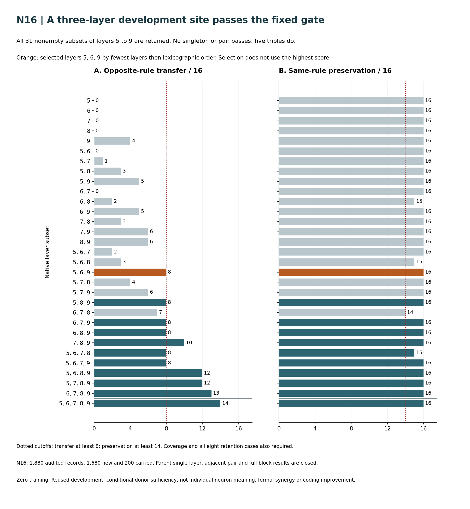
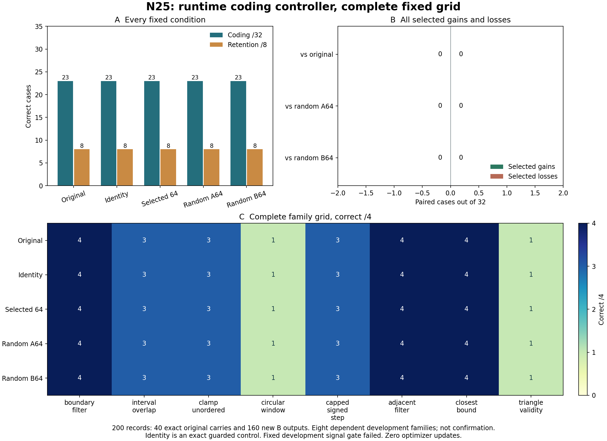
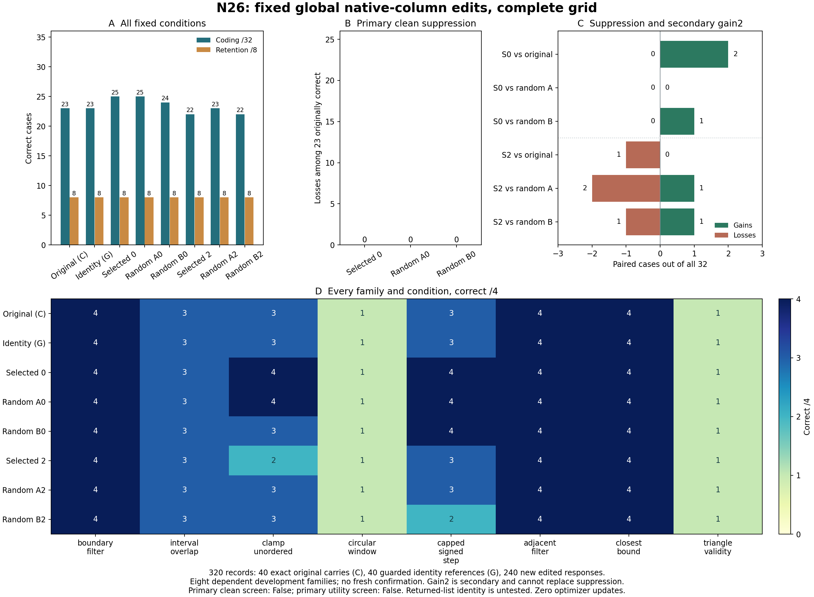
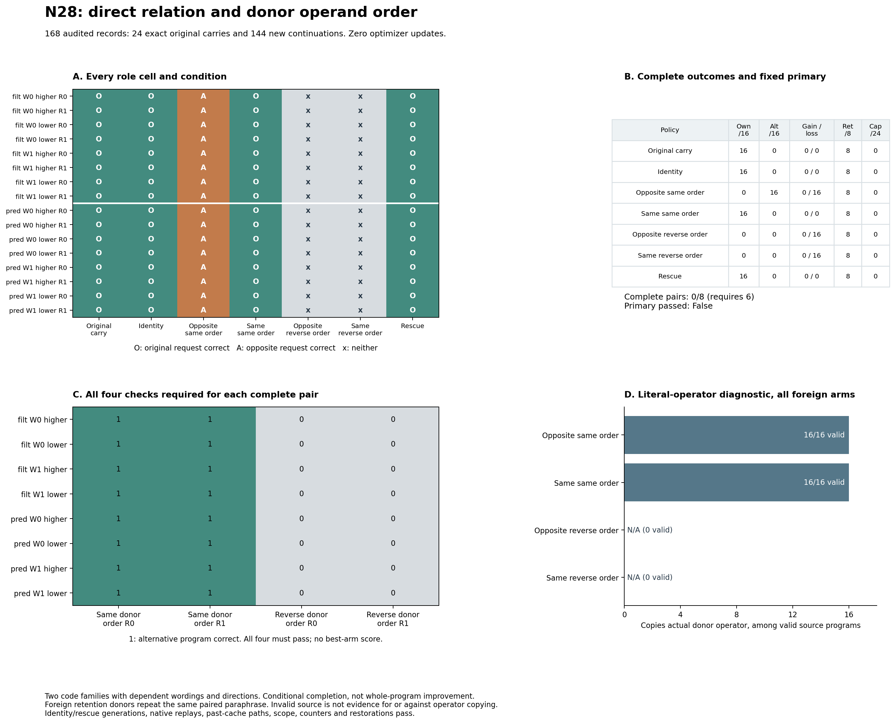

Observe native neurons during tasks and responses. Test causal interventions and direct model edits against executable coding and retention.
Native-neuron observation, causal interventions and direct model edits. Zero training.
Updated 01 November 2026 · 09:19 ISTCurrent window ends 01 Nov · 18:54:39 IST91 detailed sections · self-contained HTML
Intent at a glance / evidence snapshot
Research objective and current evidence.
A private, no-training investigation into native neuron function and useful coding edits, with conversational behavior measured alongside coding. Structural edits, steering and new computations require explicit controls.
Every improvement must come from tweaks. Zero optimizer updates.
Existing weights, added neurons/layers and steering vectors must not be trained. Gradients may measure influence; prescribed manual assignments are allowed.
Recent evidence and pending work
Observation and physical channel editing have passed their engineering gates. Whole native sites can change program choices in the recorded conditional-completion panels. Individual neuron meaning, confirmed original-model coding improvement and new capability remain unestablished. Full transformer insertion remains unvalidated. The records below come from the current question register rather than a separate hand-maintained summary.
All 240 records and mandatory guards pass: 192 new replies and 48 exact original carries. Every new reply reaches native EOS; the longest has 974 tokens, so no U23 continuation is needed. Coding correctness is original 24/32, selected zero 26/32, random A 25/32, random B 24/32 and instruction 22/32. Selected zero has two gains and no losses, both within one task family; one gain also appears under each random. Random A has one gain/no loss, random B one gain/one loss, and the instruction two losses/no gains. Retention remains 7/16 in every condition without gains or losses. The selected mean token ratio is 1.02717 across all 32 coding cases and 0.99088 across the originally-correct 24; conservative comment-reduction lower bounds are negative. The complete output-reduction primary fails. The instruction mean ratio is 0.69298 but loses two correct programs. Actual counts are 27321 forwards, 83833 input exposures, 26155 new tokens, 126 manual assignments and zero backwards or optimizer updates. Worker time is 3634.698 seconds and notebook time 3687.729 seconds, not charged quota. The exact 585192-byte compact column bundle and all policies are retained. The distinct U24P prerequisite also passes: both full original BF16 replicas fit concurrently, and all 288 native decisions plus 96 first-cache witnesses match the unchanged parent. No full response is regenerated or regraded.
All 480 comparison records and mandatory guards pass: 352 new replies, 96 original carries and 32 exact instruction-retention reuses. Coding is original 55/64, selected zero 51/64, random A 53/64, random B 53/64 and instruction 48/64. Selected has zero gains and four losses across three families. Random A has one gain/three losses, random B two gains/four losses, instruction four gains/eleven losses. Every condition has all 64 valid coding sources; every coding failure is an executed wrong answer. Retention is 17/32 original/selected/instruction and 16/32 each random, with one original-correct arithmetic loss per random. Every new reply reaches native EOS; longest 2,134 tokens. Actual work is 73,795 forwards, 199,396 input exposures, 71,519 new tokens, 252 declared assignments and zero backwards/optimizer updates. Notebook time is 5,445.143 seconds, not charged quota. Five of six accuracy clauses fail; retention preservation passes. All 28 restorations and state/scope/counter guards pass. The separate post-launch/pre-output path prediction passes all 29,672 whole-cache comparisons across 288 same-prompt records. Complete token sequences remain identical in 69/96 selected, 67/96 random A and 70/96 random B records. This is a fixed-input cache-path result, not a utility or speed claim.
Q57 · N43: native normalization path control
resource incomplete closed no mechanistic result
N43 version 1 is terminal and resource incomplete. Both workers stopped at the frozen notebook-start plus 6,600-second boundary. The notebook records 6,604.751648142 seconds, which is not charged GPU quota. Worker self-reports total 47,439 forward attempts, 55,863 input exposures and 10,044 manual parameter assignments, with zero new tokens, backwards or optimizer updates. They report 5,020 of 7,587 group/site rows and 185 of 281 sampled decisions; these partial counts are unaudited and do not qualify a scientific panel. All 220 N43 execution hashes, 161 B and 78 A parent hashes, protocol, plan, auditor, notebook and payload matched before the single collection. Final server source JSON and private notebook/dataset metadata match. The collector preserved the interruption and correctly invoked no auditor. Every partial finite effect remains censored. No real figure or aggregate is created. All earlier host gates, original scalar-cache failure, minimal repairs, reporting-layout defect and source-to-claim review remain closed and preserved. A static recovery review finds that neither original worker saved the required final state snapshot or final version-ledger file. Per-context assertions remain preserved but cannot replace the frozen end-of-worker artifact requirement. No criterion-preserving path can mark v1 complete from the available receipts. The original auditor remains uninvoked and no recovery job is launched.
Execution status: NO_GPU_ACTIVE_PRIVATE_REPORTING_COMPLETE. Read the Research Logbook for the complete sequence, failed criteria and next decisions.
Reading paths: ambition and neuron definition: 01–05; mechanisms: 06–11; scientific controls: 12–19; operations: 20–28. Section 29 gives the compact intent and section 30 links original records. Sections 31–91 retain completed studies and subsequent intent.
01 / Purpose
Understand the computation. Change the computation. Test the consequence.
Discover what individual Gemma neurons and small interacting groups contribute to coding, then improve specific coding behaviours through direct interventions without training the model.
The ambition is to move beyond treating a language model as a sealed box that can only be prompted or fine-tuned. We want to inspect its internal computations, make precise changes to those computations, and establish which changes causally help it write or repair correct code. Neuron activity, connection weights, the number of neurons and, where technically justified, the arrangement of layers are experimental variables.
The user’s proposed project banner, “Aiming for Superintelligence with Gemma,” expresses ambition. It is not an achieved result, a definition of the current model, or permission to make unsupported claims. The sprint’s concrete target is interpretable, reproducible improvement in a bounded coding behaviour using neuron and connection tweaks alone. A broader theory of controllable capability composition would be a longer-term aspiration.
The central question
Can we identify a repeatable causal role for a native neuron or small group, use that interpretation to prescribe a useful edit, and show that the edit improves fresh executable coding tasks with acceptable effects elsewhere?
We must distinguish three achievements: technical access to an internal computation; functional understanding supported by interventions; and useful improvement that generalizes beyond the examples used to choose the edit. None implies the next automatically. The research must progress through all three, preserving informative failures.
Observe & manipulateProve the intervention actually runs and can be restored.
Explain & falsifyTest a bounded functional hypothesis against alternatives.
Improve & retainMeasure fresh coding correctness and collateral effects.
02 / Research contract
The latest human intent governs this sprint.
NO MODEL TRAINING.
All progress and improvement must come from tweaks. This applies to existing weights, added neurons, added layers, adapters and steering parameters. Zero optimizer updates. No SFT, LoRA, RL, learned steering vectors, fitting new branches or disguised tensor optimization.
The downloaded pretrained model is the starting material. This constraint prohibits further training during the current study; it does not pretend the original model was never pretrained. Earlier adaptation experiments are historical evidence, not the method to continue. New neuron experiments use the pretrained base, without loading the previously trained adapters.
Permitted
Outside the current sprint
Record activations; calculate influence estimates; inspect existing weights.
Apply calculated gradients as weight updates, even only to new neurons.
Prescribed activation scaling, offsets, zeroing, replacement and patching.
Fit steering vectors or optimize intervention tensors with a training objective.
Directly assign specified connection weights; save exact reversible patches.
Continue old fine-tuning, optimizer-dynamics or self-training work.
Controlled deletion, split cloning, prescribed recombination and insertion.
Call cloning a new capability, or introduce answer lookup at inference time.
Use discovery data for hypotheses and a small predeclared development comparison.
Choose or repair edits from final-test outcomes; hide adaptive search.
Measurement is not an update. A backward pass can calculate how an output depends on an activation while every model parameter remains unchanged. Such attribution is allowed. No optimizer is constructed or stepped in N01. Permanent manual assignment is also allowed: training is one way to choose numbers, not a prerequisite for changing them. Every assignment must have a recorded rule, scope and resulting patch.
The user has now authorized a public GitHub project with ongoing documentation/code updates. Kaggle notebooks, datasets, raw experimental assets, historical trained adapters and the unpublished paper remain private. Reviewed validated compact edit tensors, recipes, reconstruction code and aggregate records may be public. No competition entry/submission, paid resources, other Codex chats or subagents are authorized. Existing NVIDIA NIM credentials may be used for bounded generic methods discussions under the privacy limits below. The user does not want routine questions, storage bloat or constant status messages. Resolve routine engineering problems independently and preserve their evidence.
03 / Origin of the goal
The user’s questions define the research direction.
Idea
Meaning for the work
Current interpretation
What does each neuron do?
Build a systematic activity inventory and examine the causal roles of selected native neurons and groups.
Broad coverage is possible; exhaustive one-label-per-neuron semantics is not promised.
Can steering improve a domain?
Alter chosen activity and compare executable coding outcomes.
Require selectivity, restoration, random controls and fresh examples.
What if we remove some neurons?
Separate functional suppression from physical removal and measure both behavioural and computational consequences.
Do not infer speed or memory savings from zeroing hooks.
Can we create more neurons?
Construct new gated units with specified weights and test their contribution.
No training of those units; cloning, recombination and other prescribed constructions need appropriate controls.
Can a whole new layer add capability?
First establish architecture compatibility, then test a specified computation in an inserted block.
A residual MLP block and a complete transformer decoder layer are different operations.
Can permanent changes be made without training?
Edit stored input/output connections directly and save a reproducible patch.
Yes. Useful values still require a defensible selection rule and independent evaluation.
Can another AI challenge the approach?
Seek criticism of confounds, engineering assumptions and claimed novelty.
Consultation is advisory; evidence remains primary literature and executed experiments.
First prove that these operations are possible.
Make engineering feasibility the gate before deeper capability experiments.
Local fixtures and actual full-checkpoint results must be labelled separately.
The earlier self-improvement proposal (Gemma selecting a benchmark, creating data and training itself under a fixed step budget) is retained as context but superseded. The later interest in watching training change neurons is also superseded as a method for this sprint. Task data now serve probing, evaluation and independent execution checks; they are not a training dataset. NVIDIA models may help draft generic probes only when a separate protocol authorizes it and an independent oracle verifies them.
The intended visual interface remains part of the ambition: inspect neuron coordinates, compare behaviour and apply controlled tweaks. It follows a validated intervention backend and useful experiments. A visually impressive activity map is not a substitute for a functional finding.
Canonical idea record: research/user_ideas.json. Preserve original proposals with dated overrides, especially the prohibition on training additions that was introduced after those additions were first discussed.
04 / Experimental object
Checkpoint lineage and measured precision.
Current primary model
The current causal study uses google/gemma-4-E2B-it@3e22461f65e89153144f8adb70e3b8c2cc9845a7, with original unquantized BF16 text parameters and no trained adapters. The text-only decoder, token and per-layer embeddings and tied output head contain 4,628,569,344 unique parameters. Media modules are excluded. BF16 is not FP32, and the recorded dtype does not establish native BF16 acceleration on T4. The source-matched NF4 model is a separate validated representation.
Historical quantized anchor
The table records the historical quantized anchor used through N01. N02 now provides a separately pinned official text-only BF16/NF4 pair, described below. Keep these lineages distinct.
Checkpoint
unsloth/gemma-4-E2B-it-unsloth-bnb-4bit
Revision
0ae102ac289cc3f17500a607ad817849778b8ba7
Official parent
google/gemma-4-E2B-it, instruction-tuned
Official size
2.3 billion effective parameters; 5.1 billion including per-layer embeddings.
Text decoder
35 layers. In the measured configuration, MLP width is 6,144 in the first 15 and 12,288 in the remaining 20.
Native MLP channels in scope
337,920. This is not a count of every computational unit in the multimodal model.
Actual experiment precision
Mixed NF4 4-bit storage and BF16 quantized-linear compute, BF16 unquantized large matrices, FP32 normalization vectors. New small branches use documented FP32 parameters.
Full precision?
No. Not every weight is 4-bit, and this is neither an unquantized BF16 model nor an all-FP32 model.
Advertised capabilities
Text output; text/image/audio understanding; coding, reasoning, function calling, multilingual use and 128K E2B context.
Measured study scope
Text only, short controlled prompts, greedy decoding and thinking disabled. We have not independently validated all advertised modalities, context length or official benchmark scores.
The official size and capability summary comes from the Google model card. Layer widths, execution scope and dtypes are project measurements and pinned implementation facts; see model_identity.json and the linked precision receipts.
Precision reporting correction
Earlier FP16 prose was incorrect. Saved predecessor environments record mixed NF4/BF16, with FP32 vectors and prior adapter factors. The dated precision erratum preserves that correction without rewriting historical protocols or measurements. T4 does not report native BF16 support; recorded tensor dtype is not proof of native acceleration.
Quantization is a scientific scope limitation. A result on this checkpoint is a result on this checkpoint until reproduced under another precision or model. Unpacking NF4 into floating-point tensors does not recover information discarded by quantization. It also changes the execution path, so a separate unchanged unpacked baseline is essential.
Paired neurons: unquantized E2B and the NF4 model
N02 engineering completed on the actual checkpoint.
The matched pair uses google/gemma-4-E2B-it@3e22461f65e89153144f8adb70e3b8c2cc9845a7. One condition loads unquantized BF16; the other derives NF4 from that same floating-point payload. Text paths, all required shapes, tied embeddings/head, source-weight or requantization relationships, tokenizer input hashes and actual dtypes were checked. Vision/audio modules were absent. The text model has 4,628,569,344 unique parameters.
All 460 measurements and hard gates passed. In the tested layer, physical deletion matched zeroing and stored outgoing-vector doubling matched gain-2 steering. New zero-output units preserved the dense target-layer baseline exactly. The NF4 edit first dequantizes the selected MLP and uses that unchanged dense baseline; its numerical difference from the original was also recorded. BF16 split cloning was tolerance-qualified, with a maximum 0.125 logit change and unchanged top-1 outputs on these 16 prompts.
Custom patch recipes and short cached generation passed. This covers one channel in layer 34, not every structural operation or arbitrary layers. No neuron role, coding improvement or speedup was tested. Audited engineering receipt and limits.
The user explicitly proposed comparing the same neurons in an unquantized text model and the current 4-bit checkpoint. The aim is to establish whether a neuron's apparent role and intervention effect survive a change in numerical representation. Avoiding training removes optimizer-state memory, but weights, caches and any attribution graph still consume memory.
Text only means the text decoder plus token/per-layer embeddings and the output projection. The output head alone cannot generate text. Omit vision/audio only with a verified text-model loading path. Check all text keys, tied weights, special tokens/chat template, per-layer inputs and cache semantics. Do not accept silently missing weights or assume wrapper equivalence.
Unquantized BF16 inference passed the bounded T4 gate; FP32 is separate. N02 peaked at 8.95 GiB allocated CUDA memory for BF16 and 7.00 GiB for the matched NF4 condition. All BF16 model parameter tensors were BF16; actual buffers included FP32 RoPE values. The earlier anchor's explicit FP32 normalization-vector conversion was not used in this pair. Attribution-graph memory remains a separate gate. FP32 text-parameter storage alone would be about 18.5 GB before buffers and workspaces. These runtime measurements are resource records, not a speed comparison. Official memory guidance.
Pairing gate
Evidence required
Common source
Pin the original floating-point revision and trace the quantized derivative; a family name is insufficient.
Coordinate correspondence
Match text module paths and gate/up rows plus down columns. Check for pruning, permutations, architecture conversion, merges or additional adaptation.
Weight relationship
Validate unchanged floating-point tensors and quantization relationship/fingerprints. Equal shapes alone are insufficient.
Incomplete derivative provenance
Derive a fresh NF4 condition from the same pinned floating-point source under a recorded precision/skip configuration. Keep Unsloth as a separately labelled anchor.
Functional correspondence
Measure aligned activities and causal effects. Preserved index ordering does not guarantee identical semantic roles after quantization.
When quantization preserves ordering, a row/column coordinate is directly pairable. A validated permutation map can restore correspondence if the basis was reordered. Otherwise report separate models rather than attributing unexplained checkpoint differences solely to precision.
Freeze shared tasks, coordinates, strengths and comparable decoding. Include unchanged/sham, repeat, numerical and matched-random controls in both representations. Start with functional steering, avoiding a simultaneous physical-unpacking confound. Predeclare balanced candidate selection or cross-apply both representations' fixed selected groups. Compare activity correlation/scale, effect sign/magnitude, coding/retention, runtime and memory. Fresh executable outcomes are still required for a coding claim. No training is introduced.
05 / Computational specification
A neuron is a calculation and its connections.
For the gated MLP studied here, a native neuron/channel has two incoming weight vectors and one outgoing vector. Its value changes with the current token and context. The stored connections determine what calculation it performs and how that calculation contributes to the layer output.
hj(x) = GELU(gjTx) · (ujTx) MLP(x) = Σj vj hj(x)
x: the hidden representation presented to the MLP.
g_j: one row of the gate projection; u_j: the corresponding row of the up projection.
h_j: the post-gating scalar activity for that neuron at a token.
v_j: the corresponding column of the down projection; it writes the activity back into the hidden representation.
Hidden vector x
→
Gate + up projections GELU(gᵀx) · uᵀx
→
Activity hj Observe or intervene here
→
Outgoing vector vj Contribution to MLP output
For hidden dimension d and width m, the gate/up matrices have shape [m,d] and the down matrix has shape [d,m]. One channel therefore involves 3d connection values in a bias-free dense MLP, not one stored scalar. The implementation uses the model’s configured GELU variant. Branch activation, normalization, placement and dtype must be stated explicitly rather than assumed identical to the original MLP.
Gemma’s surrounding decoder also includes attention, normalization, residual additions and per-layer input/embedding machinery. A local change to MLP output can therefore have nonlinear consequences downstream. Even exact cancellation at one intermediate tensor does not mean the rest of the model has no other route to represent the behaviour.
A neuron may contribute to several computations; a behaviour may depend on many neurons. “This neuron is the Python neuron” is not an acceptable interpretation. A defensible statement is narrower: under specified prompts and positions, a coordinate contributes to a measured distinction, with necessity, rescue and cross-task evidence.
06 / Instrumentation
Make the internal measurement specific and auditable.
Attach hooks immediately before each text MLP down projection to observe post-gating activity. Explicitly exclude vision/audio modules with similar names. Use eager execution when needed: fused implementations may bypass hooks. A missing hook is a failed measurement, not zero activity.
Measurement
What it tells us
What it does not establish
Token-aligned activity, mean, RMS and variance
Which coordinates differ between matched contexts and whether the scale is stable.
A semantic function, causal necessity or useful steering direction.
Correct-minus-alternative output margin
A graded preference on the specified decision.
Unrestricted code correctness or a whole-agent capability.
Gradient × activity
A local first-order sensitivity estimate around the observed computation.
The effect of a large edit in a nonlinear model, or an instruction to update weights.
Selected-neuron traces and concrete examples
Which contexts support or contradict a candidate role.
A universal label that applies across all inputs, layers or model revisions.
Freeze the checkpoint, tokenizer/chat template, layer coordinate, intervention position and decoding policy. A trace at the last prompt token is not an all-token circuit. Prompt and generated positions require separate treatment. With cached decoding, “last token” during prefill means the final prompt position; during subsequent calls it means the newly processed position. Record which calls are affected.
N01 screens the last prompt position only. Its gradients are ordinary autograd gradients, not the robustified/LRP-modified gradients or iterative optimization of DSI. The model parameters stay frozen; gradient tensors are measurements. Save compact aggregates and selected examples instead of full all-token activation dumps.
07 / Intervention vocabulary
Specify what changes, where it changes and how it is restored.
Operation
Specification
Evidence required
Activity gain
h_j ← α h_j, with predeclared α such as 0, 0.5, 1, 1.5 or 2.
Hook execution, exact α=1 control, restoration and matched random coordinates.
Activity offset
h_j ← h_j + β r_j, where r_j is a fixed discovery-only scale.
Scale provenance, β grid, zero-offset control and token-scope control.
Activation patch
Replace selected activity with a specified donor context’s activity.
Original vector checksum, exact prescribed delta, precision-matched baseline, patch reload and reversal.
Permanent input/gate edit
Prescribe changes to g_j or u_j.
Record both affected activation and output behaviour; nonlinear response means this is not generally equivalent to an output gain.
Physical deletion or addition
Change coordinated matrix rows/columns or attach an explicitly defined equivalent branch.
Shape/index maps, unchanged baseline, computation equivalence controls and real-model compatibility.
For an unpacked dense MLP, multiplying down-projection column j by 1.5 permanently scales that channel’s local contribution. It requires no training. A runtime gain of 1.5 at the same channel is the corresponding functional comparison; differing arithmetic paths can still change rounding. Saved patches make the prescribed edit persist after reload without storing another complete base model.
# Conceptual example: only for an explicitly unpacked dense matrix.
with torch.no_grad():
down_projection.weight[:, neuron_id] *= 1.5
# Save the exact patch + target checkpoint/module/coordinate metadata.
# Never apply this as if packed NF4 storage were a dense matrix.
Use a baseline → edited → restored execution sequence. A temporary hook must be removed even after an exception. A permanent edit must retain an original-value or exact inverse patch. “Permanent” means saved and reproducible, not irreversible or untracked.
08 / Structural specification
Delete, duplicate and edit coherently.
Deletion
Removing channel j physically requires removing row j from both gate and up projections and column j from the down projection. Deleting only one of these breaks correspondence or shape consistency. Keep a map from original coordinates to new indices. Removing a set of k dense channels removes 3dk scalar weights, but actual memory, kernels and latency must be measured separately.
G′ = G[keep, :] U′ = U[keep, :] V′ = V[:, keep]
Compare the physically reduced layer with functional zeroing of exactly the same channels. They are equivalent at the ideal arithmetic MLP sum, but changing matrix sizes may select different kernels or accumulation orders. Establish the unchanged dense/dequantized baseline first. Do not interpret its difference from the NF4 baseline as a pruning effect.
Split clones
A copied neuron with the same incoming vectors produces the same activity. To preserve the original function, divide its outgoing vector among the original and all copies. Two identical units with outgoing vectors v/2 and v/2 sum to the original contribution. Multiple copies require multiplicity-aware splitting. Without splitting, duplication is amplification; compare it with the equivalent gain before claiming anything beyond amplification.
Output-vector and input-vector edits
Editing a selected output vector changes how an already computed feature contributes to the residual representation. Editing input/gate vectors changes the feature’s response itself. Keep those operations distinct in the experiment design. Use fixed specified transformations, original-weight recombinations or documented scalar changes. Do not fit learned deltas. Record every selected connection and reject nonfinite or malformed patches.
Packed quantization boundary
The dense helpers deliberately reject packed integer weights and unsupported wrappers. The 4-bit representation has associated quantization state; its storage layout is not the mathematical matrix. Unpack only the selected layer when necessary, verify the reconstructed shapes/dtype, and use a new unchanged unpacked baseline. Higher-precision accumulation of reconstructed weights is a distinct numerical condition, not restoration of the original unquantized checkpoint.
Implemented primitives: gated_mlp_surgery.py. Local invariants compare edits with independent channel-contribution formulas. These tests establish engineering identities on small actual Gemma MLP instances; actual E2B structural success remains a separate evidence level.
09 / Capability construction hypothesis
Adding a calculation is feasible. Adding a useful calculation is the experiment.
A new gated unit needs specified incoming gate/up vectors and an outgoing vector. No optimizer is necessary to create them. The central challenge is choosing a useful computation from existing model structure or a justified mathematical construction while preserving behaviour elsewhere.
Construction
What it tests
Essential comparison
New unit with zero outgoing vector
Compatibility and identity preservation at insertion.
Exact no-edit replay, cached generation, serialization and restoration. It adds no behavioural capability while silent.
Split copy of an existing unit
Function-preserving width expansion and index bookkeeping.
Original unchanged function; not a novelty or improvement claim.
Unsplit or rescaled copy
Whether strengthening an existing computation helps.
Gain-equivalent intervention on the original neuron.
Copied unit with negative outgoing contribution
Whether subtracting a known contribution helps.
Equivalent suppression/cancellation, plus matched random removal.
Same-layer gate/up recombination
Whether a prescribed new nonlinear interaction between existing input features can be useful.
Original components, independent gain combinations, parameter-count/scale-matched random recombinations and retention.
Prescribed outgoing-vector recombination
Whether an existing feature can be redirected usefully.
Direct output edit and norm-matched random direction, with no answer-dependent inference rule.
Recombination is a hypothesis, not an established mechanism. Same-layer vectors at least share an input coordinate system; copying across layers requires additional alignment evidence because matching dimensions do not imply matching semantics. Choose candidate rules on discovery evidence, freeze a finite comparison on development, and evaluate fresh specifications. Do not adapt weights to final outcomes.
A useful new capability must be operationally defined: for example, resolving a specified class of code repairs on fresh examples that the base systematically misses. More parameters, a changed activation picture, memorized examples or better A/B formatting are insufficient. “Capability added” is stronger than “accuracy improved on this small panel” and must be earned with corresponding controls.
Adding an external function that reads task labels or returns benchmark answers would not test neuron-based improvement. Every candidate must operate on the same available hidden representation and inference inputs, using the declared fixed computation.
10 / Depth and architecture
Expand the network without confusing different kinds of layers.
Parallel new-neuron branch
MLP′(x) = MLP(x) + Fnew(x)
A small new gated branch alongside the original MLP computes additional neuron contributions without resizing packed matrices. It is computational width expansion through a separate branch. State this implementation honestly; it is not physical expansion of packed storage.
Inserted residual MLP block
x′ = x + Fnew(RMS(x))
This adds a new nonlinear block in the residual path while preserving the stream dimension. Setting all new outgoing weights to zero gives F_new = 0, providing an identity compatibility test. After that gate, this sprint can test prescribed copied/recombined weights or fixed strengths. It may not train the new block. Placement before/after normalization or at a different decoder boundary changes the experiment.
Complete transformer decoder layer
Inserting a full decoder layer also changes attention, positional logic and cached state. The existing small residual MLP implementation does not establish that a full decoder-layer insertion works. Before attempting it, inspect and test layer indexing; global/sliding attention layout; shared key/value state; rotary position handling; cache allocation/update; normalization/residual scalars; per-layer embeddings and input gates; config serialization; save/reload and generation over multiple tokens. A tensor shape check alone is inadequate.
A full-layer experiment is conditional on engineering evidence, time and free quota. Do not make it the default next job merely because it sounds more ambitious. A minimal, causally explained improvement is more informative than a larger incompatible architecture. Preserve the full-layer ambition as a separate research question with its own gate.
Implementation for the two simpler branch forms: expansion.py. N01 uses eight parallel new neurons and a 64-neuron normalized residual MLP block at zero output. These are compatibility checks with zero optimizer steps.
11 / Evidence before depth
Prove that the operation works before interpreting what it does.
Gate
Pass condition
Failure response
G0 · Identity and environment
Pinned checkpoint/revision, tokenizer, versions, device, actual dtypes and text-module scope verified.
Stop measurements; preserve mismatch details and repair under a dated amendment.
G1 · Observation
All expected hooks run at the specified position with finite values and matching masks/token IDs.
Do not treat absent captures as inactive neurons.
G2 · Functional intervention
Declared coordinates change, identity is exact where required, non-target scope is correct and exception restoration succeeds.
Do not score a missing or wrongly placed intervention as a causal null.
G3 · Architecture compatibility
Forward pass, generation, cache behaviour, no-op insertion, branch serialization/reload and restoration pass on the actual checkpoint.
No architecture/capability conclusions; retain partial outputs and narrow the engineering repair.
Keep precision/kernel effects separate from neuron effects.
G5 · Functional role
Necessity, counterfactual patching/rescue, label/prompt controls and cross-family tests support a bounded interpretation.
Revise or reject the role hypothesis without relabelling the outcome as success.
G6 · Useful improvement
Frozen edit improves fresh executable coding outcomes with declared retention and uncertainty, beyond relevant controls.
Report the null or trade-off; do not select a different “final” test.
The local record contains 14 surgery/expansion checks and three small actual-decoder integration tests. These cover identities, manual edit effects, shape refusal, hooks, gradient observation, generation and restoration. A preserved first tiny-decoder fixture failed because its RoPE configuration was incomplete; it was repaired before GPU launch. Passing small fixtures is evidence for the implementation, not proof of full E2B compatibility.
Prior actual E2B captures and group steering establish observation and intervention execution. They do not establish meaningful individual-neuron labels or useful structural edits. The engineering readiness record separates those statuses. Refresh it from actual receipts; never promote an operation merely because code for it exists.
12 / Questions worth resolving
Choose depth of explanation over a collection of attractive edits.
Hypothesis
Decisive observation
What would weaken it
H1 · Sparse native groups support a coding distinction.
Selected suppression selectively damages the distinction and appropriate restoration/patching reverses it across paraphrases.
Effects follow A/B position, formatting or arbitrary high-activity units equally well.
H2 · A direct connection edit improves a bounded coding domain.
A frozen prescribed edit beats unchanged and random controls on fresh executable repairs while preserving control tasks.
Gain vanishes under new specifications, changed labels, matched precision or token budgets.
H3 · Constructed nonlinear units do more than amplification.
A fixed recombined unit helps where gain-equivalent clones and component gains fail, with interpretable response evidence.
The same outcome follows simple scaling or a random direction of comparable magnitude.
H4 · A new prescribed MLP block composes useful existing features.
Controlled placement and fixed copied/recombined weights yield a fresh coding benefit beyond equal-width parallel addition.
Only the silent compatibility check passes, or improvements reflect numerical or output-format changes.
H5 · Removing a localized computation improves correctness or efficiency.
Replicated behavioural gain with justified causal role; physical removal separately yields a measured resource benefit if claimed.
Zeroing only changes generation length, or matched random deletion is equally effective.
These are proposed questions, not frozen follow-up experiments or discoveries. N01 is the first instrumentation/decision pilot, not a complete test of H1–H5. After its audit, select the smallest next test that distinguishes competing explanations and freeze its exact protocol. Do not pursue all directions simultaneously merely to create activity.
The strongest potential contribution would connect specific computation → controlled edit → fresh coding outcome, together with failure conditions and reproducible patches. A principled negative result can be valuable if it rules out a tempting mechanism with adequate controls; a weakly powered null should be labelled inconclusive.
13 / Experimental material
Repeated task families, not one question per domain.
The user proposed roughly 10–30 tasks across different domains. Operationally, the useful unit is a task family with repeated, controlled instances. A single question cannot distinguish a stable computation from a prompt accident. Coding is the target domain; other domains test whether a supposedly useful edit damages broader behaviour or merely changes answer style.
Domain
Working family ideas
Role
Python coding
Boundary/index handling; negative integers and modulo/division; stable order and duplicates; operation composition/order.
Primary capability outcomes through executable code and repairs.
Functional contrasts and retention; not a substitute for coding outcomes.
Structured extraction / instructions
Copy versus transformation; field inclusion/exclusion; JSON nesting/types; conditional or negated instructions.
Response-format, copying and instruction-compliance controls.
This twelve-family design is a working scope, not a promise that all 720 originally contemplated examples will fit the remaining budget. Its provisional 20 discovery / 20 development / 20 confirmation examples per family must be replaced by a precise frozen protocol before use. N01 intentionally begins with four families to validate instruments and causal comparisons at lower cost.
Construct matched pairs that change the required operation while preserving irrelevant structure. Counterbalance candidate order, answer labels, variable names and surface phrasing. Include examples designed to separate plausible wrong algorithms. For coding, distinguish syntactic validity, execution failure, wrong results, response-format failure and token-cap truncation. Hidden stress probes should expose empty inputs, negative values, duplicates, equality boundaries and combinations that are absent from the visible example.
Fresh confirmation must change task specifications or meaningful compositions, not simply shuffle duplicate prompts. Keep discovery, development and confirmation separate in source assets, IDs and decision logs. Repeated A/B views of one instance are correlated; count independent task instances and resample those clusters if estimating uncertainty. A task-local improvement is not yet transfer to repositories or an agent.
14 / Current experiment
Native-neuron localization, steering and expansion compatibility.
N01 v1 was launched privately on 30 October at 00:15 IST (29 October 18:45 UTC), from local freeze commit 9bf73cb. Server metadata verified privacy, and downloaded ordered notebook cell sources matched the local source exactly. The live status snapshot appears in this document’s status panel; it must be refreshed from Kaggle before any further launch.
32discovery prompts
64development prompts
2,320fixed development measurements
0optimizer updates
Families
Boundary inclusion/exclusion, floor versus truncating signed division, first versus last duplicate order, and a JSON-field control.
Crossing
Each independent instance appears with opposite semantic requirements and both A/B option orders.
Independent instances
Two per family in discovery; four per family in development. Those become 8 and 16 crossed prompts per family, respectively.
Original data checks
96 prompts; both candidate labels uniquely verified by independent semantic/execution formulas. 7,584 candidate probe executions. Pinned tokenization gives 84–160 prompt tokens; A and B each occupy one token.
Candidate ranking
For every native MLP channel, calculate discovery gradient × activation at the final prompt position. Rank each coding family by the minimum of its A-correct and B-correct stratum means; tie-break by original layer/channel coordinate.
Candidate groups
Top single neuron and top eight per coding family; two eight-neuron random groups matched by layer and discovery activity-RMS decile, seeds 3101 and 3102.
Full development matrix
34 conditions × 64: base; selected-single gains 0/2; selected-eight gains 0/0.5/1.5/2; both random groups at gains 0/2; identity gain; silent eight-neuron parallel addition; silent 64-neuron residual MLP insertion.
Counterfactual matrix
For each coding family, selected and both random groups receive opposite-requirement same-instance/same-order donor activations. Nine conditions × 16 = 144 further measurements.
Compatibility placement
Fixed zero-indexed layer 17. New branches have zero outgoing weights; they are not trained. Full decoder-layer insertion is not part of N01.
Required controls
Identity gain and both silent additions reproduce all 64 baseline last-position logit hashes. Both branches preserve short cached generations and pass save/reload checks. All original logits replay after removing interventions.
The pilot measures conditional two-patch choice, raw A/B logits, correct-minus-wrong margin and unconstrained top-token label accuracy. It does not measure unrestricted code writing, long-form repair or end-to-end software-agent performance. Its ordinary gradient screen is not a semantic interpretation by itself, and four development instances per family are too small for a broad capability claim.
Architecture no-op checks precede the fixed intervention comparison in the running implementation. A failure stops interpretation. Preserve every raw row and every condition, including adverse effects. Audit all 2,320 expected rows; a partial matrix is not a completed experiment. The runner has a 6,300-second cap, the notebook 6,600 seconds and the platform 7,200 seconds, with incremental saves.
Frozen sources: protocol, tasks and oracles, runner, preflight, launch, privacy/source receipt. The frozen protocol contains an earlier future-learning sentence; the subsequent human no-training constraint supersedes that sentence without altering the running experiment. Record this in a scope amendment, not by rewriting frozen history.
15 / Causal reasoning
A candidate role must survive attempts to disprove it.
Describe the hypothesis. Identify the behaviour, input contrasts, layer/channel coordinates and token positions. State alternatives such as answer-label preference, punctuation, copying or general output confidence.
Observe both supporting and contradicting examples. Preserve positive and negative activity/influence cases. Do not label a unit from one memorable prompt.
Test necessity. Suppress the coordinate or group and measure selective loss on the proposed behaviour. Compare layer/activity-matched random units and non-target tasks.
Test directional intervention. Apply the predeclared gain/offset settings. Effects may be nonlinear and non-monotonic; retain the entire curve.
Test counterfactual transfer and rescue. Patch appropriately aligned donor activity, include own-input identity and random-donor/group controls, and ask whether the predicted behavioural distinction changes.
Challenge surface explanations. Change labels, option order, variable names and paraphrases. For promising candidates, test free-form executable generation so an A/B-choice finding does not masquerade as a coding mechanism.
Replicate the bounded claim. Freeze a new panel and edit before measuring it. Report where the proposed role fails, not just where it appears.
Necessity does not imply sufficiency. A knockout can damage a downstream shared computation; a successful patch can import several correlated effects. Multi-neuron edits may interact. Compare single edits and their joint effect against the sum of individual effects to expose nonlinear interactions, using a frozen small comparison rather than adaptive combinatorial search.
Required role record
hypothesis_id · checkpoint/revision · module path · original layer/channel · token scope · discovery examples · candidate rule · alternative explanations · intervention grid · random controls · necessity result · patch/rescue result · coding/retention outcomes · counterexamples · uncertainty · claim scope
For deleted or duplicated layers/units, maintain original-to-current coordinate maps. A native coordinate is tied to a checkpoint and basis. Equivalent permutations can change its index without changing the underlying function; do not treat coordinate names as universal semantic identifiers.
16 / Confound control
Every improvement needs a competing explanation to beat.
Potential confound
Required response
A/B labels or candidate position
Opposite semantic requirements, swapped option orders, label-stratified results and later free code generation.
Answer style, syntax or token caps
Separate exact format, syntax, executed correctness, raw text, output length and cap status; keep decoding budgets fixed.
Large generic activity
Layer/activity-matched random neurons, scale/norm checks and cross-domain retention.
Attribution approximation error
Actual finite interventions, multiple strengths, concrete counterexamples and nonlinear interaction checks.
Normalization-mediated effects
Measure relevant input/output scales; note that removing one contribution can renormalize remaining contributions downstream.
Unpacking or dtype changes
Original packed baseline plus unchanged unpacked baseline; compare surgery against the latter. Preserve numerical deltas separately.
Kernel shape / accumulation changes
Repeat and identity controls, function-equivalent clone/gain/zeroing comparisons and raw-logit checks.
Unused hooks or stale patches
Observed invocation counts, exact source manifests, targeted-coordinate audits and final restored baseline.
Selection from evaluation feedback
Discovery-only ranking, declared development selection and a sealed fresh confirmation protocol.
Extra parameters alone
Equal-width/equal-magnitude random constructions, silent additions and equivalent scaling controls.
Unequal computation or input access
Same prompts, token budget, inference information and evaluation oracle; record latency and added operations.
Function equivalence in exact arithmetic is not always bitwise equivalence in floating point. Required exact no-ops in a frozen protocol remain required. If a new structural design cannot provide them, freeze a justified numerical tolerance and matched numerical controls before results, rather than loosening the criterion after failure. A control failure must not be rebranded as an interesting capability effect.
17 / Measurement specification
Measure the outcome that the claim actually names.
Coding performance
The primary eventual capability outcome is functional code correctness or repair success against independent executable tests on fresh specifications. For every condition retain the generated source, execution verdict, error category, task ID, decoding settings, token IDs/counts and truncation status. A changed logit margin is useful mechanistic evidence but not an executed-code improvement. A higher conditional patch-choice score is a narrower result than better unrestricted coding.
Retention and selectivity
Report target-domain change together with non-target coding and noncoding changes. Freeze an acceptable retention margin before confirmation. If a target improves while other behaviours degrade, report the trade-off. A global accuracy average can conceal a destroyed subskill; preserve family-level paired outcomes.
Efficiency
Zeroing a channel with a Python hook ordinarily leaves the dense matrix multiplication intact and may add overhead. Physical removal can change parameter storage and operations, but latency depends on kernels, hardware and sequence length. Measure peak allocated memory, actual stored patch/model bytes, wall time after warmup and fixed-work generation/forward latency. Reuse the same inputs and token lengths for a throughput comparison. Fewer generated tokens are not automatically faster per-token computation.
Uncertainty
Use paired per-task comparisons, disclose gains and losses and identify the independent sampling unit. Report intervals and the complete frozen contrast set; control multiplicity for confirmatory claims. Bootstrap independent instance/specification clusters, not correlated label/order variants. Freeze the minimal meaningful effect and panel size before final testing; do not invent them after seeing the apparent improvement.
A second inference seed with greedy deterministic decoding does not create independent tasks. Repeating the same prompt can test execution stability, but transfer requires new examples. Claims should state the model revision, precision, task distribution, intervention position and sample size that actually support them.
18 / Data integrity
Ground correctness outside the model being edited.
Use independently written executable or exact-answer oracles. Verify that visible examples and both candidate implementations match their intended semantics; record source-gate rejection separately from execution failure. For generated code, run it in a bounded environment with explicit time/resource limits. The model’s explanation, confidence or a second model’s opinion is not a correctness oracle.
Each record needs a stable ID, family, independent instance/specification ID, split, template version, generation seed if applicable, input hash and oracle version. Contrastive views share a parent instance ID. Validate split disjointness by semantic template/specification as well as ID and byte hashes. Hashing a task does not make a duplicated task independent.
Do not place confirmation answers, reference implementations or scoring feedback inside discovery, prompt generation or edit-selection assets. The old C01 benchmark is closed and its outcomes cannot select new edits. The old synthetic final panels remain sealed; they are not an alternative test to open if a new result is inconvenient. A new study needs its own prospective confirmation policy.
Data are evaluation/probing material in this sprint. Calling something a “dataset” does not authorize training on it. Any future NVIDIA-generated probe proposal must be oracle-verified, carry model/prompt lineage and remain separate from final confirmation. No raw benchmark prompts, answers or project files are sent to external AI critics under the current consultation policy.
19 / Research operations
Every experiment must have a concrete question and a recoverable record.
Question→Protocol→Preflight→Private run→Independent audit→Claim or rejection
Identify the competing explanations and smallest useful test. Read the closest exact prior methods.
Freeze task splits, candidate rules, all conditions, random seeds, intervention strengths, token scope, estimands, numerical gates, resource cap and stopping rules before running.
Validate meaningful local engineering invariants and input/oracle consistency. Ensure no credentials or final data enter upload assets.
Inspect current jobs; launch at most one bounded free GPU notebook. Verify server-side privacy and ordered source identity.
Save raw rows and compact diagnostics incrementally, including failure receipts. Preserve the source/version that produced each output.
Audit expected row counts, unique IDs/conditions, dtypes, hooks, all no-ops, restoration, source/data hashes and independent grades.
Write an interpretation bounded by the evidence. Record nulls, regressions and failed replications. Update state, ledgers and this Goal & Intent document when the actual scope or evidence changes.
A routine code repair may be made autonomously, but preserve the failure and date the amendment before relaunch. Never silently overwrite a failed source or loosen an analysis gate after seeing outcomes. A scientific change (different tasks, selection, edit conditions or estimands) requires a new prospective phase rather than an undocumented patch.
20 / Resource specification
Free, bounded and organized.
Resource
Operating rule
Kaggle GPU
One private T4 notebook at a time, platform cap at most 7,200 seconds. Inspect active jobs first. Recheck actual quota before subsequent launches.
Reserve
Keep at least two hours of free headroom for complete evaluation. Do not depend on the user-reported Saturday 05:00 refill until verified.
Cash
No spending, paid fallback, purchases or new subscription. Log API usage if returned; a timeout does not imply zero server-side usage.
Runtime versions
N01 pins Torch 2.11.0+cu128, Transformers 5.8.0, PEFT 0.20.0, bitsandbytes 0.50.2 and Accelerate 1.14.0. Version changes require a recorded engineering justification.
Caches
Model and pip caches under /tmp on Kaggle. Download the pinned base once per necessary session; do not retain repeated base weights as experiment artifacts.
Retained outputs
Small edit patches/configs, raw text/token predictions, compact activation aggregates, selected traces, logs and receipts.
Storage hygiene
One organized source/receipt/output lineage per experiment. Preserve failures; remove only disposable render/cache files after verification. Never delete scientific evidence to reduce clutter.
All authenticated CLI operations use scripts/kaggle_access.py. Its credential source lives outside the project. Do not print, copy, embed or upload credentials. Notebook metadata must request privacy and server metadata must confirm it; a local flag alone is insufficient. Do not attach private assets to a public Writeup.
Keep execution on the designated GPU and audit the actual modules/dtypes after warmup. Runner seconds are not Kaggle charged quota. The historical recorded runner lower bound was about 12.6773 hours before N01, excluding some overhead and unknown durations; never subtract it from a nominal allowance and call the result a verified balance.
21 / Sequencing
Proceed deeper when evidence earns the next step.
Stage
Work
Decision
Immediate
Finish/audit N01 engineering, attribution and all fixed conditions. Preserve current source and privacy.
If incomplete or a gate fails, repair only the demonstrated engineering issue before extending claims.
Next eligible phase
Validate direct permanent connection/physical width changes on a selected real-model layer, with unchanged unpacked baseline and reversibility.
Stop mechanism claims if numerical equivalence controls fail; record the failure rather than selecting a convenient dtype afterward.
Functional depth
Test a small set of supported role hypotheses with counterfactuals, paraphrases, individual/group interventions and free executable coding.
Reject label/style explanations before calling the effect a coding mechanism.
Ambitious extension
Test one prescribed addition/recombination or block construction if it distinguishes a new mechanism beyond gain/deletion.
Do not train it. Compare equivalent and random constructions; preserve nulls.
Confirmation and writing
Freeze one edit and its complete confirmation comparison, then evaluate fresh tasks, retention and any efficiency claim. Develop figures/paper from audited evidence.
No checkpoint/edit selection from final outcomes. Ensure the remaining free quota covers the complete comparison.
There is no promise of a positive result in 48 hours. There is a commitment to a focused, technically deep and recoverable investigation. Fewer decisive experiments are preferable to many uninterpretable variants. Use GPU run time for host-side auditing, exact literature comparison, data validation, figures and writing; do not launch overlapping jobs to look busy.
Near the end of the work window, launch nothing whose cap exceeds the remaining time. Checkpoint safely, leave assets private, update evidence/state and write a final research report. No automatic publication or competition submission follows from completing the sprint.
22 / Evidence boundaries
Preserve the past without letting it dictate the next experiment.
Earlier work investigated response-format adaptation, activation drift, group ablations, optimizer dynamics and numerical controls. It provided infrastructure and scientific nulls, but did not identify individual-neuron functions or establish a reliable coding improvement through neuron surgery. The current goal is different and the no-training instruction is authoritative.
Record
Observed result
Meaning now
E00 / early engineering
Dependency, module-scope and cache-semantics failures were preserved and repaired before scientific use.
Instrumenting the right tensor and preserving semantics are genuine engineering gates.
E01 / E01B
37/96 generated solutions accepted; concentrated in two families. Small development adaptation gains did not establish general improvement.
Historical training data and adapters are not the method or starting edit for this sprint.
E02
338- and 3,380-channel group ablations across two adapter seeds did not produce a replicated benefit. One secondary development gain failed to replicate.
Actual group intervention execution exists; selected “changed” neurons are not automatically useful functional neurons.
E03 / E03R
Optimizer diagnostics produced weight/activation mismatch; the activation approximation criterion failed at both seeds.
Historical optimizer results are closed groundwork, not a reason to resume training.
C01 · closed
128 MBPP tasks × five models = 640 predictions. Base 56/128; four historical adapters 57, 59, 56 and 60. All paired intervals included zero; no reliable positive transfer.
Never rerun the scorer, select from its outcomes or re-use its answers for the new study.
E04
13 fixed numerical conditions, 208 predictions, 1,820 compact arrays and 2,460 factor proofs; identity/repeat/power-of-two controls exact. Rank permutations changed some outputs; one development gain was inconclusive.
Execution equivalence and numerical controls matter. Equivalent-refactorization effects have direct prior art; no first-discovery claim.
E05
Prepared fixed-mask numerical-robustness follow-up; not launched.
Deferred. Do not launch it because its notebook already exists.
N01
First native-neuron localization/steering and addition compatibility pilot, zero optimizer updates.
Use its latest audited receipt, not platform completion alone, to state what is demonstrated.
The existing private six-page paper is a historical fallback draft. It is not the completed neuron interpretation paper. Its title, tables or invested effort must not pull the work back toward adapter training. A new central paper claim requires new audited evidence aligned with this Goal & Intent.
23 / Research foundation
Novelty must be a specific result, not an unfamiliar name.
The foundation is a scoped literature review, not a claim to have read every publication. Records distinguish metadata/abstract screening from selected methods/results reading. Check synthesis.json, papers.json, critical_readings.json and subsequent experiment-specific reviews before using a claim.
Sparse individual-neuron interventions and nonlinear interactions are established. Its iterative optimized intervention procedure is outside this sprint’s no-training rule; ordinary attribution is not a claimed reproduction of DSI.
Function-preserving width/depth expansion is established. Split clones and silent/identity growth are compatibility controls, not the central discovery.
Indexed primary excerpts describe neuron-addition editing. Full methods/metadata remain to be checked before drawing an exact comparison; no first-addition claim.
Previously read Appendix G/H already reports equivalent-refactorization sequence effects. Keep E04 as a control insight, not a new universal mechanism.
Before a follow-up, make an exact comparison: model/precision, computational basis, selection rule, whether parameters are optimized, intervention site, semantic task, causal controls, generalization and actual resource outcome. The plausible contribution is a demonstrated coding-specific causal or construction finding under a strict no-training regime, or a decisive failure condition that existing claims do not cover.
Do not claim “first in the industry,” superintelligence, a universal neuron dictionary, new knowledge from duplication or efficiency from a hook. Ambition motivates difficult questions; evidence determines the final claim.
24 / Paper objective
Build research that matters to developer agents.
The target is Google’s Gemma 4 Developer Agent Paper Track. Independent related research is allowed; main-leaderboard participation is not required. The published rubric weighs novelty, quality, software-engineering relevance, verifiability and clarity equally. The paper deadline observed in the audit is 12 November 2026, 23:59 UTC (13 November, 05:29 IST).
The paper must report original unpublished research, with a maximum of 3,000 judged words. Organizer clarifications include title, abstract, captions and tables in the count; figures/references and supplementary material are treated separately. Supplementary material is not guaranteed to be read. This detailed internal Goal & Intent document is not the competition paper and is not constrained to 3,000 words.
Anchor interpretation in code generation/repair and executable outcomes. A generic activation atlas or arithmetic-only demonstration would provide weaker evidence of developer-agent relevance. A reusable, rigorously validated neuron-editing resource could support verifiability, but a resource name or attractive interface is not sufficient novelty.
Paper track ≠ main leaderboard deployment.
The main competition lists specific QAT model variants and a constrained agent harness. The current Unsloth NF4 checkpoint and arbitrary architecture edits are not automatically compatible with that submission format. Published paper-track rules contain no identified 31B/full-precision/fixed-architecture requirement; this is our reading, not bespoke organizer approval for every edit.
The audit covered all five paper-track tabs, the full overview and rules, relevant organizer answers, linked main-competition overview/rules and winner documentation guidance. It did not read every community notebook or recursively linked webpage. Earlier work did not have this comprehensive audit; do not retroactively claim it did.
Public project documentation/code updates are now authorized on GitHub; this does not authorize paper submission or making experimental Kaggle assets public. Attaching private Kaggle resources to a public Writeup can automatically expose them after the deadline. Public code is not itself required for submitting the paper according to a host clarification; licensing, reproducibility and eventual winner obligations still apply. Full audit and exact thread references: contest_audit_20261029.json.
25 / Visualization ambition
An interface should expose experiments, not invent understanding.
The eventual local interface can display the 35-layer channel inventory, selected functional hypotheses and exact controls. A user should be able to select a recorded coordinate, inspect supporting/counterexamples, choose a permitted gain or saved patch and compare predictions with the original model. It should distinguish temporary activity changes from persistent connection patches and show a prominent restore-to-baseline action.
Every visible setting should map to a documented backend operation, checkpoint revision, token scope and experiment receipt. Display whether a claimed role is only observed, causally tested or independently confirmed. Mark simulated examples as illustrations; never show a slider animation as if it were a real model result. A full activity overview need not assign semantic names to every point.
The interface follows engineering validity and useful science. During this sprint, a small evidence-linked view or static figure is sufficient if it helps interpretation. Do not consume the remaining GPU window building a broad app while the key causal question remains unresolved. Efficiency or capability readouts must come from actual measured runs.
26 / Critical collaboration
Use another model to challenge an idea, not certify it.
The user explicitly offered Claude or GLM as a research discussion partner and authorized existing NVIDIA NIM credentials in Softy. A bounded consultation may ask for the strongest confounds, a cheaper decisive experiment, closest-method differences or falsifiable alternatives. It does not authorize unrelated chats, subagents, publication or purchases.
Only generic methodological descriptions are sent under the current policy. Exclude benchmark questions/answers, raw results, private source/files, personal identity and credentials. Keys stay outside the project and outside notebook payloads. Log model ID, exact prompt, settings, time, returned content/usage and errors. Do not turn a model suggestion into a citation or a novelty claim without checking primary sources.
Current consultation evidence: model-list access succeeded; that alone does not authenticate chat inference. One legacy-key request returned HTTP 403. A separately logged central-credential GLM-5.3-Flash request timed out after 120 seconds; no final critique was received. Usage was unavailable, not assumed zero. Earlier generic prompts contemplated training new units; the latest human no-training instruction supersedes those suggestions before any action. No subscription was purchased.
Consultation must not delay the experiment or mutate a running frozen protocol. The research assistant remains responsible for technical correctness, independent tests and honest interpretation. A second model agreeing with an idea is not replication.
27 / Failure discipline
Be ambitious about the question and precise about failure.
Failure
Required action
Memory/dependency/runtime problem
Save the exact failure and source; repair the specific engineering cause. Freeze any protocol-impacting change before relaunch. Never pay for an unapproved fallback.
Missing hooks, dtype mismatch or nonfinite values
Stop interpretation. Fix the instrumentation/execution scope, preserving the failed receipt.
Identity or restoration failure
Do not interpret edited outcomes as a capability result. Establish a valid baseline and scoped numerical comparison first.
No selected-neuron specificity
Report the null. Revisit the role hypothesis or measurement task prospectively; do not rename a random effect as interpretation.
Development gain disappears on fresh cases
Report failed transfer and retain all conditions. Do not choose another final panel or candidate from that feedback.
Constructed units only match scaling
Conclude that the construction adds no demonstrated mechanism beyond amplification on the tested setting.
Benefit damages other behaviours
Report the trade-off with the frozen retention metric; reject a broad improvement claim.
No credible new finding before deadline
Deliver the complete engineering/evidence record and the narrowest defensible scientific conclusion. Do not manufacture novelty to fill the paper.
Unknowns include whether native coordinates support robust coding roles, whether those roles generalize beyond binary decisions, whether prescribed additions can provide useful nonlinear composition, whether physical surgery remains numerically well controlled, and whether any resulting benefit justifies its inference cost. These are experimental questions, not deficiencies to conceal.
28 / Acceptance standard
The intended result is a chain of evidence.
Actual-model observation and manipulation are verified, with exact scope, dtypes and restoration.
At least one selected functional hypothesis is examined with concrete supporting and contradicting examples, necessity and appropriate counterfactual/rescue controls.
Permanent connection or structural operations are either validated on the actual checkpoint or clearly documented as failed/unresolved; small fixtures are never substituted for that proof.
Every attempted change is a declared tweak with zero optimizer updates; new-unit/layer/steering training does not occur.
Any coding-improvement claim survives a prospectively frozen fresh executable panel, relevant equivalent/random controls and declared retention checks.
Any efficiency claim has actual fixed-work runtime/memory evidence and an implementation that changes the relevant computation.
The closest-prior comparison supports the exact new finding rather than the general idea of steering, pruning or expansion.
All source/data/patch/prediction lineage, failures and nulls are recoverable, organized and private.
The eventual paper explains the problem, method, evidence, uncertainty and limits within contest requirements. Publication/submission still require separate authorization.
These are acceptance targets, not a declaration that all have been achieved. A scientific null can still complete a well-designed experiment; an unfinished validation cannot be marked complete because a deadline approaches. The status register and immutable receipts must show exactly which targets have evidence.
29 / Shared context
The same intent, understandable to any research collaborator.
This statement is a concise record of the goal. It does not grant account access, override newer human instructions or convert an unverified proposal into an instruction to execute it.
GOAL & INTENT: GEMMA NEURON ENGINEERING
Understand bounded causal roles of individual native Gemma MLP neurons and
small groups, then test coding improvement through direct tweaks alone.
The ambition includes permanent connection edits, removal, construction of
new neurons and, after engineering validation, new nonlinear layers.
HARD RULE: NO MODEL TRAINING. Zero optimizer updates. No fitting old/new
neurons, layers, adapters or steering parameters. Gradients are allowed
only as influence measurements. Prescribed manual weight assignments,
activation interventions and controlled graph transformations are allowed.
Use the pinned pretrained Gemma4 E2B Unsloth NF4 checkpoint, revision
0ae102ac289cc3f17500a607ad817849778b8ba7. Actual scope is mixed NF4/BF16,
with FP32 vectors/branches, not full precision. Do not load old adapters.
First prove operations on the real checkpoint: correct text-module hooks,
finite values, identity checks, cached generation, save/reload, restoration,
and a separate unchanged unpacked baseline before physical packed-weight
surgery. A residual MLP block is not a complete transformer decoder layer.
Then test functional hypotheses with matched semantic pairs, position/label
controls, necessity, counterfactual/rescue and matched random interventions.
Choose edits only on discovery/development. Freeze fresh executable coding
and retention evaluation before claiming benefit. Cloning may equal gain;
zeroing alone does not create a speedup. Preserve every null and failure.
Read the live research state and current receipts before any action.
Inspect the existing N01 job before launching anything; no duplicates.
N01 is a 32-discovery/64-development,2320-decision pilot with zero updates,
not unrestricted coding or a capability confirmation. C01 is closed;
never rerun/select from it. Old synthetic final panels remain sealed.
Private and free: one capped Kaggle GPU notebook at a time, no spending,
credentials outside project/uploads, compact outputs and exact lineage.
Public GitHub docs/code updates are authorized through a reviewed projection;
private experiment assets and paper submission remain outside that release.
No other Codex chats or subagents. Generic bounded
NVIDIA AI criticism is authorized; never send private tests/results/source.
End the renewed work window on31Oct2026 at23:52:58 Asia/Calcutta.
The project banner “Aiming for Superintelligence with Gemma” is aspirational.
The deliverable must be an honest, technically deep finding about controllable
computation and its coding consequences - not another fine-tuning exercise.
30 / Source of truth
Connect intent to the live evidence.
This document is a dated Goal & Intent specification. Its embedded snapshot supports context; runs/RESEARCH_STATE.json, active protocols and latest receipts determine current execution status. Refresh them before a launch or a claim. Maintain the goal and constraints here when human intent changes, while preserving frozen experiment history.
The companion HTML Research Logbook records the sequential question → experiment → evidence → result → next-question trail, including failures and decisions to broaden or deepen. It indexes original logs/outputs instead of duplicating model weights. The complete internal record remains private; the user now authorizes a reviewed public project/progress edition on GitHub,with fuller artifact release after the research/paper process.
An input-dependent intermediate value, not the stored connection weights.
Native neuron
A channel in the model’s existing computational basis, here the post-gating MLP basis.
Steering
A declared intervention on intermediate activity; it need not involve training.
Manual edit
A specified assignment/transformation of stored connections, applied and saved without learning those values.
Ablation
Suppression/removal for causal testing; functional zeroing and physical deletion have different engineering/resource consequences.
Capability
A defined repeatable behavioural competence on a stated distribution; stronger than one changed output.
Identity control
An operation expected to preserve the reference computation, with exactness/tolerance declared in advance.
Confirmation
Evaluation of a frozen claim/edit on fresh data that did not choose it.
Saved models and reproducible edits
The public project includes validated no-training neuron edits as immutable base revisions, exact compact tensors and deterministic reconstruction recipes. Preserve source identity, precision, coordinates, hashes and the code revision together. Base checkpoints are referenced rather than duplicated in Git history.
N01 bundles retain the two zero-output branches and fixed steering policies. N02 bundles retain six physical edits for both same-source precision conditions. Local fixture checks, the original experiment's reload checks and independent clean-package GPU replay are separate evidence levels. A silent addition or a successful reconstruction does not establish a new capability.
The README, code, model bundles and reviewed public Research Logbook are updated after material changes. Raw tasks, predictions, activations, historical trained adapters and the unpublished paper remain private.
Native neurons, semantic controls and executable coding
N03 tests whether small native neuron groups conditionally support inclusive-boundary coding. It compares a strict threshold with an inclusive threshold, then reverses the comparison direction so that one operator spelling cannot determine the result. The model continues a supplied Python function prefix and its generated code is executed against independent equality and edge cases.
Discovery and fixed interventions
Sixteen discovery prompts cover four template instances, two semantic requirements and two comparison forms. Ordinary gradients measure the influence of native post-gating MLP channels on the correct-versus-opposite operator-token margin. The score is the minimum mean gradient-times-activation across the four semantic/form strata. It is a selection hypothesis, not a neuron description.
The first eight eligible channels are frozen from the unquantized BF16 discovery condition. Each must have an adequate same-layer control pool. Two fixed random groups match discovery activity RMS within ten percent and outgoing-vector norm within a factor of two. Matching constraints are never relaxed after observing outcomes. The same coordinates are applied to NF4 derived from the pinned parent.
Twelve global conditions cover baseline, identity, selected single/group suppression and amplification, two random groups, and current-position versus all-position interventions. Four additional threshold conditions use self-patching, opposite-semantic donor patching and the two random donor controls. Donor values are native activations from the corresponding code position; they are not fitted vectors. Zero-then-original restoration and post-context baseline replay separately verify targeting.
Coding and retention outcomes
The development panel has sixteen new threshold prompts, eight signed-division continuations and eight JSON extraction controls. Every fixed condition is retained. There were 448 generated outputs per representation, 896 across BF16 and NF4, plus separate path, gradient and restoration measurements. Generation is greedy, stops at a newline or end token, and has a ceiling of 48 new tokens. The model receives no completed candidate answers.
Independent executable oracles distinguish equality handling and signed rounding. Host checks decode every saved token sequence and regrade every output. Source-gate failures, invalid syntax, wrong answers and token-cap cases remain separate. The four crossed threshold instances do not constitute sixteen independent algorithms. These are constrained line-completion results; any broader coding claim needs a fresh generation or repair panel.
What a role claim would require
Suppression must affect the hypothesized computation more than matched controls. Opposite-semantic patches should have a predictable directional effect, self-patches must preserve the baseline, and the pattern must survive reversed comparison syntax. Division and JSON controls measure some collateral effects. Further tests must distinguish semantic inclusivity from generic equality-token production, negation and instruction following.
The shared-KV path control compares past-position and current-position MLP interventions around the last layer that produces new keys and values. N03H first supported the expected paths in random-weight fixtures. N03 then confirmed the tested path constraints on the actual BF16 and NF4 checkpoints. These statements condition on fixed input tokens. An edited emitted token can still affect later generated behavior through normal autoregressive feedback. No training or optimizer update is permitted in any phase. Exact status, all results and subsequent decisions are recorded in the Research Logbook.
Completed result and decision
All 896 outputs passed the host decode and oracle audit. Every fixed condition in each representation scored 4/16 threshold completions, 4/8 signed-division completions and 8/8 JSON controls. There was no coding gain or counterfactual success flip. All identity, self-patch, rescue and restoration gates passed.
Posthoc diagnosis found that 12/16 threshold baseline top tokens lay outside the nominated correct/opposite operator pair. Development wording also omitted explicit integer element types even though the oracle required them. The original grades and frozen protocol are preserved. A narrow token-margin effect therefore does not establish an inclusivity neuron or a general coding deficit. The next question changes the task clarity and causal route rather than expanding a blind gain sweep.
Can a new connection change what late neurons can do?
N04 tests a specific architecture change motivated by the completed N03 null. In the native checkpoint, new full-attention keys and values are last produced at layer 14. Later full-attention readers share that memory. With input tokens held fixed, past-position MLP changes at layer 14 and above cannot reach later-position logits through those native memories. Current-position effects and emitted-token feedback remain possible.
A fixed copied branch
Clone the existing full-attention producer at layer 14: its key projection, value projection and normalization modules. Read the native pre-attention state at layer 24 through these frozen copies. Apply the model's existing rotary position transform to keys and save the new sequence memory in a separate cache slot. Blend this memory with the original shared full-attention memory using a prescribed strength. Layers 24 and later full-attention readers consume the resulting state through the existing attention interface.
The copied matrices are exact existing weights. The intervention does not fit them, change original query/output projections, resize native MLPs or alter attention-sharing flags. It adds a memory route, not a complete transformer layer. Equal dimensions do not prove that a projection trained for layer 14 is well aligned with layer 24. It may open a route and still harm coding.
Nine conditions, with no winner chosen
The fixed panel contains original, off mode, joint K/V blends at 0.25 and 1, keys only at 0.25, historical values at 0.25 and 1, current values only at 0.25, and a within-head value-feature permutation at 0.25. Current-only values separate historical information from extra current-position computation. Feature permutation preserves value norms while disrupting feature alignment. Token positions are never permuted because that could expose future information during parallel prefill.
Cache and identity gates
The parent must be constructed with its original configuration. Setting the model's sharing count to zero would also change double-wide MLP shapes, so it is forbidden. A cache-only generic configuration provisions a separate slot at layer 24. The first CPU fixture exposed a Transformers 5.8 zero-count slicing corner case; its failure is preserved. The dated repair leaves the model configuration untouched. Thirty amended random-weight cases passed full/incremental comparisons, off-mode generation, native past-path nulls, historical path opening and exact restoration. This fixture result does not substitute for a pretrained checkpoint test.
The real-model gate requires exact original/off logits and generated tokens on all 32 inputs. The first real-model job stopped before any connection: the unchanged BF16 model differed by 0.625 maximum absolute logit value between full-prefix and cached computation, exceeding the original 0.25 bound, while relative L2 error was 0.00852 and top-1 agreed. All 32 original predictions were preserved and host audited. A dated amendment permits one resume using relative L2 at most 0.02 and identical top-1, reports absolute discrepancies, and adds exact off-mode incremental-logit hashes. This is a weaker numerical diagnostic, not full-logit cache equivalence. The completed original outputs must not be regenerated. Nine post-context restorations must exactly recover the original sentinel. Fifty-four interventions and eighteen measurement-gradient records compare whole-layer and selected-channel past/current influence. Any failed gate stops interpretation; all partial outputs remain logged.
Coding is the behavioral test
The panel contains 16 typed threshold continuations, 8 signed-division continuations and 8 JSON controls. All nine conditions generate code or structured text, for 288 outputs. Integer input types and numeric-comparison semantics are now explicit. The division prefix permits an expression after return instead of forcing a particular expression shape. These are development-derived controls. Better outcomes relative to N03 could arise from prompt clarification; they are not a model-edit gain. Each edit must be compared with the unchanged model under the same typed input.
Greedy generation stops at a newline or end token and has a 48-token ceiling. Independent oracles re-execute raw outputs. Host audits decode every token sequence, retain invalid syntax and capped outputs, and apply 256 fresh probes to every correct or changed executable output. No condition or strength is selected from these results. A useful development effect would require fresh whole-function or repair confirmation and retention before a broader claim.
How the result changes the next question
If historical connections open a path while current-only controls retain the null, the architecture gate succeeds. That would show changed access to past native activity, not a new semantic capability. If coding does not improve or the branch damages retention, stop expanding this branch blindly. Return to typed semantic-anchor localization before layer 14, include the full-vocabulary alternatives missed by N03, and test necessity, counterfactual rescue and matched activity controls.
All 288 records passed the host audit. The 32 carried original outputs, 32 exact off-mode rows, 18 amended cache checks, 54 path interventions, 18 gradient records and nine restorations passed. Historical copied connections make the tested late native activity affect later-position logits; original, off and current-only controls preserve the exact past-path null.
Full K/V and full-value replacement fail all 32 coding and retention outputs. Quarter-strength key-only produces two division gains without measured losses on this panel, but the unadjusted paired p value is 0.5. Those eight division prompts reuse four function-name pairs rather than eight algorithms. This is an exploratory effect across multiple conditions, not confirmed improvement. The shared-anchor native-neuron study is the next direction. All nine model recipes and their source-copy hashes are retained; no winning strength is selected.
Which native channels carry an instruction to generated code?
N05 returns to the original model, with no copied memory branch. It asks whether a small group of native channels transmits a rounding requirement through an instruction anchor. The candidate scope is layers 0 through 13, where past-position activity has a native route to later output tokens. This avoids the late-past disconnection measured by N03 and modified by N04.
Shared token, crossed policy language
Discovery uses twelve policy pairs, 24 prompts: six paraphrase and negation strata, each with two fixed function names. The semantic alternatives request floor versus truncation of a signed quotient. Both members end their policy with the same suffix, “End of policy.” The anchor is the token containing its final period. All 48 discovery, development and retention prompts were checked to use the same actual anchor token ID. The model therefore sees the same anchor token identity while its preceding policy differs.
The two names within each discovery stratum are nuisance replications. They do not create independent algorithms. Explicit negation reversals help distinguish policy transmission from one lexical cue, but they cannot eliminate every linguistic confound. A discovered group would remain conditional on the tested instructions and format.
Forward-only candidate selection
Capture the native post-gating, pre-down-projection activation at the mapped anchor in each of the first fourteen layers. There are 86,016 candidate coordinates in that scope. For each coordinate, compute the paired truncation-minus-floor activation difference within each of the six discovery strata, divided by its pooled discovery RMS. Rank a coordinate by the smaller normalized contrast across all strata, allowing either consistently positive or consistently negative direction.
d[j,s] = mean(a[j,trunc] − a[j,floor]) in stratum s score[j] = max(min_s d[j,s] / RMS[j], min_s −d[j,s] / RMS[j])
Freeze the first 32 eligible coordinates with valid controls and the nested first eight for descriptive dose checks. The selection uses discovery forward activity only. It does not use development outcomes, optimize weights, fit an additive steering vector or apply a mean-difference vector. Actual donor activations and prescribed gains provide the interventions.
Two random 32-channel groups use seeds 5101 and 5102. Each control shares its selected channel's layer, has activity RMS within ten percent and outgoing-vector norm within a factor of two, and excludes all selected coordinates. Each draw needs at least sixteen eligible controls. The matching rules are never relaxed. The complete tentative selection is checked against both fixed random draws before a candidate is accepted.
Complete generated functions and causal tests
Unlike the preceding line-continuation pilots, the model writes a complete Python function. The bounded task requires one return statement and permits builtins, with no imports or loops. Inputs and exact-integer quotient behavior are explicit. Development has eight new rounding-policy pairs, four integer-filter controls and four JSON controls, for 24 inputs. Thirteen fixed policies produce 312 development and retention outputs. Another 24 discovery outputs are descriptive and never enter channel ranking.
The fixed policies include baseline, identity, selected suppression and amplification at the anchor, selected opposite-policy donor patches, both random donor patches, both random anchor suppressions, selected all-position suppression and amplification, and both random all-position suppressions. Donors are unmodified-model values at the corresponding shared anchor. Unpaired retention examples use their own values for donor policies, providing additional no-op controls.
All 24 development and retention prompts require exact self-patch and zero-then-original rescue logit hashes. Identity must preserve generated tokens and logits. Two fixed sentinels must restore exactly after each condition. The rescue is an algebraic targeting witness; opposite-policy changes beyond both random groups are the functional evidence. All-position edits and anchor-only edits are separate policies.
Interpretation limits set before outcomes
Suppression and donor patches each have two activity-matched random controls. The thirteen-condition panel does not include matched random amplification. Amplification outcomes therefore remain exploratory performance observations. Any amplification gain needs a prospective matched-amplification comparison and fresh confirmation before a benefit or specificity claim.
A signed activity contrast is a hypothesis, not a neuron meaning. A role requires necessity, appropriate counterfactual changes, exact no-op and rescue controls, and a pattern stronger than matched random groups across the policy strata. A full generated single-return function is still constrained coding. It does not establish broad programming or agent performance.
Audit and resource contract
Every raw token sequence is decoded and every generated function is executed against independent exact rational or relation-sign oracles. One complete outer code fence and nonexecuted type annotations may be removed; the generated arithmetic is not rewritten. Source failures, wrong answers and the 96-token ceiling remain separate. Every initially correct or changed executable output receives 256 fresh probes with seed 1505.
A root forward hook counts actual input-token exposures and forward calls, including diagnostic prefill and cached decoding. Generated-token counts are recorded separately. All native parameter versions and gradient flags must remain unchanged. The single private BF16 job has a 5,400-second platform cap, 5,200-second notebook cap and 4,900-second worker cap, with free-quota review and at least two hours reserved. This pilot makes no cross-precision functional claim.
All 336 outputs passed the frozen host audit, including 48 self/rescue hashes, 26 restorations and exact identity generations. Original and identity scored 1/16 rounding functions, 4/4 filters and 0/4 strict JSON. Every other condition scored 0/16, 4/4 and 0/4. The selected groups and both matched random groups caused the same single loss. Neither a specific role nor a coding gain was established.
The assay was inadequate for its intended inference. Nine original rounding outputs reached the token ceiling and fourteen failed the source/execution gate. All four original JSON values were correct inside outer fences, which the frozen strict JSON scorer rejects. This is a separate posthoc content observation; primary grades remain unchanged. Discovery accuracy was 3/24. A baseline-usability gate should have preceded the intervention matrix. The missing full-vector anchor positive control also prevents separating poor localization from a weak punctuation site.
Do not repeat or enlarge this sparse anchor sweep. N06 uses the filter domain that remained correct in all N05 conditions, changes the requested output to a short expression, and requires usable behavior before spending on full-state causal-site controls. New prompt or grading choices are a new assay, not a repair of N05 scores.
Where can an instruction selector causally change executable code?
N06 starts with an assay gate. Sixteen integer-filter prompts cross two definition paraphrases, reversed red/blue policy mappings, two operand-name pairs and two selector labels. Both policy definitions are present. Paired opposite-policy inputs differ in exactly one same-position selector token. Same-policy donors reverse the label mapping and the selector. These are nuisance and syntax controls, not sixteen independent algorithms.
The model returns a Python list-comprehension expression for strict greater-than or less-than filtering. Independent signed-relation probes include equality, negative integers, order and duplicates. Four JSON extraction controls include an irrelevant selector. One complete outer fence is accepted from the start, with strict format reported separately. Greedy generation has a 64-token ceiling. No completed code example or benchmark answer is supplied.
Stop before expanding an unusable baseline
Generate the 20 original outputs once. Proceed only with at least 12/16 correct filter expressions, at least 6/8 in each direction, at least five fully correct policy pairs, at least fourteen valid expressions and at least three correct JSON values. Otherwise preserve a planned baseline-gate stop with twenty outputs, without capturing activations or generating the other conditions. These thresholds are development decisions, not confirmation criteria.
Actual donor states and separate sites
If usable, test all ten fixed conditions: original, joint self-swap, and opposite-policy or same-policy replacements of keys, values, joint K/V or the full joint early-MLP site. Early-MLP replacement copies the actual post-gating vectors at the selector in native layers 0 through 13 during prefill. It does not fit a vector or modify weights.
The attention intervention acts after native layer 14 has computed its own output. Clone the shared full-attention tuple, replace only the selector row with actual donor keys or values, and expose it to later shared readers at layers 19, 24, 29 and 34. Leave the producer output and native cache intact. Reapply on each cached step because the producer reconstructs the shared tuple. Donor keys use the identical absolute rotary position. Attention-memory coordinates and MLP neurons are different objects.
Individual MLP and K/V self-swaps require forty exact full-logit hashes. Joint self-swaps require twenty exact generated sequences. Twenty postcondition restorations and every K/V-only producer-output hash must match original. Native parameters and gradient flags remain unchanged. An initial tiny-model fixture showed that inference-mode cache tensors lack version counters. A dated prelaunch amendment substitutes exact original-cache value equality and nonalias checks, while retaining native parameter version checks. The repaired fifteen actual tiny-Gemma cases and all twenty tokenizer/oracle checks passed. These fixture checks are separate from the completed real-model audit described below.
What the gate can establish
At most 200 generated outputs cover every fixed condition. A descriptive candidate site needs opposite-policy transfers on at least four originally correct inputs spanning both directions and both mapping roles, with the corresponding same-policy control retaining at least 75 percent of originally correct outcomes. Transferring the opposite policy deliberately violates the recipient instruction. It is evidence about control, not improved coding. Only a controlled positive site warrants a later sparse necessity/rescue study with matched random groups and fresh coding confirmation.
All 200 outputs passed the frozen audit. The original model solved all sixteen filter prompts and all four JSON controls, so the usability gate passed. Joint early-MLP opposite donors switched every filter program to the opposite policy. Same-policy donors with reversed label mappings preserved fourteen of sixteen. Key-only, value-only and joint K/V donors caused no functional flips. Every condition retained all four JSON controls and no output reached the token cap.
All forty individual self hashes, twenty joint self generations, twenty restorations and native-cache/producer guards passed. The result identifies a conditional joint MLP site. It does not identify individual neurons, show semantic invariance or improve coding. The next experiment separates all fourteen layers with both donor controls.
Which early MLP layers carry the measured policy transfer?
N07 follows the completed N06 result. Test every native MLP layer from 0 through 13 separately, using actual opposite-policy and reversed-mapping same-policy donor vectors at the selector. The complete thirty-condition panel contains original, identity and both controls for all fourteen layers. Native weights remain frozen. Whole-layer sufficiency precedes any sparse-channel selection.
Reuse the twenty development and retention inputs. Carry their twenty original N06 records exactly, verify twenty live full-logit and producer-output hashes, and do not regenerate their original completions. The original outputs are reference records, never model prompts. Generate 580 new outputs for a total of 600 records. Require 280 individual-layer self hashes, twenty identity generations and sixty postcondition restorations.
A layer is eligible for later sparse discovery only if opposite donors transfer at least eight of sixteen originally correct programs across both comparison directions and both mapping roles, while same-policy donors preserve at least fourteen. If multiple layers qualify, use the lowest index as the prospectively fixed development choice. Report every layer and its retention outcomes. If none qualifies, study fixed layer blocks under a new protocol rather than rank channels blindly.
This is conditional whole-layer sufficiency on reused development prompts. It does not establish necessity, a sparse semantic function, coding improvement or fresh confirmation. The single private job is bounded at 2,400 platform seconds with at least two free hours reserved. Its auditor is frozen before launch and checks every raw token, grade, carried record and guard.
Completed result and decision
All 600 records and mandatory controls passed audit. Layer 0 switched all sixteen filter programs under both opposite-rule donors and same-rule donors with reversed labels. It therefore fails the rule-specificity control. Layers 4 and 9 each switched two prompts under opposite donors only, within one direction/mapping stratum. Other individual-layer donor conditions preserved all sixteen programs. Every condition retained all four JSON controls, with no token-cap cases.
No layer met the prospective eligibility criterion. The result does not justify selecting layer 0 as an abstract-rule site or assigning a rule label to its neurons. Follow the frozen no-eligible-layer branch: test fixed blocks and contextual rescue before sparse localization. All thirty inference policies are saved with the unchanged base revision and helper hash.
Can later MLP activity rescue label corruption in a rule-specific way?
N08 follows the completed N07 control failure. Hold the recipient input and original weights fixed. At layer 0, replace the selector's full post-gating vector with the actual reversed-mapping same-rule donor value. N07 showed that this change makes all sixteen filter programs follow the opposite rule. This is an experimentally created error, so recovering correctness is a rescue test and does not improve the unmodified model.
Test six prescribed contiguous blocks: layers 1–4, 5–9, 10–13, 1–6, 7–13 and 1–13. For each block, compare clean opposite-rule and same-rule swaps. Under the common layer 0 corruption, compare opposite-rule, same-rule and original-recipient donor states. Opposite-rule and reversed-mapping same-rule donors have the same selector token but different contextual rule meanings. Recipient values test ordinary restoration. Their comparison asks whether a rescue depends on the rule-consistent donor rather than any full-state overwrite.
The thirty-three-condition panel has 660 records. Sixty existing originals, layer 0 corruptions and joint same-rule results are carried exactly and checked against sixty live full-logit hashes. Their completions are never regenerated or placed in model prompts. Generate 600 new outputs. All inputs remain the same twenty development and retention cases. The identity control copies values captured under the corruption itself. Require 240 clean/background block-self hashes, twenty exact corrupted-identity generations and sixty-six restorations. Native parameter versions and gradient flags must remain unchanged.
A block is eligible for later sparse necessity/rescue only if corrupted same-rule donors restore at least twelve of sixteen programs, opposite-rule donors restore at most four, recipient donors restore at least twelve, and clean same-rule donors preserve at least fourteen. All four JSON controls must pass in those conditions. Choose the smallest eligible block, breaking ties by its earliest layer. This is development selection, not confirmation. Every block and control remains in the report. If none qualifies, broaden the site or task under a new protocol rather than rank neurons blindly.
Disjoint hooks compose the fixed background and block interventions. The actual tiny-Gemma tests cover conditional self identity, cached decoding, restoration and overlap refusal. All 660 assignment routes were checked before launch. The single private BF16 job has a 2,400-second platform cap and a frozen host auditor. No training, gradients, fitted vectors or attention-cache edits occur in this phase.
Which native neurons inside the controlled block carry the effect?
N08 is complete. All 660 records and mandatory controls passed. Layers 5 through 9 meet the frozen rule-specific rescue gate: same-rule donors restore fourteen of sixteen corrupted programs, opposite-rule donors restore none, and recipient values restore all sixteen. Clean same-rule swaps preserve all sixteen. Every condition retains all four JSON controls. Blocks 7 through 13 and 1 through 13 also qualify. The frozen rule chooses the fewest layers and then earliest start, so it selects layers 5 through 9 rather than the block with the highest rescue count.
This result supplies a controlled block for sparse localization. It does not identify individual neurons or improve the original model. The same twenty development cases were reused, with nuisance-name replications. All six blocks, all thirty-three conditions and the failed eligibility outcomes remain in the logbook.
N09: measure influence, then test actual edits
The selected block contains 30,720 native post-gating MLP coordinates. N09 first measures how each coordinate affects the probability of a complete code expression. Use sixteen earlier prompts as discovery data and the model's existing, independently checked correct and opposite-rule code sequences as measurement targets. Do not regenerate those sequences or insert them into new generation prompts. Thirty-two backward passes measure activation influence; every model parameter remains frozen, every parameter gradient remains empty and no optimizer exists.
For each coordinate, multiply the measured full-program gradient by the difference between actual same-rule and opposite-rule donor values. Average within four instruction and selector-label strata, then rank by the weakest stratum. This score is a hypothesis about causal influence. It does not assign a semantic meaning to a neuron and is never applied as a learned steering vector. Four ordinary and gradient-instrumented logit hashes must match exactly.
Take 256 positive coordinates only if two random control groups can be matched strictly on native layer, clean activity RMS, outgoing-vector norm and donor-difference RMS. Each control draw requires at least sixteen eligible alternatives. The two seeds and all ratio limits are fixed in the protocol. Nested first-64 groups supply a smaller dose. If there are too few candidates, nonfinite measurements or an insufficient control pool, stop with zero new development predictions. Do not weaken the matching rule.
New task and causal controls
Twenty-four new development inputs contain sixteen filter-code expressions, four JSON extractions and four arithmetic expressions. They use changed wording and operand names. They are development data, not final confirmation. A seven-condition full-site gate must first show that the new baseline works, the fixed corruption changes the intended behavior, the full same-rule block rescues it and retention remains adequate. If that gate fails, stop after all 168 gate outputs.
If it passes, execute forty fixed conditions on all twenty-four inputs. Compare zeroing, doubling, actual same-rule and opposite-rule values, and removal of selected values from the full rescue. Every sparse policy has both matched random controls. The first eight selected neurons and their matched individual controls also receive four sentinel inputs each. The maximum is 1,152 new outputs, all retained. These edits act at the selector during prompt processing; they are not permanent weight deletion or a global efficiency change.
Require forty-eight full-block self hashes, forty-eight sparse-self hashes, forty-eight cut-then-restore hashes, seventy-two generated identity/rescue comparisons and 176 postcondition restorations. The primary 256-neuron group must outperform each random group on both directional rescue and damage to the full rescue, cover both comparison directions and mapping roles, and avoid excess retention damage. A secondary dose, single-neuron or amplification result cannot replace a failed primary test.
Six host tests cover real Gemma architecture composition, frozen activation derivatives, full-program target alignment and strict matching failures. An initial finite-difference step failed its numerical check; the saved host diagnostic and dated repair preserve that failure. No pretrained numerical guard changed. The private GPU job has a one-hour platform cap and a host auditor frozen before launch. These were the prelaunch requirements; the completed discovery-gate result is recorded below.
Gradient attribution and causal activation patching are established methods. AtP* documents limitations of gradient-based localization. N09 does not implement AtP* or claim a new ranking method. A positive result would still need fresh confirmation, functional specificity and a useful edit of the unmodified model.
Preserve the failed gate and narrow the selection scope.
N09 completed its measurements with zero optimizer updates, 32 measurement backward passes, 384 program-token targets and four exact ordinary/gradient logit comparisons. Every native parameter remained frozen with no gradients. Its worker took 114.86 seconds and the notebook 160.19 seconds. It found 4,622 positive influence candidates, but the highest-ranked coordinate, native layer 9 channel 4632, had only twelve eligible controls after exclusions. The fixed minimum was sixteen. The planned discovery stop generated zero new development outputs. No sparse causal outcome or individual semantic role was measured.
The failure is preserved. N10 freezes a separate estimand: strictly matchable coordinates. Keep every original activity, outgoing-norm and donor-difference ratio limit, the sixteen-candidate minimum and both random seeds. Starting from the original positive ranking, remove only a candidate that fails the exact matching procedure, refill from the next rank and recompute both control groups. Stop after at most 512 exclusions. No coding outcomes enter this selection.
The frozen procedure excludes 89 candidates and produces 256 selected neurons with two random groups; both final minimum pools contain seventeen eligible alternatives. This changes the population under study. It does not answer what the excluded rare neurons do, and it must not be presented as the original top-256 result. All exclusion trials remain recorded.
N10 reuses the exact compact N09 measurements without new backward passes or regeneration of old programs. Before new development outputs it must exactly replay sixteen original prompt capture hashes across native layers 0 and 5 through 9. The seven-condition new-site gate, forty-condition sparse panel, individual-unit controls, primary estimands and stopping rules remain fixed. At most 1,152 new outputs are allowed. The completed N10 gate result and its unused sparse panel are recorded below.
The initial notebook save was rejected before a GPU session existed. The exact compact moment file now uses one server-verified private Kaggle input dataset instead of an oversized embedded cell. Source and input hashes remain exact. This is a delivery repair, not a change to the scientific criteria. Both notebook and dataset privacy are verified. Eight host tests pass. Raw tasks, moments and output traces remain private.
Clarify the output contract without changing the old grades.
N10 completed all 168 full-site gate outputs. Every frozen source, matching, replay, token, grade and restoration check passed. The changed-wording filter baseline solved sixteen of sixteen. Fixed corruption solved none; full same-rule rescue solved twelve; opposite-rule rescue solved none; recipient restoration solved all sixteen. Arithmetic retention stayed at four of four throughout. Native weights remained frozen and no new backward pass or optimizer update occurred.
The requested JSON-string task scored zero of four in every condition. All twenty-eight outputs were objects containing the correct tag, rather than strings. That is a posthoc shape diagnostic, not a replacement grade. The unchanged original model already fails this retention baseline. The prospective gate therefore stopped the sparse panel. No individual neuron effect was measured.
N11 freezes one wording clarification before new outputs. Only the four JSON instruction suffixes change, using a previously usable instruction that requests the field value as a JSON string. The sixteen filter and four arithmetic prompts remain byte-identical. Their 140 seven-condition records are carried exactly, checked against 140 live full-logit hashes and never regenerated. Stored reference outputs are never model prompts.
All selected and random coordinates, matching thresholds, grading functions, strengths, primary estimands and sparse controls stay fixed. Exact group correspondence to N10 is checked, so carried coding outcomes do not reselect neurons. The panel remains development research. Its maximum is 1,152 total records and 1,012 new completions. If another gate fails, stop this pilot without further JSON wording revisions. No native weights or gradients are updated.
The cut-from-rescue arm holds other patched MLP states at donor values. Its damage tests necessity within that engineered rescue context, not necessity in the unmodified model. Later forced states may block some downstream paths. Clean zeroing and amplification have a different native-context scope. Four individual sentinel cases remain exploratory and do not justify a universal neuron label. This interpretation restriction changes no condition or decision rule.
After the active study, useful transfer, the excluded highest-ranked unit, within-parent gate/value recombination and paired-precision interventions are conditional proposals, not launched experiments. A constructed cross-gated neuron must beat clone and gain equivalents before a capability claim. Training-free neuron transplantation for agent merging already exists; the exact closest priors must be checked before any new construction claim.
The one bounded private job passed eight host tests, tokenization and carry preflight. Source cells and the shared input dataset are server-verified private. Its auditor was frozen before launch and new-output access. Those were the prelaunch requirements. The completed panel and failed primary criterion are recorded in the next section.
Keep the partial group effect and the failed criterion together.
N11 completed 1,152 audited records: 1,012 new and 140 exact carried originals. All source, matching, native-capture, full-logit replay, self-patch, rescue, generated identity and restoration guards passed. Every main condition retained four of four JSON and four of four arithmetic cases, with no token caps. Native parameters stayed frozen, no new backward pass occurred and all optimizer updates remained zero.
The selected 256-neuron group restored two of sixteen induced errors. Both matched random groups restored none. Cutting the selected group from the full rescue caused four losses on the twelve-case rescue cohort; both random groups caused none. The required rescue advantage was at least four and effects had to span both directions and mapping roles. Both requirements failed. Preserve the measured partial effect without calling it a passing functional-role result.
All forty main conditions and forty-eight individual conditions are retained. Every tested single-neuron same-rule rescue scored zero of four, and every single-neuron cut left three of four correct, exactly matching the corresponding baselines and controls. Native-context zeroing and doubling did not improve coding correctness. A cut under other fixed donor states concerns the engineered rescue, not necessity in the unmodified model.
The compact coordinate and policy recipe includes every selected and random group. Public callers provide actual unmodified donor states; raw tasks and traces stay private. The generic public interface has a host fixture, but independent pretrained replay of that interface remains unverified. No complete neuron map, useful original-model improvement or novel semantic role follows from these data.
Test the originally highest-ranked unit without inventing matched controls.
The original N09 top coordinate, layer 9 channel 4632, predates N10 and N11 outcomes. It lacked enough strict random matches and was excluded from the matchable population. Its separate study uses within-unit actual same-rule, opposite-rule and recipient values, plus balanced shuffled donor assignments. It cannot claim matched between-unit specificity. Shuffling preserves the exact donor-value multiset within each family and paraphrase cell.
N12 froze four coding domains before new tasks or outputs: strict filtering, a scalar comparison predicate, a preferred integer extremum and signed exact quotient rounding. Eight unchanged JSON/arithmetic cases supplied retention. Its baseline gate stopped after forty records, before any edit. Filtering and predicates solved eight of eight each; extremum and rounding solved none. All retention cases passed. Every original completion and grade stays unchanged, including function-format, undefined-variable and wrong-expression failures.
N13 freezes a narrower development role question after seeing that baseline. It reuses all forty inputs and originals byte-for-byte, verifying forty live full-logit and native-capture hashes. The sixteen filter and predicate cases form the primary role cohort. All thirty-two coding cases remain in the separate coding-gain and loss calculation, including failed extremum and rounding cases. No prompt or grader changes and no regenerated original completions are allowed.
Sixteen fixed conditions compare anchor identity, zeroing, doubling, actual donor swaps, shuffled donors and restoration; global activity zeroing/doubling; and prescribed stored outgoing-column factors zero, one and two plus zero-then-restore. Only one native down-projection column may be assigned. Every other column and parameter version must remain unchanged. Target version increments record explicit assignments and restorations, never optimizer updates. All parameter gradients remain absent.
Identity and restoration require exact logits and generated tokens. Global activity and stored-column edits have separate numerical comparisons rather than assumed equivalence. The full panel has 640 records, 600 new outputs, 200 generated identity comparisons, thirty-two restorations and eighty numerical comparisons. A baseline or mutation guard failure stops interpretation. No outcome can change the coordinate, gain, task or tolerance.
A within-unit role candidate must preserve at least ninety percent under same-rule values, transfer at least half under opposite-rule values, beat both shuffled assignments by at least four cases, span both labels, mappings, directions and usable domains, and preserve retention. A permanent factor can become a fresh-confirmation candidate only with at least four net coding gains across two families and both mappings without retention loss. These are development decisions, not confirmed improvements.
Separate a rule-correlated signal from a causal coding role.
A posthoc host analysis of N12's saved captures decomposes each four-cell label-by-definition table into label, mapping and rule-interaction contrasts. No model was run and no learned parameter was fitted or applied. The rule interaction accounts for 95.05 percent and 99.11 percent of centered activity energy across the two recorded instruction wordings. This is a bounded association, not a universal semantic label.
The selector occurs before the task text. Its native activation and complete MLP-state hash are therefore identical across the four later coding domains when their prefixes match. Any domain-dependent edit effect would concern how later computations use that shared signal. It would not establish domain-specific activation at this earlier site.
This analysis was recorded before N13 intervention outputs were accessed and changes none of its conditions or decision rules. Counterfactual, shuffled-donor, identity, permanent-connection and executable-output controls remain necessary. A correlated signal can coexist with redundant computation or ineffective edits. Those alternatives require evidence rather than a label inferred from activity.
Preserve the activity signal and the failed functional hypothesis.
N13 completed all 640 audited records, including forty carried originals and 600 new outputs. Every condition solved eight of eight filters, eight of eight predicates, zero of eight extrema and zero of eight rounding cases, while retaining all eight controls. Opposite-rule scalar donors switched none of the sixteen usable rule programs. Same-rule and shuffled assignments had the same functional outcomes. The predefined within-unit role criterion failed.
All identity, native-capture, exact-column, parameter-scope and restoration guards passed. The only weight-version increments were nine declared column assignments and restorations. Native gradients remained absent and no backward pass or optimizer update occurred. Prescribed stored-column zeroing and doubling matched the corresponding global activation edits exactly in all eighty numerical comparisons, including first logits and generated tokens.
Nonidentity edits changed first logits and some raw strings, but none changed correctness. The rule-correlated activity therefore did not provide a useful edit or a sufficient scalar transfer under these conditions. This bounded result does not prove the neuron has no function. Its original ranking, ordinary gradients, context and single-position assay have distinct limits.
The exact compact BF16 outgoing columns and all sixteen recipes preserve the tested variants. Raw prompts and donor traces remain private. The public source matches the tested edit helper; independent clean-package pretrained reconstruction remains separate and unperformed.
N14 freezes a full-site positive control before implementation. It keeps all forty prompts, grades and originals, comparing opposite-rule and reversed-label same-rule donors at layer 0, layers 5 to 9 and layers 0 to 13. A site must transfer the opposite relation while preserving same-rule behavior across both usable domains and all retention cases. This checks causal coverage in the broader prefixes before another sparse ranking or new-neuron construction. It is not an improvement claim. The completed result and subsequent decomposition are recorded below. All original conditions and grades remain preserved.
Validate the causal site in the actual task context.
N13 changed first logits but no executable correctness outcome. Before another sparse ranking or neuron construction, N14 checks whether whole native sites can transfer the intended relation in those unchanged prefixes. A whole-site effect would not make the excluded rare neuron meaningful. A whole-site failure would limit the assay before a new localization conclusion.
All forty original prompts, grades and completions are reused exactly. The role cohort stays the sixteen usable filtering and predicate cases, while every coding family and all retention cases remain reported. Forty live original-logit and layer-9 native-state hashes must match before donor interventions. Stored reference outputs are never generation prompts.
Ten fixed conditions compare the original and empty identity, opposite-rule and reversed-label same-rule donors at layer 0, and opposite, same-rule and recipient donors at layers 5 to 9 and layers 0 to 13. Every patched value is an actual unmodified native MLP activation at the same absolute selector position. There are no attention hooks, weight assignments, constructed branches, fitted vectors or backward passes.
The full grid contains 400 records: forty carried originals and 360 new outputs. Every site's forty recipient self-logit checks must pass before donor-generation outcomes. Three identity/recipient conditions require 120 exact generated comparisons. Twenty postcondition restorations and all native parameter versions and gradient flags must pass. The host auditor re-decodes, regrades and stress-tests the saved outputs and verifies targeting and token counters. It does not independently recompute checkpoint logits.
A site qualifies only if opposite donors produce at least eight alternative-correct programs across both usable domains, labels, mappings and directions; same-rule donors preserve at least fourteen; and all eight retention cases remain correct under both donor policies. If multiple sites qualify, choose the fewest layers and then the earliest start. Keep the complete grid and every failed criterion. Opposite-rule transfer changes the instruction signal and is not an original-model coding improvement.
The native-only capture utility passed an actual small-Gemma comparison against the existing capture fixture without registering attention hooks. Six self/foreign/cached cases passed for the three fixture sites. All forty inherited tokenizer and execution-oracle checks passed. One private notebook was launched with source and server privacy verified and its independent auditor frozen before output access. The run is capped at thirty minutes with no spending and reserved free headroom.
Layers 5 to 9 pass the rule-transfer control.
N14 completed all 400 audited records, with forty originals carried exactly and 360 new outputs. Opposite-rule donors at layers 5 to 9 produced fourteen alternative-correct programs among the sixteen usable filtering and predicate cases. Reversed-label same-rule donors preserved all sixteen. Both policies retained all eight JSON and arithmetic controls. This block is the only site that meets the prospective eligibility rule.
Layer 0 transfers sixteen programs under opposite donors but preserves none under the same-rule control. It fails specificity. Joint layers 0 to 13 transfer sixteen but preserve thirteen, below the fixed fourteen-case threshold. Every condition, every coding family and both failed gates remain in the complete grid. All six nonrecipient donor policies have one incidental extremum gain. This isolated development outcome is not a confirmed coding improvement and did not select the next experiment.
All 120 self-logit checks, 120 generated identity/recipient comparisons and twenty restorations passed. Native parameters and gradient flags remained unchanged, with no backward passes or optimizer updates. The worker recorded 5,060 forwards, 82,312 input-token exposures and 4,520 new generated tokens in 618.54 seconds. Notebook duration was 662.29 seconds, which is not charged GPU quota. All ten inference recipes and source hashes are saved without exposing donor traces.
N15 now tests each of the five layers and each of the four adjacent pairs inside layers 5 to 9. All forty prompts and grades remain unchanged. It carries 200 records from five necessary N14 parent conditions and generates 720 new outputs for a total of 920. Every carried first-logit hash and all 560 native-state hashes must replay before new generation. There are 360 recipient self-logit checks, 108 exact cached self comparisons on four fixed sentinels, and 46 restorations. Existing identity completions are carried and are not regenerated.
The same opposite-rule, same-rule and retention gate applies to all nine candidates. Selection uses the fewest layers and then earliest start, never the highest score. The source, data, host tests and independent auditor were frozen before the single private launch. A qualifying layer or pair would support prospective native-channel partitions with matched random controls. No individual neuron meaning or original-model improvement has been demonstrated.
Keep new connections tied to a measured function.
A separate host-only methods review records more ambitious routes without launching them. First decompose the controlled native site. If that assay fails, test whether the selector position and the later readout are causally connected before another channel ranking. A proposed decode-step donor would process exactly the recipient's already emitted prefix under a counterfactual instruction, with separate caches and self controls. It would never use an oracle completion.
A prescribed new memory connection from a late native neuron remains a proposal. It would require a validated source function, an observed missing causal route, existing pinned projection weights, exact off/current-only controls, matched random or permuted routes, restoration and fresh executable benefit. No fitted bridge is permitted. N04 already opened a related route without confirmed improvement, so new connectivity alone cannot be the scientific claim.
Preserve the failed decomposition and complete the bounded comparison.
N15 is complete, private and host-audited. All 920 records passed, including 200 exact carried parent records and 720 new outputs. Opposite-rule transfers at individual layers 5, 6, 7, 8 and 9 were respectively zero, zero, zero, zero and four of sixteen. Transfers at adjacent pairs 5–6, 6–7, 7–8 and 8–9 were zero, zero, three and six. Every same-rule candidate preserved all sixteen programs, and every condition retained all eight controls. No candidate met the predefined gate.
All 200 live parent-logit replays, 560 native-state hashes, 360 recipient prefill self checks, 108 paired cached-self comparisons and 46 restorations passed. Existing baseline and identity completions were carried, never regenerated. Native parameters and gradient flags stayed unchanged, with no backward passes or optimizer updates. The worker recorded 10,955 calls, 193,169 input-token exposures and 9,469 new tokens in 1,293.98 seconds. Notebook duration was 1,350.31 seconds, not charged quota.
The five-layer effect has not localized to a tested single layer or adjacent pair. That is a reason to test the missing combinations. It is not proof of a formal high-order interaction, a meaningless neuron or a useful edit. Partial transfers and incidental correctness gains cannot replace the failed prospective criterion.
N16 follows the already frozen no-eligible-site branch. It tests six nonadjacent pairs, all ten triples and all five four-layer subsets inside layers 5 to 9. No layer universe, prompt, grade or threshold changes. Together with the closed parents, these twenty-one new sites cover all thirty-one nonempty subsets of the fixed block. Keep all results and choose the smallest eligible cardinality, then lexicographic layer order, never the highest score.
The single private notebook carries two hundred common parent records exactly and generates at most 1,680 new outputs, for 1,880 records. All 840 prefill self checks, 252 paired cached-self comparisons, 94 restorations and every parent/source/parameter guard must pass. Its independent auditor and source were frozen before launch. Forty-two actual tiny-Gemma self/foreign/cached cases, twenty-one cached-self fixtures and all forty token/oracle checks passed. Fresh free-quota headroom supports the 4,500-second platform cap and two-hour reserve without spending.
If a proper subset qualifies, freeze native-channel partitions with matched random controls there. If only the full block qualifies, retain it as a distributed candidate and use a prescribed joint-channel coverage, necessity and rescue test. Minimality remains restricted to this donor-intervention family. Fresh confirmation and useful improvement of the original model remain separate requirements.
Observe how an edit changes a conversation.
The human explicitly asks us to talk to edited Gemma and inspect changes in tone, confidence, agreement and conversational consistency. This broadens observation alongside the coding study. It does not replace the goal of understanding native neurons or finding useful edits without training. Previous coding results do not establish that conversational behavior stayed unchanged, because a systematic chat comparison has not yet been run.
B01 now has a private panel of twelve fixed first prompts and four followups, with an exploratory assessment rubric. The intended initial policies are the original model, an identity edit, whole-conversation zeroing and doubling of the previously fixed rare neuron, and the same edits on two fixed same-layer random controls. Those random controls are not activity-matched. All prompts, policies and failures must remain visible in the private record; no rerolling for a dramatic quote.
Natural conversations keep each condition's actual first reply in its history. A separate fixed-history branch gives every condition the baseline first reply before the identical followup. This distinguishes feedback from different earlier text from the current intervention. Four unchanged executable coding and retention probes accompany the conversations. Record raw text, token counts, truncation, repetition, explicit factual errors, uncertainty and remembered choices. Tone ratings are descriptive observer judgments, not a validated psychological scale. Review all responses with condition labels hidden before interpreting differences.
The attached screenshot is an unverified Qwen example. Its displayed rule appears to add a signed activity offset before the outgoing projection, scaled by a residual norm and the norm of the selected outgoing weight column. That is different from multiplying an activation and different from patching one prompt position. Qwen layer and channel addresses do not identify corresponding Gemma neurons. A normalized additive Gemma experiment needs its own prospective protocol and an unmodified calibration pass with a fixed scale. No persona vector, learned bridge or gain is fitted.
Persona vectors and the Assistant Axis already study activation interventions and conversational traits. Chat steering alone is not a new method. A useful result here would connect a specific prescribed native edit to repeatable behavior, its controls and its coding consequences. One striking or unsettling response would be a lead, not proof that a neuron represents a personality.
B01 is complete and closed. All 192 records pass the frozen raw-output and scope audit. Its sixteen closed N13 coding records were carried exactly, eighteen within-run duplicate records were reused, and 158 new predictions were generated. All 160 chat records were rated before condition labels were read. The replies change wording, but this panel establishes no clear personality shift or coding improvement. The complete result and limitations are recorded below.
Three layers pass the fixed development gate.
N16 is complete and host-audited. All 1,880 records pass, including 1,680 new outputs and 200 exact carried parents. Combining the new grid with closed N14 and N15 results covers all thirty-one nonempty subsets of layers 5 to 9. No singleton or pair passes the unchanged gate. Five triples pass. The prospective smallest-cardinality, then lexicographic rule selects layers 5, 6 and 9: opposite-rule donors transfer eight of sixteen programs; same-rule controls preserve all sixteen; all eight retention cases pass. A higher-scoring triple does not replace this selection.
All 200 live parent replays, 560 native-state hashes, 840 prefill self checks, 252 cached-self comparisons and 94 restorations pass. Native parameters and gradient flags remain unchanged, with no backward passes or updates. The worker records 25,471 forwards, 421,621 input-token exposures and 22,353 new generated tokens in 2,812.65 seconds. Notebook duration is 2,856.49 seconds, not charged GPU quota.
This is conditional sufficiency on reused development inputs. It does not establish individual neuron meanings, formal synergy, native necessity or useful improvement. After the requested behavior pilots, freeze channel partitions, necessity and rescue with matched random groups inside the selected three-layer site. Preserve every subset and all incidental gains or losses. Fresh confirmation stays separate.

Complete layer-subset comparison. Orange marks the prescribed selected site, not the highest-scoring subset.
Give each reversal an exact mathematical definition.
The human proposes reversing neuron information across the model, testing normal and reversed prompts, and reading both answer orientations. B02 records this as a separate experiment. A native gated MLP computes h = activation(Gx) * Ux and y = Dh. Hidden channels do not have an intrinsic serial order. Reversing the rows of G and U while reversing the matching columns of D preserves the ideal calculation. This coordinated permutation is a control, subject to measured finite-precision differences.
Two distinct edits change the calculation: reverse only D's column order, equivalent to reversing h before the unchanged outgoing projection; or negate D, equivalent to negating every post-gating MLP activation. Neither operation logically reverses the model's knowledge. The stated scope is all native text MLP channels. Attention, token embeddings and other model variables are outside this intervention. Packed quantized storage cannot be reversed as if it were a dense matrix.
The frozen host protocol tests FP64 and BF16 actual tiny-Gemma configurations, including shared-attention and double-width MLPs. All six operation and dtype cases pass the independent formula, cached generation, exception restoration and exact parent weight/logit restoration checks. Coordinated reversal preserves full fixture logits; unmatched reversal and sign inversion change them. These are random-weight feasibility results, not pretrained behavior or a semantic finding.
The prospective pretrained grid is now frozen before GPU implementation: four model conditions, two input orientations and eight unchanged prompts give sixty-four records. Eight original normal-input responses will be carried exactly from B01 after its audit; fifty-six new generations are planned. Both answer readings give 128 separately labeled assessments. B02 version 2 is complete and closed. Version 1 stopped before any forward, neuron edit or prediction because a local case ID shadowed a built-in function. That failure is preserved; a source-only repair passed lint and leaves every condition, prompt, seed, cap and grader unchanged. Its source, independent auditor, parent records and analysis plan were frozen before launch. Every B02 output and reading is audited; the complete results are recorded below. Reverse user text only, keeping chat-template roles, delimiters and special tokens intact. Keep decoding left to right. Store the original answer and a separately labeled reversed reading; neither reading is an independent generation, and choosing the better one after seeing results is prohibited. Define character reversal precisely and preserve every cell, including incoherent outputs and code failures. Compare all readings against the original task, with no answer lookup or training.
Permutation-equivariant neural functionals already use hidden-unit permutation symmetry. Reverse Modeling in Large Language Models studies reversed-text modeling with training; that training is outside this sprint. A controlled reversal panel can test this human proposal without implying that channel order stores a model's information as a reversible sentence. B01 and B02 are closed after their source/auditor freezes, exact parent checks and full audits. Sixteen tokenizer checks and a complete 64-record tiny-Gemma counter-flow fixture pass. Every edited model must restore the original weights and baseline logits before the next condition. No outcome is reported before the frozen audit passes.
Preserve the complete conversation comparison.
B01 passed all 192 raw-token, history, carry, edit-scope, counter and restoration checks. It generated 158 new responses and reused 34 saved records, including sixteen closed-parent coding records. The observer read every distinct full stimulus/reply combination and froze ratings for all 160 chat records before opening the condition key. Fifty-five exact-content groups avoided repeatedly judging identical text. This grouping did not remove records or make duplicate replies independent observations. An early blind-rating correction is preserved with its reason.
The target zero and double edits changed five and four of twelve first replies respectively. The fixed random controls changed three to seven. Natural followups changed in two or three of four cases under active edits; common-baseline-history followups changed in zero to two. Identity replies remain exact. Every condition rejects the fixed false arithmetic premise and the anti-testing premise, admits uncertainty about the unknown future word, and preserves the remembered project name. All four executable coding probes pass under every condition.
No insult or clear personality shift is observed in this panel. This is a bounded descriptive result, not proof that the neuron has no conversational function. Twelve or thirteen of twenty chat records per condition hit the 96-token limit, and the qualitative ratings are agent observer judgments rather than an independent validated trait instrument. The random controls are not activity matched. All replies and all scores remain private; reviewed aggregate counts and eight exact reconstruction recipes can be public.
Actual optimizer and backward counts are zero. The worker records 11,374 forwards, 37,376 input-token exposures and 11,142 new generated tokens in 978.35 seconds. Notebook duration is 1,057.11 seconds, not charged GPU quota. The reversal pilot now runs as a separate frozen study. After the behavior pilots, the original scientific branch remains native-channel partitions, necessity, rescue and matched controls within the selected layers 5, 6 and 9.
Keep every model, prompt and answer orientation.
B02 passed all sixty-four record audits: fifty-six new generations and eight exact carried originals. Both answer readings are retained as 128 derived strings, not independent generations. All sixty-four chat readings were rated before unblinding. All forty-eight restoration logits, source hashes, declared parameter-version increments and counters pass, with zero backward passes or optimizer updates. The earlier startup error produced no forward, edit or prediction and remains a separate preserved failure.
Model edit
Normal prompt, raw answer
Normal prompt, backward answer
Reversed prompt, raw answer
Reversed prompt, backward answer
Original
4/4
0/4
0/4
0/4
Aligned channel reversal
4/4
0/4
0/4
0/4
Unmatched outgoing reversal
0/4
0/4
0/4
0/4
Outgoing sign inversion
0/4
0/4
0/4
0/4
Each cell reports the same four small coding probes against the canonical task. No maximum or best-reading score is used. Original and aligned models give usable normal-input chat and ask for clarification or attempt reconstruction on reversed inputs. The destructive edits give incoherent multilingual fragments under both input directions; reading those strings backwards does not repair them. Many outputs hit the cap, so the result is restricted to this fixed decoding budget.
Aligned reversal is mathematically equivalent in exact arithmetic, but it is not bit-identical on the checkpoint: all sixteen first-logit hashes differ, with a maximum absolute difference of 1.125 on normal inputs and 1.03125 on reversed inputs. The first token stays unchanged in every aligned case; one normal-input reply and six reversed-input replies change. Those are numerical and autoregressive observations, not a semantic inverse or personality-specific neuron discovery.
The worker records 4,288 forwards, 18,733 input-token exposures and 4,160 new tokens in 486.23 seconds. Notebook duration is 538.18 seconds, not charged quota. All four exact reconstruction recipes and hash receipts are saved. No coding improvement, new capability or novel reversal method is established. The next original-goal question is Q31: native-channel coverage, necessity and rescue with matched controls inside layers 5, 6 and 9. At B02 completion, that was an intent awaiting its own prospective protocol. The frozen N17 design follows below.
Native scalar necessity and transfer
N17 is complete and host-audited. All three primary causal criteria fail. Source inspection corrected an unnecessary premise in the initial intent: N16 already captures and replaces the post-gating input of the down projection. Its full-vector effect is a native-channel positive control. N17 inherits that evidence and replays its hashes without regenerating completed parent outputs.
The unchanged forty development inputs remain fixed. Eight distinct filtering prefixes provide forward-only activity contrasts across two wordings, two label mappings and two selected labels. All four coding families share the exact prefix state at fixed settings; they are not independent discovery examples. Within layers 5, 6 and 9, the first 32 sign-consistent coordinates per layer that pass strict matching form a 96-channel hypothesis. Two fixed random groups match layer, activation RMS, outgoing-column norm and paired donor-change RMS. Matching cannot be relaxed after seeing results. A failed matching gate stops before interventions.
Each group receives opposite-rule and same-rule actual donor swaps, clean gain zero and gain two, exact zero-then-recipient rescue and a conditional cut from the inherited opposite full-vector background. Clean suppression measures necessity on the original context. Cutting an engineered donor transfer measures a different conditional necessity. Neither rescue of an injected error nor opposite-instruction transfer improves the original model. Three selected individual units and their six matched controls receive a fixed smaller panel.
The design contains 21 main and 27 individual conditions: 1,002 records, including 708 new generations, 120 exact closed-parent carries and 174 baseline-reference rescues. The rescue references require 174 exact first-logit checks and 144 paired cached hashes. They are not newly generated identity completions. Ninety-six restoration checks, live scalar-scope proofs, unchanged parameter versions and zero-gradient guards are mandatory. All coding gains, losses and retention results are retained.
Ten actual tiny-Gemma cases, including shared caches and doubled MLP widths, pass the observer checks. Forty tokenization and independent executable-oracle gates pass. Undefined-name and local-scope lint checks and isolated packaged imports pass before launch. The private notebook has a one-hour platform cap, fresh free-quota review and at least two hours of reserved headroom. The prospective auditor is frozen before any N17 output is accessed. No training, vector fitting or hidden parameter optimization is permitted.
Primary gates distinguish sparse sufficiency, clean necessity and conditional transfer necessity against both random groups. Activity association cannot assign semantic meaning. A useful coding gain still requires a separate frozen fresh confirmation. Known neuron-basis circuits and activation-patching limitations remain explicit closest priors.
All 1,002 records pass the terminal audit, with 708 new predictions, 120 exact parent carries and 174 baseline references. The selected group and both random groups each produce zero opposite-rule transfers, zero clean-role losses and zero conditional-transfer losses. Every same-rule condition preserves 16/16; retention remains correct. All nine individual-unit sentinels match their controls. Six condition-level incidental gains concern one extremum instance, also improved by a random amplification arm and the inherited full donor. This does not establish a specific role or useful improvement.
All 174 self-logit checks, 144 paired cached hashes, 96 restorations and scalar-scope/parameter guards pass. The worker records 9,800 forwards, 167,136 input-token exposures and 8,546 new generated tokens in 1,123.04 seconds. Notebook duration is 1,203.30 seconds, not charged quota. A pre-result arithmetic correction changes fixed forward overhead from 646 to 546; the original protocol and auditor remain preserved, and only that constant and a versioned analysis-plan path change in the new auditor. All grading and scientific thresholds remain unchanged.
A posthoc reading of the closed parent grid also narrows its interpretation. Filter and predicate outcomes match in all eight prefix cells: the selected full-vector site transfers lower-mode requests in wording 0 and higher-mode requests in wording 1. Balanced marginal counts do not prove complete rule invariance. The current prefix precedes the actual task, so its units cannot already encode the later rounding or filtering computation.
Read the task before interpreting the unit
N18 is complete and host-audited. Its predeclared full-site gate fails, and the quarter stage never runs. It moves observation and intervention to the final input position, after the actual coding task has appeared. The same forty inputs, original outputs and graders remain fixed. The tested native layers remain 5, 6 and 9.
A controlled full-site donor gate comes first. Opposite-rule transfer, reversed-label same-rule preservation, retention and exact self/cache controls must pass before any channel-partition interpretation. Failure is a planned stop with every output retained. If it passes, four disjoint native-channel quarters cover all 18,432 coordinates in the site. Each quarter contains one coordinate from every block of four sorted by an activity-and-column-norm magnitude proxy, with fixed random assignment inside each block.
All quarters receive actual donor swaps, clean gains zero and two, exact rescue and conditional cuts. No sparse activity rank, fitted direction, gradient update or trained addition is introduced. The complete design has 1,120 records, including 880 new outputs, 40 original carries and 200 baseline references. The full-site stop has 160 records. That is the executed path: 80 new outputs, 40 exact original carries and 40 baseline references. Opposite donors transfer 0/16; same-rule preservation is 16/16 and all eight retention controls pass. Every tested condition has the original correctness, with no gain or loss. Forty self-logit checks, twelve paired cached hashes and eight restorations pass. The worker takes 219.27 seconds and the notebook 266.38 seconds; these are not charged quota. Every coding gain, loss and retention outcome stays visible. A quarter effect would motivate finer causal decomposition, not an immediate claim about individual meanings or coding improvement.
Test the actual code decision
N19 is complete, private and host-audited. All 399 records pass: 230 new tails, 21 exact parent carries, 84 guarded references and 64 non-applicable donor references. Full current-state opposite donors switch all thirteen programs; same-rule donors preserve all thirteen. The fixed layer 9 target and both controls produce zero transfers and zero clean losses. The rare-unit primary criterion fails.
The assay uses actual unmodified model-generated prefixes shared by recipient, opposite-rule and same-rule programs. It withholds the divergent comparator token. Thirteen of sixteen existing role cases have a mechanically aligned semantic comparator decision. Eleven also have the exact same same-rule token; two use an equivalent same-direction lexical variant such as greater-than versus greater-than-or-equal. Three lexical or format divergences remain explicitly excluded and recorded. This is development selection, not fresh confirmation.
Native program replays verified all twenty-four old greedy token trajectories without generating replacement baselines. All 805 requested native MLP hashes, eight activation-gradient comparisons, eighty-four exact self/cache controls and thirty-eight restorations pass. Each edited prediction starts a fresh cache, and the intervention affects exactly one cached-token forward. Scope checks isolate declared post-gating scalars; original weights remain frozen. Whole logit and key/value cache fingerprints protect self and activation-gradient measurements. No divergent answer token is supplied to the model.
The fixed target and the two previously fixed layer 9 controls, channels 850 and 6085, receive actual donor swaps, gains zero and two, and exact rescue. Those controls are not activity matched. Full current-state swaps across all 35 MLP layers provide a separate causal control. The frozen 399-record design has 230 new edited tails, 21 exact parent carries and 148 baseline references. Retention donor cells are explicitly non-applicable references; actual clean-gain and rescue controls test retention. They cannot be counted as successful donor-retention interventions.
Eight activation-gradient measurements were performed for influence profiling, with zero parameter updates. No coordinate or strength in N19 is selected from those profiles. They can support a later prospective hypothesis only. Every baseline in this bounded assay is correct, so it cannot demonstrate improved original accuracy. A useful controller would require a fixed trigger independent of known answers and fresh error-bearing coding cases.
Actual tiny-Gemma fixtures pass cached-step capture, six prescribed edits, exact ordinary/instrumented logits, nonzero current-layer activation gradients, parameter and hook restoration, and rejection of prompt-prefill or repeated-forward misuse. The full manual-decoding pipeline also passes FP32 and BF16 fixtures for native greedy parity, EOS, whole-cache identity and tagged counter formulas. The two early pipeline host failures and their repairs remain recorded. The local hook rejects multi-token prefill and repeated calls; a one-token shape alone does not prove cache presence. The runner separately creates and passes a fresh cache, and the auditor checks that trajectory. This establishes a software primitive, not a pretrained neuron role. Prediction control through FFN vectors and native-neuron steering already have primary precedents; the study makes no general-method novelty claim.
Version 1 stopped before any model forward or prediction because its generation-default guard rejected a neutral representation. Two later host-auditor repairs corrected an import and distinguished thirty-five MLP layers from fifteen native cache entries. Every original failure and source is preserved; graders and scientific thresholds remain unchanged. The completed worker records 2,886 forwards, 33,438 input-token exposures and 1,036 new tokens in 426.55 seconds. Notebook duration is 469.25 seconds, not charged quota. Eight activation-gradient measurements and zero optimizer updates are recorded.
Localize the validated current decision
The whole current-state control now works on all thirteen reused role cases, while three fixed scalar units remain null. N20 therefore tests small groups using the completed discovery profile. Its protocol was frozen before selection code and ranking. No new outcome has selected a coordinate, dose or threshold.
The first sixty-four strictly matchable positive coordinates are selected from the saved minimum influence across four mapping/label strata. Each stratum averages two task families, so the score does not prove positivity within every family. Two fixed random groups match layer, activity RMS, donor-change RMS and outgoing-column norm. Every draw needs at least sixteen eligible alternatives. After 212 rejected candidates, all sixty-four match. Four controls overlap between the two random groups; neither overlaps the selected group. The nested sixteen-unit groups use the already paired matches.
All selected and random coordinates lie in layers 24 through 34. The pinned architecture stores fifteen native K/V cache entries and shares them across its last twenty decoder layers. A current MLP edit after those producers can change the next logits while leaving every stored cache tensor unchanged. N20 records this exact cache-invariance prediction before GPU code or outcomes. Conditional cuts must preserve the full-opposite background cache instead. Later behavior can still change through the emitted token.
Forty fixed conditions retain 840 records: 486 new edited tails, 84 exact parent carries, 126 guarded references and 144 non-applicable donor references. Compare actual opposite/same-rule donors, clean zeroing and doubling, exact rescue and conditional removal from the full donor background. The primary sixty-four-unit group must beat each matched control on transfer, clean loss and conditional loss, with balanced coverage and retention. A smaller-dose result cannot replace a failed primary test.
This remains development localization on correct baselines. It cannot establish a coding accuracy gain, an abstract comparison concept or a complete circuit. A useful controller needs an answer-independent trigger and fresh error-bearing executable tasks.
The private runner, prospective auditor and notebook are now implemented and frozen. Actual Gemma fixtures in FP32 and BF16 pass all twenty-four prescribed full, group and conditional paths, exact rescue/restoration and the late-cache prediction. Five malformed cache proofs are rejected. Separate cap and EOS traces validate the forward and token-exposure formulas after hooks remove. The final host run records 189 tiny-model forwards, 377 input-token exposures and zero backwards or optimizer updates. Both modules import from the isolated packaged source tree, and all forty tokenizations and executable oracle gates pass. An early package-marker hash check stopped before the freeze; the record is preserved and synthetic empty markers are now distinguished from canonical files. N20 is now complete, private and host-audited. All 840 records pass, including 486 new tails. Every selected and random group has zero opposite-rule transfers, zero losses under clean suppression and zero disruption of full-opposite transfer. Both group sizes, sixteen and sixty-four, fail the fixed role screen. The native hashes, self/rescue, restoration, parameter and late-cache guards all pass. The full-state parent still transfers all thirteen programs. This result closes the small-group hypothesis tested here; no new strength or winning subgroup is selected.
The separate private neuron paper now covers the completed N18 and N19 studies, including all nineteen N19 policies and the non-applicable retention references. Its five pages contain 2,052 judged words and 2,343 words including every rendered reference and header. All five latest pages have been visually checked. The paper distinguishes changes in intervention position from changes in layer coverage and eligible cohort, and retains the scientific nulls and audit repairs. It makes no neuron-meaning, coding-improvement or novelty claim. The completed N20 follow-up is a scientific null, preserved alongside the positive full-state control.
Normalization and a useful global edit
A native outgoing column contributes to the raw MLP vector y = sum_j v_j h_j. Gemma 4 then applies its post-feedforward RMS normalization before adding that vector to the residual stream. A selected-neuron gain therefore changes the raw contribution and the shared normalization denominator. It is not an isolated linear change to the final residual update. The installed Transformers 5.8.0 MLP, decoder and RMSNorm class syntax was checked against the official versioned source and matched exactly.
For a positive uniform factor of two and raw mean square m, the ideal normalized-output ratio is sqrt((m + eps) / (m + eps/4)). When variance dominates epsilon, uniform scaling can mostly cancel. When variance is small, the response differs. This is known normalization arithmetic, not a new mechanism or a statement about the variance of the pretrained checkpoint.
The separately frozen N21H CPU probe uses constructed vectors and random-weight modules. It records twelve MLP calls over thirty-six synthetic positions and twenty-six norm calls over fifty positions, with zero decoder or pretrained forwards, text tokens, gradients or optimizer updates. Four stored-column/activity comparisons are exact on this fixture. Doubling the whole random MLP produces a normalized relative difference of about 0.0001153 in FP32 and byte equality in BF16. A small-variance constructed input instead produces an output norm ratio near 1.98. Changing one constructed raw coordinate also changes the other three normalized coordinates. These observations do not establish pretrained numerical equivalence, a neuron role or an explanation of previous scientific nulls. The completed probe is closed.
The next utility question is separate: could the already fixed sixty-four native channels help fresh complete Python functions under one prescribed global connection edit? An always-on stored-column factor does not need the known-answer comparator position used in N19. Compare the original, a same-scope identity and both fixed random controls under a future prospective protocol. Preserve every coding gain, loss, source failure, cap and retention outcome. The candidate and controls must not be reselected from N20, and a smaller winning dose must not replace the primary group.
Every candidate and control channel is in layers 24 through 34, after the native K/V producers. A future actual-checkpoint gate should therefore require the first-prefill cache to remain byte-exact on identical prompts. Edited generation can emit different text and change later caches through that feedback. No reusable-decoder implementation or efficiency gain has been established.
A fresh prospective evaluation design now fixes twenty-four complete coding functions across eight families, eight retention inputs and five conditions. It uses the original, a same-scope identity and global stored factor two for the selected group and both fixed random controls. All thirty-two prompt-only records and hidden independent oracle sources were frozen before N20 output access. The twenty-eight Python oracle pairs agree on 7,168 fixed cases and reject all prescribed semantic mutants. All prompt tokenization roundtrips pass. A separate random-Gemma global-column fixture passes eighty-four forwards, exact identity/restoration/cache guards and ten invalid-group refusals. Its first integer-case generator failed on an indexing error and was repaired with the original source and failure preserved. A missing temporary tokenizer cache was restored from the same pinned source. These are preparation results only. The full five-arm N21 GPU protocol is now frozen before production runner and auditor implementation. A further 7,168 distinct stress-input oracle checks pass. The bounded host executor validates twenty-eight reference programs and rejects every semantic mutant, with source/type, timeout, RSS-monitor and OS write/network checks. Its earlier startup, resource-limit, input-pipe and source-classification failures are preserved with dated repairs. At the preparation freeze, no N21 pretrained response had been accessed. Keep hidden answers out of model inputs and external APIs. Report the whole original cohort, rather than only the original errors, and account for dependence within algorithm families. An unusable or all-correct original cohort makes the benefit interpretation unassessable. All fixed outputs remain recorded, and the cohort is not rewritten as confirmation.
Direct neuron scaling already has close precedents. DSI refines sparse interventions and strengths by optimization. CANS describes coefficients derived from behavioral and retention proxies. Their fitted strengths are prohibited in this sprint even when the surrounding approach is described as training-free. The contemplated factor is prescribed, not fitted. Useful coding behavior would still not establish a semantic neuron meaning, a new capability, efficiency or a novel general method.
N20 is closed after its frozen audit. Its independent fresh utility design remains fixed. The N21 protocol was frozen before runner and auditor implementation. The implementation, tiny-Gemma native-generation fixtures, source checks and resource review have since passed. At launch, N21 was the one running private job. Its actual-checkpoint identity, cache, scope and restoration guards have now passed. Official browser access is available again; no setting or access restriction was bypassed. Every new launch still needs a fresh free-resource review and reserve. The conditional N21 intent, host protocol, complete host interpretation and scoped primary-source review retain the distinction between an engineering observation and a useful model result.
The N21 runner, prospective host auditor and private notebook are now source-frozen before any pretrained output. All 24 random-Gemma native generation traces pass in FP32 and BF16, with exact identity, first-token, late-cache, cap/EOS counters and twelve restorations. Strict JSON and synthetic assessment checks pass. The isolated GPU package contains inference code and prompt records, with no hidden oracle, stress case or grader. Fresh free-resource evidence supports the bounded reservation. N21 is now complete, private and host-audited. All 160 records pass. Original and identity score 12/24, the selected edit also scores 12/24 with zero gains or losses, and both random controls score 14/24. All arms retain 4/4 Python and 2/4 strict JSON checks. Ten original source-format failures exceed the predeclared limit of eight; the benefit interpretation is unassessable. All source failures are capped replies with one unclosed fence. Grades are unchanged. All identity, cache, restoration, parameter and hook guards pass with zero backwards or optimizer updates. The worker records 27,263 forwards, 56,453 input-token exposures and 27,093 new tokens in 2,203.11 seconds. The notebook takes 2,247.20 seconds, not charged quota. All five recipes and the original/doubled values of 188 native columns are saved without duplicating the base model.
Separate intervention stage from native-site coverage
N21 is closed with no selected coding gain and an unassessable baseline format gate. N22 has also completed and passed its host audit. Both panels stay closed, with every original grade, failed gate and condition preserved.
A source-only review verifies a common thirteen-case cohort for the N18 and N19 comparison: identical tasks, donor mappings, tokenization and parsed baseline records. N18 changed native layers 5, 6 and 9 at the last input token. N19 changed all thirty-five layers at a later generated comparator. Their earlier comparison therefore changed stage, coverage and eligible cohort. No scorer or model was invoked for this posthoc alignment.
N22 fills only the two missing cells under a protocol frozen before implementation. All thirty-five MLPs at last input transfer zero of thirteen programs; the three-layer site at the current decision also transfers zero. Their same-rule donors each preserve thirteen of thirteen. The inherited three-layer last-input result is zero, and the inherited all-thirty-five current-decision result is thirteen of thirteen. This complete bounded grid does not isolate a universal position mechanism or establish formal interaction.
All 273 records pass: fifty-two new generations, 147 exact parent carries, forty-two guarded self references and thirty-two non-applicable foreign-donor references. Forty-six native source trajectories, ninety-four live parent guards, forty-two self checks, sixteen paired cache trajectories and twenty-six restorations pass. Actual zero backwards and optimizer updates, 1,168 forwards, 22,918 input-token exposures and 332 new tokens. Worker duration is 231.32 seconds; notebook duration is 272.70 seconds, not charged quota. Every native parameter version and gradient flag is unchanged. All thirteen inference recipes are saved without new weights or full base copies.
Stage includes generated history and cache state, not an isolated geometric token index. Foreign-donor retention references are not new successful intervention tests. The new logits change without an opposite-program transfer. A posthoc source-structure review finds that twelve of thirteen broad-current parent transfers differ by one strict comparison operator and twelve exactly match the opposite donor tokens. No regrading, new model call or coordinate selection occurs. This motivates a task-adequacy control before another sparse rank.
The separate private paper now includes completed N20 and N21 evidence. It retains all negative results and the baseline-format limit, clarifies raw MLP contributions versus normalized residual updates, and remains a private development draft. Its five pages contain 2,353 judged words and 2,644 words including every rendered reference and header; all five latest pages are visually verified. N22 is not yet incorporated, and no publication or submission is authorized.
Separate comparison meaning from operator spelling
N23 is complete, private, host-audited and closed after its original-only task gate failed. All forty responses and mandatory guards pass audit. No neuron intervention or donor test ran. There is no active GPU job. The broader question is whether donor control follows an abstract comparison relation or a local operator-token state. The existing panel does not independently counterbalance these variables.
Reversing written operand order changes the required comparison symbol while preserving the intended denotation. A new task design could cross this factor with contextual rule, label mapping and wording. Same-order and reversed-order same-rule/opposite-rule donors would then put semantic preservation and donor-token copying in distinct cells. The first-stage protocol was frozen before implementation. It fixes thirty-two role expressions across four eight-case blocks, eight fresh retention inputs, original greedy caps and full-cohort grading. Every prompt, hidden oracle, source and prospective auditor is now frozen before outputs. At least three complete blocks and all eight retention cases must pass. Keep every baseline failure; do not rewrite a stopped panel.
The independent host oracles agree on 20,112 checks and reject 208 prescribed mutants. Sixty-four reference comparator-token checks and all forty prompt tokenizations pass. Both isolated modules, scope/counter contracts and pinned cache layout also pass. The original model satisfies the full requirements on sixteen of thirty-two role cases. Each eight-case block passes only four, so none qualifies. Retention passes five of eight, with all four JSON cases and one arithmetic case correct. Two outputs reach the cap. The frozen gate therefore stops before every edit. Diagnostic denotation passes twenty-eight role cases, but twelve violate the required operand order and remain primary failures. The canonical written order passes fifteen of sixteen; reversed order passes one of sixteen. This posthoc breakdown uses saved grades only, with no model or scorer rerun. Actual zero backwards and optimizer updates, 697 forwards, 8,827 input-token exposures and 655 new tokens. Worker duration is 152.97 seconds and notebook duration is 195.60 seconds, not charged quota. Both restoration witnesses and all parameter, cache, hook and counter guards pass. Do not rewrite the prompts, extend the cap or rerun this panel. The first requirement remains a usable complete counterbalance with executable and operand-order checks. A whole-site effect would still not establish native necessity, an individual neuron meaning or a coding gain. Cross-operand prefix changes are intentional context differences and need explicit controls. No new ranking, fitted alignment, winning dose or constructed-neuron sweep is authorized by a null result. Any later useful controller needs an answer-independent edit and separate fresh error-bearing coding tests.
Finite effects below the program decision
N23 is closed after failing its task counterbalance. The next question uses the already fixed N20 channel groups and existing tasks, donors and intervention strengths. N20 recorded zero program transfers and zero suppression losses. Its saved files contain current logit hashes and chosen tokens, but not the two operator scores or full-vocabulary changes. Those missing values could distinguish a small directional contribution from a failed finite approximation. Neither outcome changes the original program-level null.
N24 freezes this measurement before implementation. It reuses all six groups, including both matched controls and the nested sixteen-channel sets. Existing opposite-donor, same-policy, zero and conditional-cut operations are measured once at the current decision. Fifteen native source trajectories replay 525 layer hashes. Full-site controls, group self/rescue, conditional self and restorations must be exact. Every edited current-logit hash must match its closed N20 witness. No old continuation is generated or regraded. There are no new gradients, ranks, strengths, fitted coefficients, weights or constructed neurons.
The primary outcome is the opposite-minus-own token logit margin and its change from the native state. Compare the selected sixty-four channels with each matched control. Keep both families and all task strata, and separate the eight discovery cases from five other development cases. Neither subset is fresh confirmation. Full-vocabulary changes describe output selectivity; they do not establish abstract semantics. The ratio to the full-state effect is a descriptive scale, not a circuit fraction or mediation estimate: full-state edits can change current K/V paths, while these late groups preserve the current cache. Uncentered vocabulary RMS also changes under a probability-invariant uniform logit offset, so centered L2 and KL remain separate checks. Compare archived first-order stratum averages with finite changes only on the identical discovery cases. FP64 metric arithmetic on BF16 outputs is not FP64 model inference or unrounded reconstruction.
The new numerical fixtures and forty-eight random-Gemma current-state cases pass, including exact self, conditional-self, cache and restoration guards. Five malformed metric inputs and two truncated-cache witnesses are rejected. Both packaged modules import, all source/cell/tokenization checks pass, and independent counters give 578 fresh-cache trajectories, 3,330 forwards and 48,228 input-token exposures. No new text is generated. The prospective auditor, private notebook and fifty-three source/parent files are frozen before outputs. N24 is complete, private, host-audited and closed. Server source and privacy are verified. At N24 closure, no GPU job remained active. Its first creation request returned HTTP 400 without creating a job; a separately frozen lossless wrapper reduced transport size while preserving every original cell, all inputs and all fifty-three source/parent hashes. No inference code, counter, cap or scientific condition changed. All 578 trajectories and every mandatory guard pass the frozen audit. Actual zero backwards and optimizer updates, 3,330 forwards, 48,228 input-token exposures and zero new tokens. Worker duration is 728.52 seconds and notebook duration is 765.09 seconds, not charged quota. A finite score effect would remain bounded causal evidence at an answer-derived decision point. Useful coding changes and individual neuron meanings remain unestablished.
The selected sixty-four channels show a controlled finite score effect. Opposite-policy donors shift the opposite-minus-own operator margin by mean +1.57358, positive on all thirteen cases and larger than each matched random shift on every case. Same-policy donors average +0.02194. Native zeroing shifts the margin by +0.73077; cutting the group from the full-opposite state reduces that state's margin by +0.78636. Both effects have the predicted direction on all thirteen cases. The nested sixteen-channel set is descriptive and does not replace the original failed program-level primary screen.
Fixed group
Opposite donor
Same-policy donor
Native zero
Conditional margin loss
Selected 64
+1.57358
+0.02194
+0.73077
+0.78636
Random A 64
+0.02502
+0.02374
-0.01412
-0.03486
Random B 64
-0.05078
+0.03035
-0.02314
-0.10968
Selected 16
+0.55379
+0.03365
+0.22806
+0.27194
Random A 16
+0.06430
+0.03125
+0.01923
+0.01562
Random B 16
-0.00150
+0.02434
+0.00781
-0.05078
Every entry is a mean logit-margin change over the same thirteen reused cases. Conditional loss uses the engineered full-opposite background, not the original state. The selected64 finite means approximately agree with the archived first-order estimates on the same eight discovery cases. All four strata and every random/nested result remain recorded. The original operator margin averages -6.994; the selected opposite-donor margin averages -5.420 and remains negative in every case. The score contribution is insufficient to switch the nominated operators or the closed parent programs. N20's functional null and N21's absent selected gain remain unchanged. This establishes a bounded small-group score contribution, not an individual semantic neuron meaning or useful coding improvement.
Attribution patching, finite activation patching and evaluation-metric sensitivity are established prior work. The scoped review covers primary abstract and bibliography pages for AtP*, activation-patching best practices and second-order attribution corrections. It does not reproduce those methods or their appendices. No second-order correction or fitted alignment is used here.
A runtime trigger without a known answer
N25 is complete, private, host-audited and closed. Its fixed runtime controller has no coding gain on a usable error-bearing baseline. Both-stage protocols, sources, original grades and all conditions remain preserved. The existing comparator study uses a response-derived position. A useful controller needs to decide when to act during its own free generation, without an expected answer or a prior original completion.
The candidate keeps the exact selected sixty-four channels, both existing random groups and the already prescribed gain of two. A fixed recognizer could inspect only the Python prefix already generated, identify a trailing bound variable after return or if, and apply the gain before the next decision. It must not consult task IDs, correct operators, hidden oracles, baseline answers, future tokens or fitted activation classifiers. The grammar, boundaries and event cap must be frozen before outcomes. Conditional and dimension-selective steering already have close precedents; this is not a new general method claim.
A causal contribution to the chosen operator is not a correctness detector. Reinforcement may also strengthen mistakes. Test usefulness on new complete functions with independent hidden executable oracles, all coding gains and losses, family dependence and retention that includes trigger-positive noncomparison cases. This remains development; fresh confirmation stays separate. N21's global-edit null is preserved.
The host protocol was frozen before implementation. All fifty-eight cases pass on actual random Gemma modules in FP32 and BF16. Identity and restoration are exact; native shadows use exact nonaliasing cache copies, and the edited current cache stays byte-exact to the shadow. EOS, closing-fence and cap stops and independent counters pass. The host records 708 tiny forwards, 816 input-token exposures and 578 random-model tokens, with zero pretrained forwards, backwards or optimizer updates, in 3.14014 CPU seconds. A Python 3.14 tokenizer message mismatch first stopped before any model forward; both source editions, the original failure and compatibility-only repair remain preserved. Mock decoded fragments test wiring, not language quality.
The new forty-case panel contains thirty-two complete functions across eight dependent algorithm families and eight retention cases. Independent host oracles distinguish correct and deliberately wrong functions; all tokenizer and stress gates pass. The prospective auditor accepts five archived tiny-model witnesses and rejects twenty-five corruptions without new model forwards. Both packaged modules import in isolation and all source cells and Ruff checks pass. Sixty-three source and parent hashes are frozen before original outputs.
No new group, strength, learned gate, fitted vector or training is allowed. Stage A first generates forty unmodified responses. Continue only if at least twenty-eight coding outputs satisfy the source contract, eight to twenty-eight coding cases are correct, at least four source-valid errors span two families, at least sixteen coding cases trigger, and all eight retention cases pass with triggers on all four noncomparison functions. Otherwise stop before edits without changing prompts, caps or grades.
Stage B would add forty exact identity generations and three forty-case gain arms, carrying the originals without regeneration. A development signal needs selected net gains over the original and each matched control across at least two families, retention and independent stress checks. Fresh official CLI evidence reports thirty GPU hours remaining; reserve at least two hours.
Stage A is complete, private, host-audited and closed. All forty originals and mandatory guards pass. Coding scores 23/32 and retention 8/8. Twenty-eight coding outputs are source-valid; five valid-source errors span three families. Twenty-three coding cases and all four noncomparison functions trigger. Every prospective baseline requirement passes. Actual 2571 forwards, 6326 input-token exposures, 2517 new tokens and zero backwards or optimizer updates. Worker duration is 266.19 seconds and notebook duration 315.85 seconds, not charged quota.
Stage B is complete, private, host-audited and closed. All 200 records and mandatory guards pass, including 160 new outputs and forty exact original carries. All five conditions score 23/32 coding and 8/8 retention, with zero gains or losses. Every family result is unchanged. All 160 new token sequences equal the original responses. The fixed development utility criterion fails on a usable baseline. At N25 closure, no GPU job remained active.
All forty identity generations, forty native first-prefill parent measurements, 160 restorations and unchanged-parameter, cache, counter and hook guards pass. Stage B records 10484 forwards, 44279 input-token exposures, 10068 new tokens and zero backwards or optimizer updates. Worker duration is 886.12 seconds; notebook duration is 930.13 seconds, not charged quota. All five inference recipes and generic reconstruction code are saved without new tensor blobs or base copies. Independent clean-package pretrained replay is not claimed.
Each gain arm changes exactly fifty-four immediate full-logit hashes. Every unedited step hash and whole current cache stays exact. The intervention is numerically active but does not change emitted tokens. All thirteen prospectively identified inactive cases also stay token-exact. These hash witnesses do not measure semantic meaning or a useful effect. At N25 closure, a global edit still required a separate prospective protocol. Q40 below records the next freeze and launch.

Every arm: 23/32 coding and 8/8 retention, zero gains or losses. All conditions and family outcomes retained.
A descriptive analysis of all fifty-four saved baseline events was recorded before any B output access. Nineteen precede an exact comparison-token extension, nineteen precede literal whitespace, five precede skipped EOS and eleven precede another extension. These are lexical observations, not independent semantic tests. Canonical-prefix deduplication does not fire again after a whitespace-only extension. Given an unchanged emitted token and exact unchanged current cache, a late edit has no changed historical state to affect the next forward. This bounds the controller timing; the closed protocol and original grades remain unchanged.
Global suppression on a usable coding cohort
N26 is complete, private, host-audited and closed. Both predetermined primary screens fail. Its protocol was frozen before implementation, and all sources and parent files were frozen before new model outputs. All forty N25 prompts and original grades, selected sixty-four channels and both matched random groups stay fixed. Global outgoing-column factors zero and two apply at every position, without a fitted gain, new ranking or task rewrite.
Suppression is primary. Its clean-contribution screen requires at least four more losses among originally correct coding functions than each random control, selected-only losses spanning at least two families and all eight retention cases preserved. A separate utility screen requires net gains over the original and both controls across at least two families, retention and independent stress checks. These are distinct endpoints. Amplification is secondary and cannot replace a failed primary.
The audited 320 records include forty exact original carries, forty identity references guarded by every-step measurement replay, and 240 new free generations. Original completions are never regenerated. Reference tokens are confined to lineage measurements and never enter new free generation. Native captures, unchanged first-prefill caches, exact weight scopes and 280 restorations are mandatory. This is reused development; a signal needs separate fresh confirmation. No individual semantic meaning or useful coding gain is assumed.
All fifty-three random-Gemma host cases pass in FP32 and BF16, including suppression, identity, doubling, teacher lineage, current-cache preservation and exact exception restoration. The host records 414 forwards, 864 input-token exposures and 208 random-model tokens in 1.14526 CPU seconds, with zero pretrained forwards, backwards or optimizer updates. The prospective auditor accepts eight archived or synthetic fixtures and refuses sixty-two deliberate corruptions. The fixture expectation error and temporary-path alias failure are preserved with repairs; neither changes the production protocol or auditor.
Both isolated modules import, all source cells compile and Ruff F821/F823 passes. All sixty-seven source and parent files, the auditor and private notebook freeze before launch. Fresh official quota reports 29.64 free GPU hours before the three-hour conservative two-device reservation and two-hour reserve. All forty-four project jobs and the recent account jobs were terminal. The completed private job has exact server source and metadata. No outcome-based condition change occurred.
A three-case host-only probe confirms a checker limit before N26 output access. Value/type and input-preservation checks do not enforce a newly allocated returned list, which two coding families request. All cases, grades and protocol sources remain unchanged. Any complete-contract improvement claim needs a separately frozen fresh confirmation with this property checked. The private paper now includes completed N26 and this limit: six pages, 2688 judged words and 2990 words including references and headers, with all six latest pages visually checked. Both failed primary screens and every control remain explicit. No paper release is authorized.
All 320 records and mandatory guards pass: 240 new responses, forty exact original carries and forty guarded references. Suppression scores 25/32 for selected, 25/32 for random A and 24/32 for random B, against 23/32 original. Selected and random A gain the same two cases. Amplification scores 22/32, 23/32 and 22/32 respectively. Every condition retains 8/8. Native suppression produces no clean losses for any group, and both primary criteria fail. All gains and losses remain in the record.
Forty native prefills, 2517 identity step hashes, 240 edited first-prefill cache checks, 280 restorations and seven exact weight contexts pass. Actual 18568 forwards, 97423 input-token exposures, 15160 new tokens and zero backwards or optimizer updates. Worker duration is 1629.25 seconds and notebook duration 1671.14 seconds, not charged quota. Only the declared parameter assignments and restorations increment target versions. At N26 closure, no GPU job remained active.
Six gain slots concern two unique scalar-return cases; three loss slots concern two unique cases. These are not six independent discoveries. The returned-list limit does not explain these scalar changes. A future-only bounded checker now tests fresh top-level return identity, retaining original objects during execution to avoid address-reuse errors. Thirteen generic fixtures pass; no existing score or source is changed. All eight model recipes and projection hashes are saved over the existing compact column bundle. No independent clean-package pretrained replay is claimed. This fixed global hypothesis closes without a specific group advantage.

All conditions retained. Selected and random A suppression share the same two gains. Both primary screens fail. Eight dependent families, reused development and zero optimizer updates.
Contextual policy transfer across operand order
N27 is complete, private, host-audited and closed at its planned baseline stop. All forty records and mandatory guards pass. No neuron edit or second stage runs. The prospective donor stage targeted the earlier native layers 5 through 9 site that passed controlled full-site transfer in N14. That donor stage never ran.
Source review establishes the exact location: the selected red/blue label token, before later task text, with actual post-gating inputs to the outgoing projection. The first intent incorrectly called it a shared end-of-policy anchor. Both intent editions and this zero-forward correction are preserved. The later task cannot already be computed at that earlier token.
The new completion interface fixes the first operand through a mechanical assistant prefix, without providing the comparison answer. Thirty-two role cases cross two families, two wordings, two mappings, two labels and both operand orders. Eight noncomparison/JSON retention cases were included in the planned donor stage. Every task, gate, seed, source and auditor was frozen before outcomes. N23 stays closed.
The original-only first stage requires at least three complete eight-case counterbalance blocks and all eight retention cases. Otherwise stop without edits or wording repair. A passing audited gate would have permitted the second stage: forty exact original carries and 160 new identity, opposite-policy, same-policy and rescue completions. Both-stage inference and audit sources are already frozen. The exact first-stage raw outputs and native hashes are the only prospectively declared dynamic inputs for stage two.
A successful transfer pair must implement the opposite requested relation under both recipient operand orders. At least half the eligible pairs must pass, spanning both families, wordings, mappings, labels and requested directions. Same-policy donors must preserve at least N minus two eligible cases; both foreign arms must retain all eight checks. Keep every one of the original thirty-two role cases in gains/losses. Do not select partial passing cells or a new sparse rank.
All forty tokenizations and 43,304 independent oracle checks pass, with 165 mutant refusals. Seventeen actual random-Gemma host cases pass in FP32 and BF16, including donor/self/rescue, cached decoding, EOS/cap stops and malformed-cache refusals. They record 56 forwards, 168 input-token exposures, twenty random-model tokens and zero pretrained forwards or updates. Six additional paired live-cache cases exercise the actual runner, with 26 forwards and 82 exposures. Both isolated modules import, all notebook cells compile and Ruff passes. Fifty source and parent hashes, the prospective auditor and the private first-stage notebook are frozen.
This asks about conditional contextual-rule transfer on a controlled completion interface. It does not establish individual meanings, native necessity, a complete causal abstraction, whole-program coding benefit or a new general method. Fresh confirmation remains separate. Fresh official quota reports 29.18 free GPU hours before launch. All 48 recent account jobs were terminal. A conservative two-device twenty-minute platform reservation and at least two hours reserve pass. The source is checkpointed privately. The completed original-only audit fails the frozen gate, so donor testing is prohibited and no GPU job remains active.
The original baseline scores 21/32 coding and 8/8 retention, with no caps. Every role source satisfies its operand-order contract, but eleven compute the wrong relation. The four block scores are 4/8, 7/8, 5/8 and 5/8; none qualifies. Keep every failure and the frozen stop. Saved-grade analysis gives 14/16 canonical-order and 7/16 reversed-order correctness, with no scorer rerun.
Forty native captures retain two hundred layer hashes, complete cache witnesses and both exact restorations. Actual zero backwards or optimizer updates, 192 forwards, 9632 input-token exposures and 150 new tokens. Worker duration is 180.39021 seconds and notebook duration 231.15543 seconds, not charged quota. The initial host audit selected the isolated Kaggle Python and failed to import Transformers before main or any grading. The unchanged frozen auditor passes under the validated research Python. Both invocations and the dated environment correction remain preserved.
Direct relation versus donor-operator transfer
N28 is complete, private, host-audited and closed. Its original-only stage passes all sixteen role programs and all eight retention cases. The frozen donor-stage semantic primary fails: zero of eight complete cross-order pairs qualify, against the required six. At N28 closure, no GPU job remained active.
Cross same/opposite donor relation with same/reversed written donor operand order, using a paired alternative wording in every foreign arm. The cross-order cells distinguish relation transfer from literal operator transfer. Require complete original competence before edits, exact self/rescue, actual same-task retention donors and every executable outcome. Reused retention donors are repeats, not independent directional evidence.
The candidate uses all native MLPs at the last-input code-decision position, with actual unmodified donor scalars. This is a different site and context from N27, so it cannot isolate a position effect. It is conditional completion, not whole-program improvement or an individual neuron meaning. The protocol fixes sixteen role cases and eight retention cases. All twenty-four originals must pass before edits. The second stage would retain all seven conditions and 168 records, including twenty-four exact carries and 144 new responses. Six of eight complete recipient-order pairs must transfer under both opposite-donor orders, both same-relation arms must preserve at least 14/16, and every actual retention check must pass. Current-position past-cache preservation and whole first-cache-entry equality are prospective path guards. Validate them on actual modules before model inference. If the direct-language baseline fails, stop further comparison-interface attempts in this sprint.
All 168 donor-stage records and mandatory guards pass: 144 new continuations and twenty-four exact original carries. Same-order opposite donors transfer 16/16 programs and same-relation donors preserve 16/16. Both reversed-order role arms have 0/16 source-valid programs. All eight retention cases pass in every condition. No output is capped. Every one of the sixty-four foreign role continuations is token-exact to its actual original donor suffix in saved-output posthoc comparison. Invalid cross-order completions remain failed; this lexical observation does not repair a semantic score or count as a valid operator-copy example.
All 840 native hashes, twenty-four live original logits/caches, twenty-four self and twenty-four rescue measures, six live cached-self sentinels, forty-eight exact identity/rescue generations and fourteen restorations pass. Every fixed-input edit preserves all earlier K/V positions and the whole first cache entry. Stage B records 794 forwards, 33101 input-token exposures, 528 new tokens and zero backwards or optimizer updates. Worker duration is 465.76865 seconds and notebook duration 519.28416 seconds, not charged quota. Stage A separately records 114 forwards, 4302 exposures and 88 new tokens in 139.40705 worker seconds and 192.71942 notebook seconds.
All seven model recipes and source hashes are saved over the pinned original base, without new weight tensors. Independent clean-package pretrained replay is not claimed. The original title/ID alias and transport-only collector amendment remain preserved. The before-output next-site review motivates the separate question below. No individual neuron meaning, native necessity, abstract relation control or coding improvement is established.

Every condition retained. Cross-order source failures remain failures. Zero optimizer updates.
Instruction state before code spelling
N29 is implemented, host-validated and source-frozen before model outputs. Its prospective protocol preceded implementation. The private GPU run is now complete, host-audited and closed. No GPU job is active. The question was proposed in a dated review before N28 donor outcomes were accessed: can an instruction state transfer the requested relation across the operand written later?
Keep all twenty-four N28 inputs, prefixes, original completions and grades unchanged. Capture actual native MLP layers 0 through 13 at the final user-content token, before model markers and the assistant code prefix. Each pair of later recipient operand orders has the same causal input prefix. Exact native source equality across those pairs is a mandatory checkpoint gate. Donor-order variants are duplicate states at this earlier site, so they are not separate independent arms.
Five fixed conditions are original carry, identity, opposite-relation donor, same-relation donor and ordered recipient rescue. The frozen protocol specifies 120 records, including twenty-four exact carries and 96 new continuations. At least six of eight complete pairs must transfer under both later recipient orders; same-relation donors must preserve at least 14/16 and both foreign arms must retain all eight checks. All 336 native hashes, 112 across-order source equalities, original logits/caches, self/rescue, live cached-self, position/scope, counters and restorations are mandatory.
All twenty-four actual random Gemma path cases pass in FP32 and BF16: 66 forwards, 258 input-token exposures, twenty random tokens and zero pretrained forwards or updates. All twenty-four token positions and eight common prefixes pass. Sixteen additional actual-runner mapping and scope cases pass, with 22 forwards and 136 exposures. Synthetic helpers refuse twenty-eight cache, scope or path corruptions and four bad endpoints; the exact boundary and independent counter formulas pass. The new host-only stress wrapper passes 9220 probes at seed 2943, leaving the closed primary grader unchanged. Both isolated modules import, all notebook cells compile and lint passes. All seventy source and parent files, the auditor and private notebook are frozen before outputs. Prelaunch official quota reported 28.9 free GPU hours and all fifty-one recent account jobs were terminal. This is not the current quota balance. The conservative two-device reservation is one hour with at least two hours reserve. Server metadata is private and source JSON is exact. No new rank, dose, learned vector, gradients, weights or branch is introduced. A failed primary closes this site hypothesis without another anchor search on the panel during this sprint. A passing whole-site test still does not establish individual meaning, native necessity, a complete circuit or useful coding improvement.
All 120 records and mandatory guards pass. The semantic primary fails: opposite donors transfer zero of sixteen programs, so zero of eight complete operand-order pairs qualify. Every one of the five conditions remains correct on all sixteen role cases and all eight retention cases, with no caps, gains or losses. Both foreign arms change all twenty-four first-logit and whole-cache witnesses, while every generated token sequence remains identical to its original. This is an executed numerical intervention with a functional null, not an unexecuted patch.
Policy
Original request /16
Opposite request /16
Retention /8
Gains / losses
Original carry
16
0
8
0 / 0
Identity
16
0
8
0 / 0
Opposite donor
16
0
8
0 / 0
Same-relation donor
16
0
8
0 / 0
Recipient rescue
16
0
8
0 / 0
All 336 native hashes, 112 common-prefix state equalities, twenty-four parent replays, twenty-four self and twenty-four rescue first checks, six paired cached sentinels, forty-eight exact identity/rescue generations and ten restorations pass. Earlier cache positions and the whole first cache entry remain exact under every edit. Actual counts are 566 forwards, 24497 input-token exposures, 352 new tokens and zero backwards or optimizer updates. Worker duration is 323.699 seconds and notebook duration 366.937 seconds, not charged quota. All five recipes are saved. Independent clean-package pretrained replay is not claimed.
Close this panel's anchor search as prescribed. Do not change the position, layer set, prompt wording, threshold or strength, and do not regenerate originals. A different mechanism needs a separate prospective question. These results establish neither individual neuron meanings nor original-model coding benefit. The private paper now covers completed N29 and B01: six pages, 2678 judged words and 2980 words including all references and headers. Every latest page is visually checked. It remains private and is not submission-ready.
One fixed native unit and finite output bias
N30 was implemented, host-validated and source-frozen before private inference. It is now complete, host-audited and closed. Final server source, metadata and input manifest are exact; no GPU job remains active. Return to N24's controlled finite-score result and ask whether one previously fixed native scalar has a specific output contribution under direct intervention. The target is the first coordinate in the original N20 selected list, layer 34 channel 3271. It is not selected from new single-unit behavior.
The original two random draws paired with this target are both layer 34 channel 9170. They are one unique physical control. Before model outputs, a separate profile-only protocol retained that control and prescribed one distinct draw from the exact original strict pool. The original 21-member pool hash is exact; seed 4430 selects layer 34 channel 4059 from the remaining twenty entries. All matching bounds pass unchanged. No relaxed bounds, score filtering or outcome-based redraw is permitted.
Use the unchanged earlier cached-decision cohort and distinguish actual opposite/same donors, native ablation, conditional cuts and recipient rescue. Record full-vocabulary effects and actual executable continuations. A comparator-score change does not imply a program change, and all-correct originals cannot show an accuracy gain. The final-layer site still includes post-feedforward and final normalization. The older gradient rank is a hypothesis, not a semantic description.
Individual FFN output contributions, vocabulary projections and steering have close priors. The bounded review covers Geva and colleagues' Section 3 and selected Section 6.1 paragraphs, plus AtP* Section 5.1. It does not replicate either paper. No new general method, individual meaning, formal abstraction or coding benefit is claimed. No further anchor search on the closed N28/N29 panel is authorized. A failed fixed-unit test will not justify advancing down the rank list in this sprint. Fresh confirmation and useful answer-independent coding remain separate requirements.
The frozen nineteen-condition grid contains 399 records: 180 new tails, 84 exact parent carries, 63 guarded rescue references and 72 new non-applicable donor references. Sixteen inherited parent donor-retention cells are also N/A. Only zeroing generates new retention continuations. All 390 fresh-cache trajectories, 805 native hashes, 47 live parent replays, 63 native rescues, 39 conditional-self checks and 38 restorations are prospective requirements. Actual tails determine exact counters from the frozen manifests; no old hand-summed constant is reused.
Forty-two actual random Gemma path cases pass in FP32 and BF16, with 154 forwards, 254 input-token exposures and eight random tokens. Twenty-two invalid cache or coordinate cases are rejected. The prospective auditor passes twenty-one additional actual BF16 receipt cases and rejects six corrupted receipts; this phase uses 72 forwards and 120 input-token exposures. Five failed endpoint patterns, 200 independent synthetic tables, four metric fixtures and independent counter decompositions pass.
The first host-only stress fixture exposed an equality mutant that survived random predicate probes. Its source and failure remain preserved. The primary grader already checks equality. A new N30-only host stress helper adds explicit equality and adjacent-boundary probes, keeps 256 trials and seed 4431, and passes before GPU execution. No closed model output is regraded. Failed-host timing and unsaved counters remain unknown rather than reported as zero.
Both runner and auditor import in isolated packages, all notebook cells compile, and lint passes. The private payload has twenty-one source files and fifteen inputs; it excludes hidden graders, host stress functions, old grades and old completion tails. Native shared prefixes are declared measurement contexts, not a deployable trigger. All eighty actual source and parent files, the prospective auditor and notebook are frozen before launch. The platform cap is 2400 seconds, notebook cap 2300 and worker cap 2000. Before launch, the official quota endpoint showed 28.79 free GPU hours. Forty-nine project notebooks were terminal and no active job appeared in fifty-eight successful status queries. The conservative two-device reservation is 1.333 hours with two hours reserve. This is prelaunch evidence, not the current balance or charged duration. An initial broader guard stopped before push on old unrelated session references returning 404 or rate-limit errors; all responses are preserved, and those unknown historical entries are not called terminal. The actual private notebook source and metadata are now server-verified.
All 399 records and mandatory guards pass: 180 new tails, 84 exact carries, 63 guarded rescue references and 72 new non-applicable references. The conjunction fails one of 27 components. In the discovery mapping-zero, label-zero conditional-cut cell, the target ties control B at 0.015625. The other 26 components pass, and no passing subset replaces the failed primary. Target all-thirteen mean effects are 0.0558894 for opposite donors, 0.0348558 for clean zeroing and 0.0291466 for conditional cuts. These exceed both controls in aggregate, but do not establish a semantic role.
Every single-unit opposite arm transfers zero of thirteen programs. All three clean-zero arms lose zero originally correct programs and retain eight of eight new retention cases. Every conditional-cut arm preserves all thirteen full-opposite programs. There are no caps or coding gains. All 805 native hashes, 46 archived scalar comparisons, 47 parent replays, 63 native rescues, 39 conditional-self checks and 38 restorations pass, with exact cache, parameter and scope guards. Actual counts are 2638 forwards, 33314 input-token exposures, 800 new tokens and zero backwards or optimizer updates. Worker time is 533.963 seconds and notebook time 573.161 seconds, not charged quota. All nineteen recipes are saved. Independent clean-package pretrained replay is not claimed.
Close this fixed-unit screen. Do not lower the conjunction, advance down the rank or rerun the panel. Measured finite score effects remain evidence even though functional outcomes and the complete specificity screen are negative. A separate mechanism needs a new prospective question.
68. Conditional fresh unit utility and prerequisite stop
Q45, N31 was recorded before N30 output access. It fixed the same target and two controls, prescribed permanent outgoing-column factors zero and two, original and identity controls, eight prospective coding families and independent hidden oracles. No winning strength, coordinate or task wording could be chosen from N30.
The intent required N30 to pass every mandatory guard and its complete finite-bias primary before any N31 model run. N30 fails that primary, so N31 remains unexecuted. No dataset, baseline or edit is run. Preserve the original intent and its stopping rule; a renamed utility test must not bypass it.
69. Fresh group score replication and comparator binding
Q46, N32 returns to the older fixed-group score effect. It does not advance the failed unit rank, reopen the old anchor search or bypass the unexecuted N31 utility prerequisite. The selected 64 channels and both original strict random groups remain unchanged.
New complete coding inputs cross mathematical relation with the required source operand order. A same-relation donor under reversed operand order has the opposite comparator token; an opposite-relation donor under reversed order has the same comparator token. These controls distinguish a requested relation from a literal output preference. All four donor policies are retained, with native zeroing, exact recipient rescue, full-site controls and executable source contracts.
The scientific protocol is frozen before implementation or data construction. Thirty-two role cases and eight retention cases form a fixed prospective assay. All original source and execution contracts must pass before the full-site stage, and the full-site control must pass before sparse tests. The complete grid has 960 records and at most 712 new continuation records across three separately audited private phases: forty complete originals and 672 edited tails. Exact carries, guarded rescues and non-applicable donor retention remain explicit.
The group-score replication has fifteen conjunctive components. Separate precommitted rule and comparator-token patterns keep every failed component and tie. The data use familiar task concepts and dependent variants; this is no claim of unseen algorithms, individual meanings, native semantic necessity or coding improvement. Phase A version 1 stopped before its first model forward on a tokenization-metadata schema mismatch. Zero predictions or generated tokens exist. Its private source and failure are preserved. A versioned supplement supplies the full existing metadata schema, with all forty direct/shared input tensors and original lengths verified.
Host preparation now completes all 125 planned oracle, source and isolated execution outcomes: 72 correct fixtures and 53 refusals. The fixed grids and completed control flow account for 14761 independent-reference comparisons. A default-cache tokenizer lookup fails only after those outcomes; the original source and failure remain preserved. A tokenizer-only continuation uses the established pinned local cache, carries every completed outcome without regrading, and validates all forty input tokenizations and fixture caps. Eighty bare/fenced decision-extraction cases pass, including all donor factor relations and common-prefix pairs; four malformed decisions are refused. That data and source-decision stage uses no model forward, generation or optimizer update. The separate random-model helper checks are recorded next.
The current-position helpers now pass twenty-four actual random Gemma cases in FP32 and BF16. They cover whole-site self/foreign assignments, group self/foreign, zeroing, rescue, restoration and exact late-cache paths. The main panel records 186 forwards and 318 input exposures, rejects thirty malformed cases, and generates eight random tokens for EOS/cap counter checks. A separate supplement records eighty forwards and 136 exposures, verifies eight fixed-token future nulls and refuses sixteen missing-donor or repeated-forward cases. No pretrained forward, backward or optimizer update occurs. The older prefill-only selector cannot serve a position-zero cached edit, so it remains unchanged and the new thin helper validates both current path shapes explicitly.
The fixed controls were magnitude matched on the older discovery profile. A prospective read-only plan will report fresh native activity and executed local edit energy without rematching, fitting or applying a scale. Raw outgoing-column effects precede normalization and must not be called normalized residual contributions. The read-only observer, actual runner integration, prospective auditor and all three transport templates now pass their host gates. The FP32 host-reader mismatch, targeted unfinished-case continuation, pre-payload mapping failure and manual timestamp erratum remain recorded. The pretrained auditor still requires BF16. All phase algorithms, data and auditor sources are frozen before the first original output. No N32 intervention result exists. The unchanged actual runner encoder now accepts all forty metadata records. The versioned auditor changes only transport paths, with every logical check byte-identical under inverse substitution. The first 109 hashes remain exact; the versioned freeze contains 143 hashes. Version 2 is complete and host audited. The planned baseline gate fails: role 19/32, retention 8/8 and no caps. Predicate scores 14/16 and filter 5/16; ten sources violate names or operand order, while three source-valid programs are wrong. Only two of eight complete blocks and ten of sixteen common-prefix pairs qualify. No block is selected, no neuron edit runs, and B/C are never built. All grades remain unchanged. The 1065 forwards, 5104 input exposures and 1065 generated tokens use zero backwards or optimizer updates. No GPU job is active.
70. Predefined scaffolded comparison position
Q47, N33 is a separate development design informed by N32's failed complete-function baseline. It never reuses the two passing N32 blocks or changes those grades. The new input supplies an unfinished function scaffold ending after the first comparison operand, with the comparator and remaining answer withheld. This reduces source-construction requirements while keeping mathematical relation and operand order crossed.
The same selected 64 native channels and two fixed controls remain unchanged. The measurement position is the last input token, fixed before any model answer. It is answer-independent within this supplied-scaffold interface, which is conditional completion rather than unrestricted code writing. Original-only and full-site controls must pass before sparse interpretation. New-input native and donor-change RMS checks use strict prospective bands without rematching, fitted strengths or applied normalization.
All fifteen primary score components, both complete finite-pattern conjunctions and a separate executable-binding gate remain explicit. A finite score pattern alone is not successful program binding. A changed current score with the same chosen token and exact native cache may use a guarded original continuation only under deterministic operations and unchanged parameter, buffer, configuration and hook state. Such references are never counted as new generations or observed future-logit replays.
The scientific protocol is frozen before data or source implementation. The planned 24-condition grid contains 960 records and at most 712 conditional tails across three serial phases. All source/data/auditor hashes, actual Gemma host fixtures, exact metadata, private resource gates and the original deadline must pass before launch. The new data and encoder now pass 211 host fixture outcomes and 11291 independent-reference comparisons. All forty actual encodings, thirty-two single-token operator pairs and shared current-token checks pass. No N32 input is reused. These are host checks with zero model forwards. The separate random-weight Gemma continuation panel now passes twelve policy cases in FP32 and BF16. Its 48 actual forwards, 88 input-token exposures and 44 random tokens verify exact self/rescue behavior, independent later-token witnesses for guarded references, late-cache preservation, EOS/cap accounting and eight corruption refusals. Runtime is 1.274101916 CPU seconds, with zero pretrained forwards, backwards or optimizer updates. All three phase algorithms, the auditor, data, source and parent inputs are frozen across 81 hashes before launch. Both isolated imports, all notebook cells and Ruff F821/F823 pass. Synthetic A/B/C transport excludes complete-answer canaries and preserves exact parent hashes. The audit-integration fixture preserves two host-only construction failures: missing topology stops before any forward; invalid flat IDs stop after two random-model captures. Only unfinished cases resume, with three forwards and nine exposures; no completed synthetic panel reruns. All checks now pass with zero pretrained forwards during preparation. N33 closes at its planned original-only gate. All 40 records and every audit guard pass, but role correctness is 28/32: predicate 12/16 and filter 16/16. Retention is 3/8, with one output at the 48-token cap. All 32 role sources are valid. Four predicate cases request the larger relation with reversed operands and emit the opposite comparator. Five retention programs are wrong. Required operator-only first tokens pass 28/32. All supplied scaffolds and token alternatives pass. The inherited common-prefix schema boolean is false because of the four first-token failures, not unequal scaffolds. Four of eight complete role blocks qualify, and none is selected. B and C are never built, and no neuron edit runs. All grades stay final. Actual work is 344 forwards, 4512 input exposures and 344 new conditional tokens, with zero backwards or optimizer updates. Worker time is 128.410698811 seconds and notebook time is 199.621957749 seconds. These are not charged quota. The frozen 81 source hashes, host failures, targeted unfinished-case repairs and exact private server source remain preserved.
71. Anatomical localization of comparator copying
N34 closes with all 1176 records and every mandatory guard passed: 840 new actual tails, 168 exact parent carries and 168 guarded native references. Every new tail finishes before its limit. The experiment keeps all 24 N28 inputs and tests seven fixed five-layer MLP blocks, with all four donor relation/order controls, native zeroing and ordered recipient rescue. This is conditional line completion, not unrestricted coding.
Native layers
Opposite, same order: donor copies
Same rule, reversed order: donor copies
Opposite, reversed order: native choices
Zero: coding losses with changed choice
Zero: retention preserved
0 to 4
0/16
16/16
0/16
12/16
8/8
5 to 9
1/16
16/16
2/16
8/16
8/8
10 to 14
2/16
16/16
3/16
4/16
6/8
15 to 19
3/16
6/16
13/16
11/16
1/8
20 to 24
12/16
15/16
14/16
16/16
1/8
25 to 29
16/16
14/16
16/16
7/16
4/8
30 to 34
3/16
5/16
16/16
0/16
4/8
Same-rule same-order controls preserve all sixteen choices and programs in every block. All donor and rescue conditions preserve all eight retention cases. No block passes the complete primary conjunction. Layers 20 to 24 and 25 to 29 pass the copying, preservation and coding-loss components, but their zeroing also damages retention. Earlier blocks show strong operand-order dependence. No selective coding module, individual meaning, useful coding gain or novelty follows.
All 840 native h hashes, 144 live parent currents, 168 self checks, 168 rescue checks and 294 restorations pass. Actual work is 3988 forwards, 139984 input exposures and 3126 new tokens, with zero backwards, parameter assignments or optimizer updates. Worker time is 855.723 seconds and notebook time 907.505 seconds, not charged quota. All 49 runtime policies are saved. The fixed screen stays closed; do not expand its universe or lower its criteria.
72. Donor quality before neuron transplantation
The human proposes adding a connected neuron group or borrowing layers from another model to improve coding. U15 takes priority for a bounded donor test. Direct copying of already-trained weights is allowed; no training, fitted alignment, learned bridge or dose fitting is allowed. Full transformer insertion remains unvalidated.
N35 finds a pinned full coder checkpoint with matching dense BF16 MLP shapes and identical tokenizer bytes. Its card contains an architecture inconsistency, and its exact ancestral Google revision is unverified. Compatibility is an engineering gate, not evidence of useful coding quality or shared feature meanings.
The scientific quality protocol is frozen before task implementation. Both unmodified models receive the same 32 complete-function prompts across eight dependent algorithm families and 16 arithmetic/JSON retention prompts. Independent hidden oracles, source/type/input contracts and all tokenizations pass 268 host outcomes and 15392 independent-reference comparisons, with zero model forwards during that task stage. Separate actual random Gemma trace fixtures pass with 14 forwards and zero pretrained forwards or updates.
Version 1 stops before inference because a full embedding finite-value mask exhausts memory. Version 2 uses exhaustive bounded slices, completes all 48 original responses, then stops before any donor response on metadata set serialization. Both failures remain preserved. Version 3 changes that JSON boundary and runs only the missing donor half. Its source and combined auditor freeze before new donor outputs. No completed original response is regenerated or uploaded as a model prompt.
All 96 records and every mandatory guard pass the frozen host audit. Coding is 19/32 for the original and 23/32 for the donor: five gains and one loss across two families. Original coding has ten caps; donor coding has none. Retention is 7/16 and 11/16. Arithmetic is 3/8 in both; JSON is 4/8 original and 8/8 donor, with four original format failures. All grades, caps and source-valid wrong answers remain in their denominators.
Every donor-quality clause passes, but original retention fails the fixed minimum of 12/16. The full prerequisite therefore fails. N36 remains unexecuted: no source calibration, group selection, copied neurons, new parameters or graft output. A better unmodified donor score does not establish an improved recipient or a neuron function. The assay uses 7895 unique forwards and generated tokens, 16985 input-token exposures and zero backwards, optimizer updates or parameter assignments. The prior attempts and their separate timings remain recorded.
The conditional N36 design stays preserved at final MLP 34, 128 connected neurons and branch strength 1. Its controls include silent/native additions, native amplification, two matched donor groups, incoming/outgoing hybrids, group replacement and whole-final-MLP replacement. Four private neutral contexts and strict source-only matching were fixed before donor quality access, but never executed. Known connected-neuron and module-transplant methods remain prior work. No threshold, task, donor or interpretation is changed to bypass this failure. The next implemented question returns to the unchanged N34 anatomical copying protocol.
73. Adequate inference budgets and current evidence
New complete-function assays use a shared 2048-token output budget unless a prospective task-specific reason requires a different bound. Verify the actual supported context and memory. Report unfinished output separately from completed wrong programs and retain every case. Current summaries and headline evidence exclude inadequately budgeted comparisons. Original protocols, replies and grades remain in the sequential archive.
N34 is a closed conditional line-completion localization study. Its complete parent panel and all new tails finish before the fixed line limit. Digital Surgery has established physical editing and bounded conditional control, but no confirmed useful coding gain or individual neuron meaning.
74. Adequate-output native continuation
Q51, N37 is a separate prospective implementation follow-up. It retains every already-finished response and continues every interrupted native own-history path under the adequate shared budget. The original token choices, full-logit hashes and cache must replay exactly before any new suffix. No task wording, hidden oracle, weight or training step changes.
N37 is complete and host audited. All 96 records and every replay, source, state and counter guard pass. All ten extended native replies finish; 86 finished replies and their grades carry exactly. The original scores 24/32 coding and 7/16 retention; the compatible donor scores 23/32 and 11/16. All eight dependent coding families and every case remain. Actual work is 5132 forwards, 6299 input exposures and 2572 new suffix tokens, with zero backwards, parameter assignments or optimizer updates. Worker time is 739.075 seconds and notebook time 818.370 seconds, not charged quota. This is an adequate-output baseline, not a coding improvement from surgery. Historical grades and the unexecuted transplant prerequisite stay closed.
75. Digital Surgery and token-aligned observation
The human names the project Digital Surgery and grants one new day. The current window ends on 1 November 2026 at 18:54:39 IST, or 13:24:39 UTC. This direct extension supersedes the earlier deadline. Frozen scientific records retain their names and conditions; the repository URL stays unchanged.
N38 is complete and host audited. All 96 native trajectories pass every guard. Every one of 10467 native token choices, full-logit hashes and whole-cache hashes agrees with the recorded path. The original has 1429 sampled timeline positions and the donor 1436, each with 471 fixed channel values and layer statistics. Case-balanced moments cover all 337920 native channels. No new reply, weight assignment, backward or optimizer update occurs.
Actual work is 19557 input exposures, 1883.847 worker seconds and 1932.386 notebook seconds, not charged quota. The compact scientific outputs occupy 29,521,849 bytes. Source, dataset privacy, parameter/buffer/configuration/RNG state, sampled arrays and saved arithmetic pass the frozen audit. The host does not independently recompute all pretrained activations or weights.
The private viewer opens actual audited values. The public viewer keeps its synthetic default. These are sampled observations, not a complete per-token all-neuron map, a semantic role, feature alignment or a coding gain. Direct causal edits and fresh utility remain separate.
76. Shareable surgery tools and model artifacts
The human requests practical tools, exact editing code, saved model variants and multiple shareable HTML assets. The offline workbench provides an editing-code catalog, model registry, local activation viewer and written surgery process. The builder derives API names from actual source and inspects the saved Safetensors headers and hashes. Each reconstructible variant combines its pinned parent, exact patch or copy recipe, loader and validation scope.
The activation viewer starts with a clearly labelled synthetic example. It accepts a compact local trace without uploads, separates processed from predicted tokens, and distinguishes measured zero from an unrecorded value. It is an exploratory viewer, not evidence of a semantic role. Audited actual N38 traces are now available in separate private pages; the public default remains synthetic.
Finished reviewed source, results and model patches are organized by experiment ID on the authorized repository. Avoid full base-model duplication and full activation dumps. Remove temporary screenshots and preview PNGs after visual review and hash receipts are saved; regenerate them from source when needed. Preserve private raw evidence and provenance, use lossless compression where appropriate, and remove regenerable caches after verified release. The new source is the surgery asset builder. Four offline tools pass their actual browser checks, including model command generation, local trace validation and the distinction between zero and an unrecorded value. The registry contains 29 bundle records and 6 exact tensor assets. Verified lossless archives and generated-cache cleanup reclaim 60719127 bytes; original evidence bytes remain recoverable.
77. Text context before neuron function
Before reading N38 activations, host-only annotations classify every closed response token without executing a scorer or changing a grade. A token inside a Python fence may be a comment, string, name, keyword or operator. Different native histories are a confound when comparing checkpoints.
Mean across all 32 coding replies
Original
Donor
Comment token fraction
20.26%
0%
String token fraction
8.22%
0.64%
Sampled processed-token comment fraction
19.82%
0%
These are per-response means, not pooled independent trials. Four coding replies are literally identical across checkpoints. A first unequal token may be whitespace, a name or a string; it is not automatically a useful causal intervention point. The annotations preserve every case, all ambiguous spans and both processed/predicted labels. Their two lossless private archives total about 158 kB.
The fixed N38 sample contains ten comment-entry events and only two strict same-family/same-processed-token strata, covering five entry cases and two families. Complete closed token metadata supports six strict strata across twelve cases and three families. No sparse comment-entry role is inferred from the current sample. See the text-region helper, syntax helper and audited trace converter.
78. Native comment-entry controls and sparse null
N39 is complete, private, host audited and closed. All 42 native contexts, 1302 current-token interventions and 48 new retention replies pass. The full late site changes 19/20 comment entries and 21/22 code choices under opposite donors. Same-class donors preserve 19/20 and 22/22. These are dependent contexts from twelve native programs and three families, not 42 independent algorithms.
The selected 32 channels and both strict random groups cause zero opposite transfers, zero clean-entry losses and zero conditional-transfer losses. Same-policy preserves every context. Global zeroing retains 7/16 strict retention cases in every group, with no gains, losses or caps. The complete sparse role primary fails. No new edited coding program or useful coding gain is tested here.
All 1937 native source decisions replay exactly. Every current cache remains byte-exact, with 294 self/rescue checks, 126 conditional-self checks and 168 restoration replays. Actual counts are 3446 forwards, 7295 input exposures, 207 new tokens and zero backwards, parameter assignments or optimizer updates. Worker time is 623.920 seconds and notebook time 672.839 seconds, not charged quota. All fixed recipes and exact coordinates remain saved.
The original frozen auditor stops on one tied maximum. Its required top-k ordering is not guaranteed by PyTorch topk, while argmax selects the first maximum. A dated version changes only that metadata predicate and versioned plan paths. Six valid and fourteen invalid synthetic cases pass. Original source and failure remain; no inference, grade, primary threshold or condition changes. All old source and output hashes are exact. The host does not recompute checkpoint weights or full logits.
Posthoc probability masses also move with mixed signs. From saved FP32 masses, mean entry-probability changes under zeroing are -0.196 percentage points for selected32, +0.213 for random A and -0.079 for random B. No such movement replaces the failed choice-level primary or establishes a semantic role. Direct complete-program utility remains separate.
79. Complete-function utility under fixed deletions
Q54, N40 follows an intent recorded before N39 outputs and a full protocol frozen before implementation. It keeps exactly the audited N39 selected32 and both strictly matched random32 groups, under prescribed outgoing-column factor zero. The failed N39 role primary stays failed. No new rank, winning dose, fitted coefficient, transplant or training is introduced.
One bounded private job is now running. All 32 coding and 16 retention cases remain. The 48 finished original replies and grades carry exactly. The three fixed deletions and a simple instruction control generate at most 192 new replies, with 2048 tokens and native EOS for every reply. No original completion is regenerated or regraded. Full source, data and the prospective auditor are frozen. No N40 output has been accessed.
The first execution stops before any model forward, edit or reply because a whole-parameter finite-validation temporary exhausts GPU memory. Its source and failure remain preserved. Version 2 changes only the runner import to the existing chunked validator, without weakening any source or scientific check. The original runner and auditor reconstruct exactly under inverse versioned-path substitutions. One private version 2 job is now active under 101 frozen source/data/parent hashes, preserving all 69 originals. No utility outcome has been accessed.
Before any new utility reply, the worker must replay native first decisions, validate union-column factor-one identity, and require exact physical-column versus all-position activation-zero logits and cache on every case. Fourteen restorations and declared parameter-version increments remain mandatory. Actual random Gemma host checks pass in FP32 and BF16 across input lengths 1, 6 and 20, including the sliding-window boundary: 18 group paths, 288 forwards, 1056 input exposures, and zero pretrained calls or updates. Ten malformed coordinate/storage cases are refused. Original and signed-zero BF16 bundle bytes are verified.
Closed original coding replies
Cases
Mean comment fraction per reply
Replies containing comments
All coding cases
32
20.26%
12
Originally correct
24
14.56%
7
Originally wrong
8
37.36%
5
The metadata profile above reads only existing labels and carried grades, with zero model, tokenizer or scorer calls. The original missing-role script failure remains preserved. These are dependent development cases and possible output headroom, not an effect of deleting neurons.
The paired metrics helper preserves every case, exact rational means and conservative comment uncertainty. Its 21 independent synthetic checks pass. Ten separate synthetic text-accounting checks pass. All 96 tokenizations and isolated runner/auditor imports pass. The private notebook and dataset are server verified. Fresh version 2 prelaunch quota is 26.76 free GPU hours, with a four-hour conservative two-device cap reservation and two-hour reserve. This is not current balance or charged time.
Utility must preserve all 24 originally-correct programs and seven originally-correct retention replies, with no new caps. Output reduction is assessed on all 32 programs and separately on the already-correct 24. Report every gain and loss, both random groups, family dependence and the simple instruction. If that instruction works as well or better, say so. Token counts do not establish hardware or wall-clock speedup. Any useful development effect still requires fresh confirmation.
80. Native EOS and both-device inference
Direct human U23 supersedes the assistant-selected response ceiling for new protocols. Generation now stops at native EOS, without an arbitrary per-response token maximum. Actual context, memory, free-compute wall time and the fixed research deadline remain boundaries. An interrupted response is incomplete, not a completed wrong answer or evidence of inability. Existing frozen sources and grades remain unchanged. Every non-EOS cutoff, across all conditions, requires a separate exact own-history continuation; completed replies carry without rerolls.
A new native-EOS helper passes actual random Gemma checks in FP32 and BF16: immediate EOS, actual context interruption, measured-clock interruption and exact resume, four corrupt-reference refusals per dtype, OOM censoring and propagation of unexpected errors. All state guards pass. The successful host run records 82 random forwards, 126 input exposures and zero pretrained calls, backwards or optimizer updates. The first host attempt records 41 random forwards and 63 input exposures, then fails at cleanup because it calls a nonexistent counter method; original source and failure remain, with a dated cleanup-only repair. These are software checks, not coding results. An isolated import review resolves every local dependency to six byte-exact public source files. Model calls, pretrained loads and tokenizer loads are guarded and remain zero. The existing random-model checks are not repeated. The native-EOS engine is now included in the reviewed source projection and offline code catalog. Its caller must bind model, prompt and edit lineage, save every streamed decision, and supply actual resource checks; a resource guard must not disguise a token ceiling.
Direct human U24 requests efficient use of the available GPUs and concurrent experiments. Kaggle confirms that NvidiaTeslaT4 provisions two T4 devices with separate 16 GB allocations. The N40 worker loaded on cuda:0, leaving the second device unused by its code. A bounded private infrastructure probe ran alongside unchanged N40. Both were externally reported RUNNING, confirming that this account can run two notebook jobs simultaneously. The probe uses two isolated random-model workers and has no research tasks or pretrained weights. The completed probe confirms two distinct Tesla T4 devices, each with 15636037632 available memory bytes. Its independent workers overlap for 1.836 seconds and all eight FP32-logit/raw-cache comparisons agree exactly. It records 16 random forwards, 32 input exposures and zero pretrained forwards, backwards or optimizer updates. Notebook time is 62.844 seconds, not charged quota. No full-model throughput is inferred.
The intended next layout is independent full-model inference per device, distributing fixed cases or edit conditions and preserving exact lineage checks. This requires actual device inventory, full-model memory headroom, shared host-memory checks and per-device replay. Aggregate VRAM is not one contiguous allocation. No throughput multiplier, full-model parallel success or coding gain is claimed from configuration or a random-model probe.
81. Complete deletion result and fresh accuracy
N40 version 2 is complete, private, host audited and closed. All 240 records pass, including 192 new replies and 48 exact original carries. Every new reply ends at native EOS; the longest is 974 tokens. The original endpoint ceiling did not bind this panel. No continuation or rerun is needed. New protocols still use native EOS without an arbitrary response-token ceiling.
Condition
Coding /32
Gains / losses
Retention /16
Mean token ratio, all32
Original
24
0 / 0
7
1.000
Selected zero
26
2 / 0
7
1.027
Random A zero
25
1 / 0
7
1.016
Random B zero
24
1 / 1
7
1.020
Simple instruction
22
0 / 2
7
0.693
The output-reduction primary fails. The selected deletion does not meet either token-ratio or conservative comment-reduction threshold. Its two coding repairs occur in one reused task family; one repair also occurs under each random deletion. These are exploratory development outcomes, not confirmed useful coding improvement or an individual neuron meaning. The instruction shortens replies but loses two originally-correct programs. The weak 7/16 retention baseline remains explicit.
All-condition figure plan recorded before outputs. Per-response means are not pooled-token ratios or hardware speed.
All native, identity, physical-versus-activation-zero, cache, scope, restoration and state guards pass. Actual counts are 27321 forwards, 83833 input exposures, 26155 new tokens, 126 declared manual assignments and zero backwards or optimizer updates. Worker time is 3634.698 seconds and notebook time 3687.729 seconds, not charged GPU quota. The 585192-byte BF16 original/factor-zero union-column bundle and all five policy recipes are retained; no full base is duplicated or independent clean-package replay claimed.
The separate private U24P prerequisite is now complete: both full original BF16 replicas reside and replay native prefixes concurrently. All 288 decision/logit/cache comparisons and 96 first-cache witnesses are exact; all source and state guards pass. Peak allocated memory is 9.333 GB per GPU, and the replay intervals overlap for 22.735 seconds. Actual counts are 288 forwards, 9378 input exposures and zero new tokens, backwards, edits or optimizer updates. Notebook time is 222.610 seconds, not charged quota. This validates the fixed short-prefix workload; free-generation throughput and full-context capacity remain unmeasured. It uses every original case, only existing first native decisions, no free responses, no edits and no grades. The random-model U24H proof remains closed. N41, Q55 now has a scientific design frozen before implementation: a fresh balanced complete-function accuracy test of the same selected and random deletions plus the fixed instruction. It keeps all families and cases, freezes independent hidden oracles before baseline, and never narrows to the successful development family. Its 32 new semantic function contracts have two prompt bindings each, plus 32 retention cases. All 96 fresh prompts are now rendered and all 192 original/instruction tokenizations match the native template default. The two hidden references agree on 15489 fixed inputs plus 64 literal checks. New grading tests pass after a preserved synthetic mutation-fixture failure and a candidate-only repair. Four random-model forwards validate the new record path, with 24 malformed witnesses refused. The 78-file phase A source/auditor freeze and isolated package/import checks are complete. The private original baseline is now RUNNING with disjoint case ownership on both GPUs; actual source and server privacy are exact. No output has been accessed. The fixed edited comparison remains conditional on the complete baseline prerequisite. The failed N40 primary remains failed.
82. Fresh native baseline and fixed comparison
N41 phase A is complete, private, host audited and closed. Its 32 new semantic contracts have two prompt bindings each, giving 64 coding prompts across eight related dependent families, plus 32 retention prompts. All 96 original replies finish at native EOS without an arbitrary response-token ceiling. All 64 coding sources are valid; 55/64 coding and 17/32 retention responses are correct. The nine completed executable coding errors span three families. Every predefined baseline prerequisite passes. These are unmodified-model results, not an editing gain or broad knowledge measure.
Family
Correct
Source valid
ceil ratio
4/8
8/8
stable unique
8/8
8/8
run lengths
8/8
8/8
union length
5/8
8/8
parenthesis depth
8/8
8/8
rotate right
8/8
8/8
first prefix
8/8
8/8
long tokens
6/8
8/8
arithmetic
7/16
16/16
json
10/16
12/16
All source, native identity/cache, state and counter guards pass. Actual work is 21193 forwards, 31868 input exposures and 21181 new tokens, with zero backwards, parameter assignments or optimizer updates. Notebook time is 1655.268 seconds, not charged quota. The longest reply is 1962 tokens. Both full BF16 replicas generate concurrently, with 1299.755 seconds of measured overlap and peak allocated memory of 9.333 GB per device. This verifies the recorded parallel workload, not a throughput multiplier or full-context capacity.
The fixed B comparison is now running privately under its 161-file source/auditor freeze. It keeps every fresh case, the same selected 32 channels and both random groups, prescribed global outgoing-column factor zero, and the same coding instruction control. No dose, coordinate, wording or outcome threshold is selected from the fresh results. The instruction leaves retention prompts unchanged, so a dated prospective amendment carries those 32 replies and grades exactly instead of regenerating them. All 480 condition records remain: 96 original carries, 32 additional exact reuses and 352 new replies. The original proposed counts and draft sources remain preserved.
Before any free edited reply, both workers must pass all owned native, identity, activation-zero/physical-zero and restoration guards. Fixed work is derived from each actual native prefix: 2276 teacher/restoration forwards and 87290 input exposures across both devices; new response terms are added from actual emitted tokens. Only declared native down columns may change. Hidden answers and executable oracles remain outside generation assets. The native-EOS/fixed-column composition passes 16 new random forwards and 168 exposures, with four corrupt-column refusals. New saved-witness checks reject eight physical and ten measurement corruptions. Isolated runner/auditor imports, cells, source hashes and Ruff pass. No B output has been accessed.
The primary keeps all cases: preserve every originally-correct coding and retention response, add at least four correct programs across at least two families, and score at least two above each fixed random control. The simple instruction is compared honestly. Related families and two bindings are dependent. Resource interruptions remain incomplete. The failed N40 output-reduction primary stays failed; no confirmed useful coding gain or individual neuron meaning is claimed before the fresh comparison closes.
Fresh deletion failure and source review
N41 phase B is complete, private, host-audited and closed. The terminal collector and frozen auditor each ran once after all 161 frozen files and 78 inherited baseline files matched. Final private server source and input manifest are exact. All 480 comparison records remain: 352 new replies, 96 original carries and 32 exact instruction-control retention reuses. Across both phases there are 448 unique generations.
Fixed condition
Coding /64
Coding gains / losses
Retention /32
Retention gains / losses
Original
55
0 / 0
17
0 / 0
Selected zero
51
0 / 4
17
0 / 0
Random A zero
53
1 / 3
16
0 / 1
Random B zero
53
2 / 4
16
0 / 1
Instruction only
48
4 / 11
17
0 / 0
The selected edit repairs no original error and loses four correct programs across three families. Five of the six primary clauses fail; preservation of originally-correct retention is the only passing clause. Every condition has 64 valid coding sources. Every coding failure is an executable wrong answer, not a parsing, runtime or truncation failure. Close this fixed selected32 global-zero utility lead. The earlier N40 one-family development repairs do not establish a generalizable benefit. Do not choose a replacement strength, coordinate or wording from this fresh failure.
All 352 new replies finish at native EOS without an arbitrary response-token ceiling. The longest is 2134 tokens, and no continuation is needed. Two isolated full BF16 replicas generate concurrently with 4570.710 seconds of measured overlap and peak 9333444608 bytes per GPU. Actual totals are 73795 forwards, 199396 input-token exposures, 71519 new tokens, 252 declared manual assignments, zero backwards and zero optimizer updates. All native, identity, activation/physical-zero, cache, state, scope and counter guards pass, including 28 restorations. Notebook duration is 5445.143 seconds, not charged quota. No speed multiplier or full-context capacity is inferred.
The supplemental path prediction was registered after launch but before all phase B output access. Its single saved-hash analysis passes all 29672 whole-cache comparisons across 288 same-prompt original/group pairs. Equality includes the first differing prediction and stops before a differing emitted token is consumed. Instruction coding prompts differ and are excluded; retention reuses are not new responses. The edited layers 24 through 34 follow the last K/V producer, layer 14. This is a bounded architecture-path check, not quantitative mediation, semantic meaning, efficiency or useful improvement.
All five recipes share the existing N40 original/factor-zero compact column bundle; N41 adds no tensor bytes. Full clean-package pretrained replay is not claimed. The all-condition figure retains every family, grading status, completion status, gain, loss and primary clause. Related families and two bindings are dependent, and baseline retention is only 17/32. No useful coding gain, individual meaning or broad knowledge change is established.
Q56 / N42H is now the next question. Its host-only protocol freezes after all N41 outcomes and before implementation. Compare all 320 saved coding sources and 256 fixed pairs through token identity, source identity, normalized Python AST identity and fixed operator/control counts, cross-tabulated with unchanged saved grades. Keep every family and condition. No model, tokenizer, executor, hidden oracle, scorer, training or new GPU study is involved. This is posthoc source-structure description, not fresh confirmation or a replacement primary. Preserve the nine frozen input hashes and any extraction failure before interpreting results.
Source structure and native normalization intent
Q56 / N42H is complete and closed. After all N41 outcomes were known, its protocol and nine input hashes froze before implementation. Sixteen independent literal AST/category checks and nineteen malformed-input refusals pass. The seven actual implementation and host files freeze before real source measurements. The single-use analysis describes every one of the 320 saved coding sources and all 256 original/condition pairs. No model, tokenizer, scorer, hidden oracle, executable-bytecode compilation or candidate execution is invoked. The private compact result is 575725 bytes.
Condition /64 pairs
Identical tokens
Different tokens, same extracted source
Different source, same AST
Different AST
Selected zero
37
0
6
21
Random A zero
36
0
4
24
Random B zero
40
0
5
19
Instruction only
5
0
5
54
All eight families and every saved outcome remain in the cross-tabulation. All four selected regressions occur with different ASTs. Among its twenty-one structural-change pairs, twelve preserve correctness, five remain wrong and four regress, with no gains. Operator-node multisets change in 15, 17, 13 and 37 pairs respectively; control-node counts change in 12, 12, 12 and 32. The 192 original/group coding cache comparisons are exact carries from the already closed path supplement; its analyzer is not rerun. Instruction prompts differ and have no same-input cache comparison.
The structural changes rule out a description limited to surrounding prose or formatting. Their counts are similar under selected and matched random deletions, so they do not establish a selected coding function. AST identity preserves names, literals, docstrings and operators while excluding location attributes; AST difference does not prove semantic difference. All original grades and the failed fresh utility primary stay unchanged. The generic comparison helper is public; the raw sources, case IDs and private analysis runner remain private.
Q57 / N43 is now the next intent: can actual native post-feedforward normalization states distinguish the removed-column path from the shared-normalization path? A column edit changes the raw branch before normalization. The candidate factorial control would cross native versus removed-column branch values with native versus removed-column normalization states, retaining selected and both fixed random groups. This is a hypothesis, not a measured explanation of any regression.
First inspect the pinned implementation and closest prior methods. No N43 scientific protocol, implementation, fixture or GPU execution exists yet. A later model measurement requires its own prospective protocol and exact FP32/BF16 identity, state-provenance and restoration gates. Use actual native intermediates and prescribed algebra only, with no fitted scalar, winning dose, new coordinate or outcome-selected task. If exact controls cannot be established, preserve that failed prerequisite and do not launch. This does not reopen the failed N31/N36 transplant prerequisites or establish a beneficial model.
85. Native normalization factors under fixed local edits
Q57 / N43 advances from its earlier intent to a prospective, layer-local measurement. N41's fresh coding primary remains failed: the original scores 55/64, the selected deletion 51/64 with zero gains and four losses, both randoms 53/64 and the instruction control 48/64. Strict retention is only 17/32 for original, selected and instruction, and 16/32 for each random. No coordinate, strength, wording or task is chosen from those failures.
The pinned Transformers 5.8.0 implementation applies post-feedforward RMS normalization before adding the MLP branch to the residual. It computes the reciprocal RMS in FP32 and multiplies by the native gamma directly. A column deletion changes both the raw vector and potentially this shared normalization factor. The control crosses actual native versus physically zeroed raw vectors with their actual native reciprocal-RMS intermediates: 00 is native/native, 10 is removed/native, 01 is native/removed and 11 is removed/removed. There is no fitted scale or new learned vector.
The design uses one layer at a time, preserving the same local upstream input. It keeps all nine late layers present in the original fixed selected group and both random groups: 24, 25, 26, 27, 29, 30, 32, 33 and 34. Each group's local sizes are 9, 2, 2, 1, 7, 4, 2, 2 and 3 respectively. This differs from N41's global all-position deletion and cannot by itself explain the full generation or its regressions.
All 96 original N41A cases remain, including 64 coding and 32 retention cases. Every one of their 21181 saved native decisions must reproduce the original argmax, full FP32 logit hash and whole raw cache exactly. The three fixed quarter positions per reply yield 281 distinct sampled decisions. Each local branch starts from an independent byte-exact copy of the native pre-decision cache. Saved response IDs are teacher measurement inputs only; this study generates no new replies and invokes no scorer.
Control
Required equality before interpretation
00 native reconstruction
Actual native normalization output, all logits, argmax and whole cache exact; identity reused across the three groups.
11 removed reconstruction
Actual physically zeroed source, all logits and whole cache exact, with original weights already restored.
10 and 01 off-diagonals
Only the current norm output is replaced. Every other position and the same-input cache remain exact.
Each physical context
Exact signed original columns restored, followed by a native full-logit/cache replay. Only declared down-projection versions increment.
Final scope and counts
All parameters, buffers, hooks, RNG, configuration and gradient flags restore; every parameter gradient stays absent.
The frozen accounting is 61645 forwards, 185160 input exposures, 15174 manual parameter assignments, 25290 activation assignments and 7587 physical contexts with native restorations. New generated tokens, backwards and optimizer updates are zero by design. These are prospective counts; active runtime counters have not been accessed. Every group, site, role, family and all four cells remain in the analysis. Finite full-vocabulary shifts, native-token margin/probability changes, path cosine and interaction are reported as equal-case means after averaging sampled decisions within each case. A larger shift is not a useful role, additive mediation fraction or semantic interpretation.
Normalization controls have direct prior work. RMSNorm establishes the shared rescaling operation. A Gemma-family post-MLP patching study explicitly examines normalization absorbing whole-vector scaling. Attribution-graph methods freeze normalization denominators in a different, learned replacement-model framework. N43 uses actual native factors and no learned replacement, fitted bridge or error adjustment. This bounded source review supports the controls; it does not establish a new general method.
The first new host attempt fails before any model forward because a scalar cache metadata tensor cannot be viewed as bytes without first flattening it. The original source and failure are preserved. A minimal version 2 repair passes all 162 random-model site/group/path cases in FP32 and BF16: 872 full-model forwards, 2360 exposures, 324 physical assignments, two literal gamma initializations, 540 activation assignments and 162 restorations. Twenty-four literal checks and twenty-seven malformed-input refusals pass. A separate guard-only amendment caches the class-source verification and checks both actual native callable identities on every use. Its new integration gate passes sixteen random forwards, fifty-four exposures, eight cells and four callable-tamper refusals without repeating the closed matrix. These are random-weight engineering checks, with zero pretrained forwards or optimizer updates.
The auditor's four independent literal checks and twenty-four refusals pass. Isolated package imports, source/input hashes, notebook cells, owner ordering and independent counter arithmetic pass without loading a model. All 220 actual source, data and parent files freeze before launch, including the inherited 161 B and 78 A files. The private payload is ready and its downloaded hash matches. Fresh official quota shows 23.66 free GPU hours; all 63 known own project jobs are terminal after two rate-limited status reads are preserved and resolved. This is an observation, not a refill or future capacity guarantee.
One private version 1 job is now RUNNING, launched from checkpoint 0498bad2ab8d0b6f77d3d4996089f758eca67a8d. Exact server notebook JSON, private metadata and the single private dataset are verified. Two full BF16 replicas own disjoint cases, one per T4, after sequential loading and a common measurement barrier. No partial outputs or actual counters have been accessed. At terminal, source validation precedes the single collection and frozen audit. Any failed diagonal, cache, state, restoration or resource guard stays visible and prevents mechanistic interpretation. The original fixed deadline and real resource limits remain in force. No other scientific GPU job is active.
86. All-condition normalization reporting before outputs
N43 remains private and active. A separate reporting plan is registered after launch and before any N43 output access. It does not alter the original scientific protocol, frozen auditor or 220-file execution freeze. No actual pretrained outcome or figure exists yet.
The planned overview retains every one of the four native-state cells and all three fixed groups. Its panels show saved logit-shift L2, next-choice change rate, native-token margin and probability changes, maximum absolute shift, interaction and defined path-cosine counts. A second figure keeps all nine sites and all ten families in six L2 matrices. Arithmetic contributes 16 cases and 48 sampled decisions, JSON 16 and 41, and each coding family eight and twenty-four. Other metrics and both roles remain in the complete audited JSON. Values are read from the frozen case-balanced aggregates without recomputing scores or pooling positions.
Linear scales include zero and all finite values. All matrices share one nonnegative range, and an entirely zero display receives no invented color range. Undefined path cosine stays undefined. No site, family, metric, sign, color range or coordinate is chosen from an observed effect. These are development layer-local contrasts, not a coding-utility test, global mediation, individual meaning or a new normalization method.
Four reporting sources freeze before the new host gate. Three independent literal/layout checks and seventeen malformed-input or overwrite refusals pass with no model, tokenizer, executor or scorer. Visual review finds a footer legend overlapping the lowest overview labels. The original renderer and image hashes remain preserved; the viewed previews are deleted. A separate version 2 layout repair reserves more footer space. It also checks the previously unrendered all-zero branch. The closed schema panel and passed nonzero strata are not repeated. Both new layouts pass visual review, and their temporary previews are removed after hashing. All four synthetic previews are conspicuously labelled and are not N43 results.
The validated renderer can run on actual data only after the complete passing frozen audit and exact matching audit receipt. Completed figures may not be regenerated without new evidence or a recorded defect. This host preparation invokes zero model forwards, backwards, scorer calls or optimizer updates and accesses no active-job output. The private paper is unchanged.
87. Source-to-claim boundaries before normalization outcomes
A separate static source review records thirteen claim and evidence boundaries before any N43 output access. It changes no source, metric, group, numerical threshold or original audit rule. All 220 execution hashes remain exact. The review invokes no model, tokenizer, executor, scorer or new fixture.
Saved evidence
Permitted reading
Limit
Exact full-logit hashes
Byte identity for the compared saved values.
Zero L2 alone establishes numerical zero at the saved logit precision, not byte identity. Signed zeros can have equal values and different bytes. An unchanged argmax is weaker still.
Case-balanced mean L2
Mean magnitude of the individual finite logit differences.
It is not the norm of a mean vector, a shared direction across tasks, a correctness score or hardware speed.
Path cosine and interaction
Relationships between prescribed finite output-logit contrasts.
Undefined cosine is not zero. Negative cosine is not semantic inhibition; interaction is not a fitted or additive mediation fraction.
The host does not independently reload and hash every checkpoint parameter, raw factor or logit tensor. No independent clean-package replay is claimed.
Late same-input cache identity
A bounded witness for these sites after the last KV-producing layer.
It does not predict equality after consumed histories diverge or establish improved memory or inference speed.
The four cells separate actual native raw vectors and reciprocal-RMS factors at one site under identical consumed inputs. Their off-diagonal hybrids are prescribed measurement controls. They do not constitute a trained model or a free-generation test. A different selected effect from its random controls is descriptive and cannot select a new site, coordinate, strength or task. No local effect can retroactively repair N41's failed fresh primary.
Source inspection also distinguishes an active call from a preserved definition. An imported historical module still contains an old capped continuation helper. The N43 worker imports its decision-witness function and never calls the continuation, greedy-generation or model-generation helpers. It replays the saved native history and generates no response. Finding an old 2048-token default in that preserved source is not an active N43 output ceiling. Human U23 continues to require native EOS for new free inference.
Manual column assignments, exact restoration and native-factor activation replacements remain explicit interventions with separate counters. Zero optimizer updates does not mean zero intervention. Any terminal resource interruption remains incomplete; a failed exact prerequisite remains an engineering failure. Neither is a completed scientific null. The original single-collection, single-frozen-audit flow remains authoritative, and all actual N43 outcomes are still pending.
88. Normalization measurement interrupted by its resource boundary
N43 version 1 has ended. The platform reports COMPLETE because the notebook handled its resource stop; the scientific panel is resource incomplete. Both workers reached the prospective notebook-start plus 6,600-second guard. This is the bounded run limit, not the extended research-window deadline. Recorded notebook time is 6,604.751648142 seconds and does not equal charged GPU quota.
Worker self-reports total 47,439 forward attempts, 55,863 input exposures and 10,044 manual parameter assignments. New generated tokens, backwards and optimizer updates are zero. The workers report 5,020 of 7,587 group/site rows and 185 of 281 sampled decisions. These are unaudited interruption counters, not a passing scientific panel. Final restoration coverage and activation-assignment totals are not independently established.
Before the first output access, all 220 execution hashes, all 161 B and 78 A parent hashes, the protocol, analysis plan, auditor, notebook and payload match exactly. The single collector verifies final server source JSON, notebook privacy, the private dataset and the input manifest. It preserves the interruption and invokes no auditor. The original collector, host fixtures and measurements are not rerun.
Every saved finite effect remains censored. No mechanistic conclusion, scientific null, actual normalization figure, utility gain or explanation of N41 regressions is available. The full-panel criteria remain unchanged. All raw outputs and original frozen assets stay private; the paper remains unchanged. The next useful work is a bounded recovery-feasibility review of existing source and terminal receipts. Any continuation requires a separate prospective protocol, exact history and carry provenance, explicit accounting and fresh resource gates. Completed measurement cells cannot be repeated or replaced, and partial effects cannot select a group, site, dose or task.
89. Missing final witnesses prevent original-run completion
A bounded static review asks whether N43 version 1 can satisfy its original complete-panel audit without repeating finished measurements. It reads the frozen worker, assay, auditor, state ledger and snapshot source, plus terminal resource receipts and file presence. It does not read partial factor or native-replay record contents, run a model, invoke a tokenizer or scorer, rerun a fixture or dispatch the scientific auditor.
Neither original worker saved its final state snapshot or final parameter-version ledger. The worker writes those artifacts only after every owned case, sampled point and complete counter check passes. Its resource handler saves interruption counters and observed version increments, but no full final state witness. The frozen auditor requires the actual initial and final snapshots, the version sequence, complete histories and exact counters. Those requirements stay unchanged.
Per-context and per-row assertions remain real, preserved evidence. They cannot replace the missing end-of-worker artifacts or the final prior-cache check after an interrupted sampled point. Constructing a final state from the initial snapshot and version increments would substitute an expected state for an observed state. A freshly loaded replica witnesses a different process. Neither can certify the missing original snapshot.
The review closes the path to promoting the available v1 receipts into the original complete-panel result. No recovery job is launched, no audit is weakened, and no completed cell is regenerated. All finite effects remain censored and N41 grades remain unchanged. The next engineering task is durable completion and interruption journaling for future surgery tools, with actual restoration/state witnesses persisted before a measurement is committed. It must not retrofit N43 or claim a scientific result.
90. Durable witnesses for future surgery measurements
T01 is a new host-only engineering tool, motivated by the missing N43 final witnesses and the human request for practical surgery tools. Its contract is registered before implementation. It changes no N43 source or audit rule and runs no model, tokenizer, executor, scorer, backward or optimizer.
The journal records an intent before external work starts. After the caller restores state, it bundles the result, context, declared guards, actual snapshot digest, observed parameter versions and counters in a durable prepared event. Logical commit references that exact event without running the measurement or callbacks again. The baseline and actual terminal metadata snapshots are stored once; intermediate witnesses stay compact. Required IDs, guards, source hashes and exact counters are fixed in the caller contract.
A prepared record can be committed after process loss using its existing evidence. An intent alone remains uncertain and cannot be retried, skipped or completed automatically. A recovered writer cannot observe a new replica and label it as the lost process. Resource closure preserves a mismatched state or an explicit unavailable observation as incomplete.
Eleven new literal host tests and forty-two refusals pass for version 1, including abrupt process exit, rollback, writer locking, missing events and content tamper. A new final-type regression then finds that its final dictionary comparison accepts booleans as integers. The original source, passed panel and failed regression remain preserved. A minimal version 2 final-guard amendment checks strict counter types, state structure and canonical state identity. Two new completion checks and ten targeted final refusals pass, without repeating the original eleven-test panel. Four isolated helper/test imports are byte-exact and load no model dependencies.
This is storage and observation bookkeeping, not pretrained model integration or scientific validation. The helper cannot authenticate caller observations, prove full parameter-byte identity, validate native histories or establish coding benefit. SQLite atomicity retains its filesystem and storage assumptions; these host checks do not simulate physical power failure. N43 stays resource incomplete, its effects stay censored and the private paper remains unchanged. The next reporting task is reviewing whether the manuscript accurately covers N42 and the N43 interruption.
91. Private manuscript describes completed structure and censored measurement
The private development draft now includes N42's completed posthoc source-structure description and N43's resource interruption. N42 retains every saved source and condition; AST differences do not establish semantic differences or a selective coding function. N43 contributes no mechanistic result. Every partial effect remains censored, the original auditor stays uninvoked and no actual normalization figure exists.
The update appends two bounded paragraphs and two direct normalization references. Every earlier paragraph and reference remains intact, with all nineteen N19 policies, all N24 groups and all five N40 and N41 conditions retained. The failed fresh coding primary remains central. T01 is host infrastructure only and is not promoted to model improvement.
The latest draft has six pages, 2,563 judged words and 2,904 words including references and headers, below both 3,000-word limits. All six newly rendered pages pass visual review; their temporary images are hashed and deleted. No model, tokenizer, candidate executor, scorer, scientific auditor or GPU job runs. The manuscript and PDF remain private, unsubmitted and not submission-ready. Historical paper revisions and every frozen experiment source remain preserved.
Evidence availability
This public edition documents goals, mechanisms and aggregate progress. Internal links to private protocols, task records, output traces, credentials or paper sources are intentionally withheld. Full experiment assets have not been released.